| 槍使いと、黒猫。1 (HJ NOVELS) | |
| 健康 | |
| ホビージャパン (2017) | |
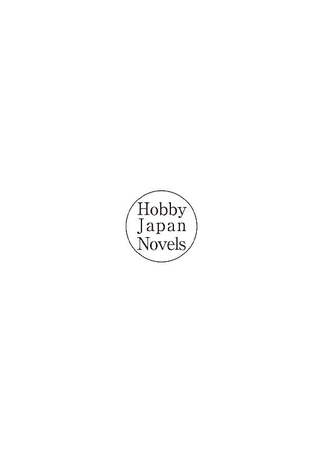
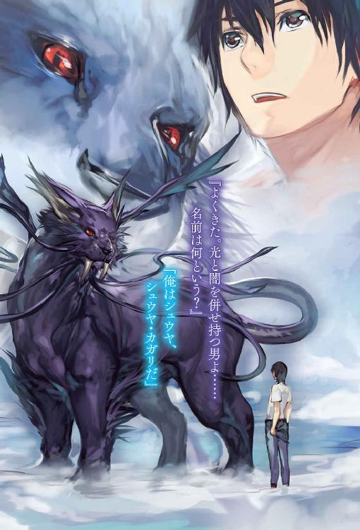
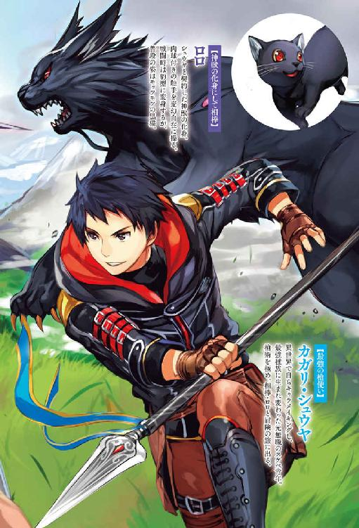
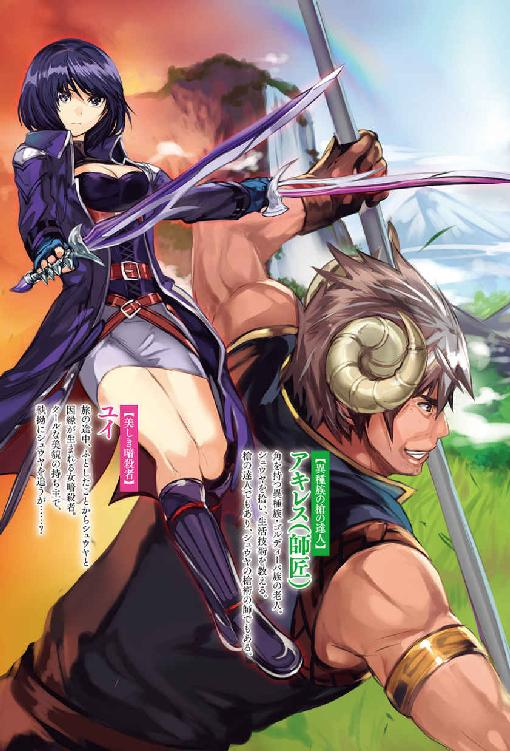
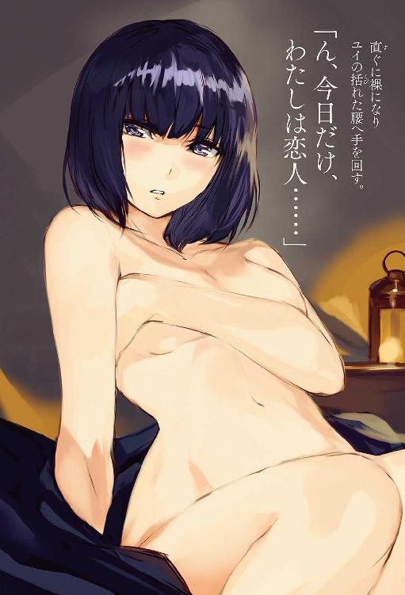
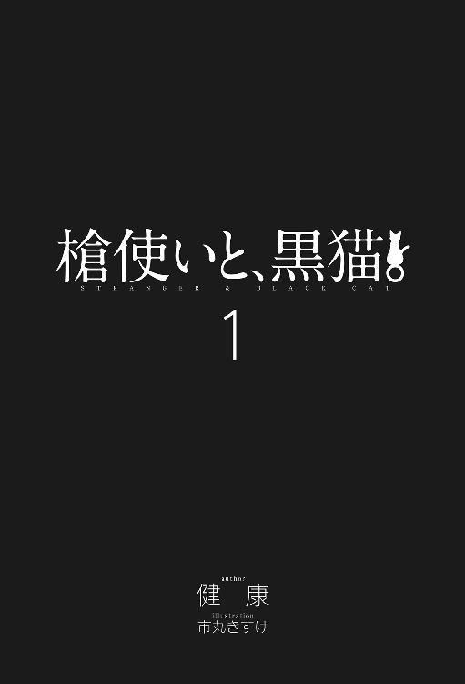
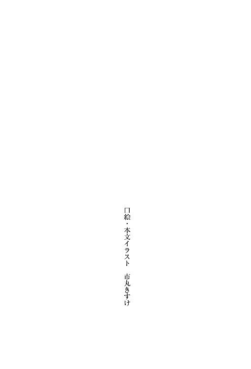
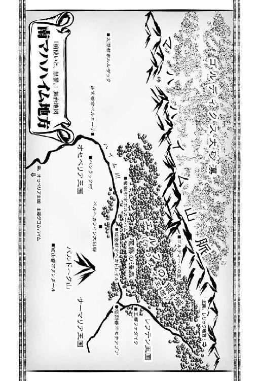
「え？ 何だここは......」
真っ白な空間？ 目の前には豪奢な白い机と黒い椅子があるだけ。
さっきまで両手に持っていたギター型のコントローラーがない。だが、そんなのはどうでもいい。突然目の前に亀裂が発生したんだ。アパートを切り裂くような十字型の亀裂。
その亀裂の中に闇の螺旋、黒洞々の渦が見えた瞬間、その黒渦の中へ吸い込まれてしまったんだ。それで気が付いたらこの白い空間に俺は居た。
「夢か？」
頬をつねる。痛い。夢じゃないのか？
「おいっ！ 誰かっ、誰か、いないのか？」
俺の叫び声に誰も反応しない。白い空間へ声が虚しく響くだけ......。
誰も居ないのかよ。怖すぎるだろ。怖いが目の前にある机と椅子を調べた。
机はチェス盤の木目が刻まれた分厚い四角形。
四方の隅に小さい男と女のミニチュア彫刻が厳かに立つ。
このミニチュア、フィギュアのように精巧だ。男には男根、女には胸の膨らみが確りと表現されている。その彫刻を含めた四角い机は大理石のように冷んやりしていた。
椅子の上部はゴシック調の王冠飾り。無表情の顔彫刻たちが背凭れを形作っている。
まるで芸術の森とか博物館にありそうなリアルな彫刻。その仏像にも似た無表情の顔彫刻たちが、今にも表情を変え喋り出してきそうだ......ホラー映画的な演出は止めて欲しい。
と、考えながら何気なく机の下を覗く。
「机の下に......」
血で汚れているトレッキングブーツらしき靴が置いてあった。
「何で？」
血の汚れが気になるけど、この異常な白き空間に何があるか分からない。
今後の為に備えておいた方がいいかもしれないと、履いてみた。
白い床の上を爪先で叩きながら靴の感触を確かめる。うん、普通の靴だ。足先で叩いた地面は固くタイルのような感覚だった。
「かたい」
白い床面は確りとしている。だがそんなことはどうでもいい――。
「現実とは思えない。やはり、夢、または臨死体験かな？」
頬をつねると痛みを感じた。夢ならとっくに覚めているはずだ。
確かこういう時はリアリティチェックで、息を止めたら良いんだっけか。
スゥッと鼻で息を吸い、肺に空気を溜めて息を止める。少しずつ息を吐いていく。
一分は超えたか？ く、苦しい――ぷはぁぁぁ、ゲホッゴホッ。苦しいが普通に息を吸えている。この白い空間......酸素とか窒素があるのか？ しかし、そんなことよりも、この状況だ。典型的な展開なら神様とか現れる筈。でも、何にも反応がない。ただ、机と椅子があるだけとか......どうなっているんだ。異世界召喚ではなく、ただ拉致られているだけ？ では誰が？ こんなことが出来る存在は神？ 高度な知的生命体？ イタズラ好きな知的生命体？ 高度な知的生命体による地球人類七十三億の中から俺が無作為に選ばれた存在だったり？ もしかして、今、宇宙船の中？ 俺の体、解剖とかされちゃうのかなぁ？ だったら嫌だな、嫌すぎる。こんな妄想を起こしても、しょうがないのだけど。
ぐるぐると頭の中を下らない思考が駆け巡る。そして、ゆっくりと白い空間を見渡して背後を向いた。何もない真っ白空間。少しこの空間を歩いてみるか......と、暫く歩き続けてから振り返る......あれ？ 目の前に机と椅子があるのみ。反対方向へ歩いていた筈なのに......ある程度は予想していたけど、やっぱりこの意味有り気な椅子に座れってことかな？ お望み通り座ってやろうと黒石の豪華な肘掛椅子に座った瞬間――机の上の空間が輝いて点滅を始める。本当に反応があった。点滅は色調を白、黒、青、灰色と順繰りに変えながら点滅を繰り返す。やがて、その奇妙な点滅が止まると、座っている椅子の顔彫刻たちの双眸が一斉に見開いた。更に、点滅を繰り返していた空間が左右に裂けて、中から意味不明の文字列が滝のように流れ出してくる。
「いきなりかっ」
しかも、立体的に文字が表示されていく。
「......ＡＲ技術？ ３Ｄか？」
最終的に日本の文字が出現していた。
『異世界に転生を開始しますか？』
立体的に文字が浮いている。
「日本語......いきなり転生しますか？ かよ」
立体表示された文字は机の上空間を漂い、下に続きの文字が浮かんでいた。
『はい』ｏｒ『いいえ』タッチをすれば選択されます。
※『はい』を選択した転生後の世界......それは貴方が過ごした世界とは違う世界です。違う宇宙、違う次元、遠い銀河、物理法則が少し違う世界。そこは神々と多次元世界が存在し世に影響を与えている世界。現地の生命体を含めて、貴方とは違う転移者、転生者が存在し異形なモノたちが徘徊する世界。言語は未知の言語体系になりますが、今の記憶を保持された状態で脳や体を改めて異世界に合わせて再構築されるので、ある程度の文化圏言語と文字の理解が出来るようになっている筈です。しかし、人、以外の言語と文字は全くの未知。言語理解はできないでしょう※
これ、プロジェクターとかじゃない。立体文字の説明が、本当に浮いて存在している。
「......この立体表示の文字は」
――触れられるのか？ 浮いている説明の文字へと指を伸ばす。感触は何もなく、指は文字をすり抜ける。不思議だ。しかし、この『はい』を選択したら転生かよ。違う世界、違う宇宙、違う次元世界。ということは、多次元宇宙論は正しい説だったのか？
超紐理論からＭ理論の十一次元、これは違うか。無限に広がる宇宙の中で永遠なるインフレーション理論とされる泡宇宙の存在の方が可能性は高いかもしれない。シャンパンの泡のように宇宙が複数存在するかもだっけか。後はテグマークの分類宇宙の可能性もある。哲学的に考えると、虚構実在論とか。だけど、知っている現代の科学や雑学で考えても仕方がない......そもそもが、物理空間を引き裂いてブラックホールのようなモノに引き込まれての、この白い空間へ拉致られるという超常現象なのだから。
重力波が初めて観測されたので俺のような現象が解明されるかも知れないが。しかし、この浮いている文字と四角い机と不気味な椅子は、夢ではなく現実に起きている現象だ。
ぐっと唇を噛み締めて若干の痛みを味わいながら......理解「しよう」と小さく呟いた。
それにしても体を再構築か......仮に転生の『はい』を押したとして再構築された俺は俺のままでいられるのか？ 我思う故に我ありとかの話じゃないぞ。記憶は保持されると表示されているが不安は残る。今の状態はやはり死んでいるのと同じか？ 死んだなら死んだで選択肢は狭まるが。ここで『いいえ』を選ぶと一体どうなるんだろう。
『はい』の選択肢しか説明がされていない。『いいえ』を選ぶと元の世界に戻れず死んで無になるとか？ 無ではなく元の世界に戻れたとしても俺は無職だ。
心配してくれる家族もいない。両親は小さい頃に事故で亡くなった。それ以来ずっと一緒に暮らしていた爺ちゃんも三年前に亡くなり今は独り。派遣も三年でクビ切りになった後はニート経由で無職。中途半端に金があるせいで怠惰な生活だったし、遺産を食い潰す日々を過ごしていた。なのでそういった面での未練はない。だが、娯楽には未練がある。ゲーム、それに映画、ネットサーフィン、漫画、アニメが見れない......小説も読めない。水泳などの娯楽も捨てなきゃならない。最近は泳いでないけど。あ、異世界でも川や海があれば大丈夫か。煙草も吸えずに美味いものも食えないかもしれない。しかし......いじいじと考えてもな。このままじゃずっと真っ白な空間に閉じ込められたままだ。神の悪戯か解らないが、こうして目の前に未知なる扉が開かれているんだ。何も無い俺がそれに飛び込まないのはアホすぎる。宇宙飛行士でもＮＡＳＡ職員でもない。ただの無職が、違う次元、違う宇宙、違う物理法則、そんな未知なる世界に挑めるってことだろ？ やはり、俺は人類七十三億の中から選ばれし無職。あ、違うか。他にも転生者や転移者は存在すると表示されていた。ま、そんなことより選ばなきゃな。選択は『はい』か『いいえ』か。二つに一つ。と言っても答えはもう出ている。普通だったら不安で一杯になるんだろうけど、正直、不安より期待が大きいんだよな。久しく感じていなかった、この、ワクワクする童心の感覚は抑えられそうもない。空中漂う、この転生の文字。
そう、小説やゲームじゃない。俺自身が選べるんだ......こんな真っ白な空間に閉じ込められた状態で、まともな判断や思考ではないんだろうけど......やっぱり未知の世界に挑戦し、実際に体感して味わいたいのが、本音だ。ゴーギャンの問いにもあるだろう。驚くべきことが待っていると。決めたよ......未知の世界にいく。
「旅立ちます」
その場で立ち上がり深々とお辞儀をする。
誰が見てる訳じゃないが二度と戻れないだろうし。
不気味な椅子に座り直して空間に浮いている『はい』の文字へ腕を伸ばす。
指先でポチッとタッチをした――うあっ『はい』の立体文字に感触を感じた。
シリコンやこんにゃくのような柔らかいキモイぐにょっとした感触。
どうやら重要な文字は感触があるらしい。押した後『はい』と『いいえ』を含めた文字は分解され崩れるように消えていく。完全に文字が消失すると、また新たなアルファベットやコード記号文字が滝のように上方から流れ落ちてきた。
流れてくる文字群は未知の川のように不思議な色彩の流れを作り出す。
何か『マトリックス』風で幻想的だ。その多種多様な文字や記号はフィボナッチ数列を作り出しフラクタルの形状を取り幾何学的模様を繰り返しながら未知なる自然の花を映し出していく。花の形から未知の粒子を放出させるように蠢いて変化をしながらトポロジーのようにうねりを見せながらドーナッツの環形を作る。次々と形を変えていった。
なんだこれ？ 不思議に思うが見てしまう。今度は波を打つ波形へ変わりゆらゆらと動く物体へ姿を変えていた。物体はＵＦＯのように宙を自在に動き回り不規則な動作を繰り返す。そして、流線状に弧を描いて波状の物体が弾けるように消えた直後、目の前に左手と右手の立体的な手形が出現していた。手形は薄緑と淡い青を交互に点滅させながら光り輝いている。その手形の下には、
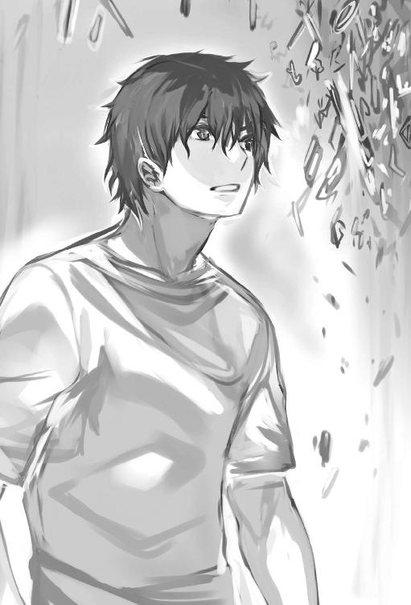
『両手をこの立体へと差し込んでください』
立体文字が漂っていた。この手形に俺の掌を差し合わせるのか？ やってやろう。
文字通り両手を立体的な手形へ差し込んだ。ガチャッと硬い音が鳴り手形がフィット。
手首も嵌ってしまい両手が手形から抜け出せなくなってしまった。
両手から手首にかけてぬるっとした感覚とアルコールの匂いが漂ってくる。
立体文字には『キャラクタースキャンを始めます』と、表示されると、座っている黒椅子の顔彫刻の口が一斉に開く――目の次は口か。その口の中から黒い触手のようなモノが飛び出してきた。植物のような黒蔓？ その黒蔓が瞬く間に、俺の首と腰部に巻き付かれてしまった。黒椅子に身体が固定されてしまう。巻き付いた黒蔓の感触は蛸足のようで気持ち悪い。腕も手形に嵌められて身動きが取れない。だが、頭だけ動かせるっ。
頭を動かした直後、今度は見開いていた眼窩から目玉が飛び出してきた。
その目玉たちは目玉親父よろしく。といった可愛さはない。目玉の下部は細長い血管のように脈打ちを見せながら上下左右に蠢き俺の周りを漂い始めている。その気持ち悪い目玉の瞳孔が、カメラのズームアップでもするかのように縮小散大を繰り返すと、その瞳孔の中心点から赤い光線が俺の身体へ向けて放たれてきた。俺をスキャンしているのか？
そのスキャンしている赤線が俺の足先で消えると、また机の上にある空間に裂け目が発生した。その裂け目から薄緑色の燐光が漏れ出す。その光は薄緑色の文字群となり数字や数式が雪崩のように流れて消えていく。さっきと同じ？ いや違う。日本語でも現れ始めた。
※エピジェネシス強制展開※
※ヘイフリック限界強制解除完了※
※超力多能性幹細胞※展開※
※テロメア総数スキャン完了※
※Ｔループ及びアポトーシスの停止※
ＤＮＡの螺旋鎖が薄緑色の文字群で映し出されていく。
二本鎖や三本鎖など、高分子生体物質の核酸だ。
※ＲＮＡ完全スキャン完了※
※触媒サブユニット展開※
※リボソームＲＮＡ共通祖先完全スキャン完了※
※遺伝子重複※複合系解析完了※
※完全スキャン完了※
なんだ？ 数々の訳わからない文字や記号が表示されていく......。
最後に『キャラクタースキャン完了』しました。
俺の身体が表示された......物凄いグラフィックだ。リアルなもう一つの体の下には、
『転生後のキャラクタークリエイトを開始します』
種族を選択してください。といった立体的な文字が表示されている。
「ゲームみたいだ。超絶未来型の......いいねぇ、自分自身のキャラクターメイキング」
笑みを浮かべて独り言を呟きながら空中に浮かんでいる種族の選択の項目に手を置くように触る。その瞬間、周りの白い空間が立体的な巨大スクリーンへ変貌。
白い空間から自然豊かな世界が生成されていく。まるで巨大なキャンバスに絵を描くように......個性溢れる生き物たちが次々と誕生していくので見ているだけでも楽しかった。目の前に多種多様な種族のキャラクターが表示されていくので、その生きているキャラクターへ手を伸ばし触れると、不思議な感触がある。その触れたキャラクターの情報がウィンドウ表示された。リアルな立体映像。感触がある時点で映像と言えるのか？ と疑問に思いながらも実際に歩いて動いているキャラクターの姿を見ては感動を覚える。左右の手を動かすとウィンドウが動くので、ＳＦ映画をリアルで体感している感じだ。
手がコントローラー化。凄い。指先の微妙な感触まで汲み取っている。
声で指示を出しても、ちゃんと認識して動いた。
何度も思うが凄いリアルだ......箱ｏｎｅのキネクトなんて比じゃないな......ＰＳ４のヘッドマウントディスプレイを装着して遊べるＶＲ体験を超えている。
小説とかによくあるＶＲＭＭＯとか、こんな感じなのか？ 映画で立体映像を駆使した作品があるが......色々と情報が載っているスクリーンを飛ばしたり戻したりして種族の情報を選択して一つ、一つの情報を読んで調べていく。
人族、アンムル、エルフ、ハーフエルフ、ラハカーン、ダークエルフ、ハーフダークエルフ、セバリー、セブプーン、オーガ、ゴブリン、人魚、ノーム、ドワーフ、エンシェント・ドワーフ、ハーフドワーフ、竜人、リザードマン、猿人、デミヒューマン、ジャイアントブル、サイクロプス、センシバル、ヴァンパイア、ヴァンパイアハーフ、クシャナーン、ソサリー、ラミア、ハイ・エルフ、等々。
沢山の種類があるので選ぶだけでも時間が掛かる......左右の手を目まぐるしく動かし続けて種族の姿を確認。中にゴキブリ姿の種族もあり吃驚した。
テラなんたらの漫画を思い出す。
「この中から自分が成れる種族を選べる訳か。自由度満載で悩む......」
折角の異世界転生だし同じ人間はつまらない。詳細を更にタッチすると、
※注意事項※必ずお読みください※
こんなのが出た。
※注意、種族特性は新たな恒久スキルとして組み込まれ貴方の選んだ種族特性は必ず恒久スキルとして受け継ぎますが、種族特性を持っていない同族も多数存在しています※
皆が皆、恒久スキルを持っていない？ ってことかな。
人族を試しに選択し軽い文化と歴史を知る。職の神レフォトも関係するのか。
ゴブリンを選択して、ゴブリン族の大半が欲望の王魔トドグ・ゴグを信奉していることを知った。続いてヴァンパイアを選択。選択すると俺のキャラクターグラフィックが変化。
見た目は人間の姿をしているが八重歯は尖り伸びていた。
皮膚は青白く目が真っ赤に変化を遂げている。
「青白い顔と真っ赤な目はヴァンパイアらしい。けど、不気味だ」
しかし、脂肪腹は無くなり全身の筋肉も増強されて見えた。詳細を見てみよう。
種族：ヴァンパイア
平均寿命：？？
種族特性：〈怪夜魔族〉：〈吸血〉：〈不死能力〉：〈変身能力〉：〈身体能力増加〉：〈魔法能力増加〉：〈血魔力〉：〈腸超吸収〉：〈太陽炎身〉：〈光滅身〉
恒久スキル：〈真祖の血脈〉：〈魅了の魔眼〉
※ヴァンパイアは吸血神ルグナドが産み出したとされているが定かではない。人族社会から魔族と揶揄され常に人族や亜人から討伐対象となる。そして、完全な不死ではないが弱点を突かない限り永遠な不死の存在である。〈血魔力〉を使いこなせれば姿を変える変身能力を覚えることも可能だ。最大の特徴は、身体能力と魔法能力増加だろう。普通の人族よりも圧倒的な魔法能力と強靭な身体能力が備わっている。しかし、血を摂取しなければ血漿欠乏症となりミイラ化に至る。完全にミイラ化すると極端に能力は落ち老人や老婆の姿へ変わり果てる。だが、ミイラ化により滅することはない。人族社会の裏でこっそりとヴァンパイアの社会が形成されているだろう※
本当に変身できるのか？ ためしにタッチ。
※変身能力※
※〈血魔力〉を使いコウモリや鴉など様々な闇の生物に変身可能。成長と共に変身生物は増える※
やはり立体表示された。怪夜魔族にもタッチ。
※怪夜魔族※
※闇の魔法が使える。闇の属性攻撃を吸収する※
おぉ～キタキタ。闇の魔法に属性を吸収か。いいねぇ。次は吸血を調べてみる。
※吸血※
※血を吸った相手は弱催眠、血を吸うごとに自身の微身体能力、微魔法能力上昇。ただし三日吸血なしだと能力微少減少、七日過ぎても吸血なしだと徐々にミイラ化する※
えっと......能力がアップするけど吸血は弱点みたいなもんじゃ？
次は腸超吸収をタッチ。
※腸超吸収※
※ありとあらゆる栄養素を取り込み毒素を中和する腸。魔素吸収率も大幅に上がる。ヴァンパイア独自の腸内細菌を持ちあらゆる環境に適応を促す※
へぇ、凄い腸を持つんだな。弱点らしいのもタッチ。
※太陽炎身※
※太陽光、紫外線に当たると自然発火する。浴びすぎると体は灰と化す。不死能力関係なし※
※光滅身※
※攻撃を受けた部分は焼かれる。強力な光だと体ごと消滅し不死能力関係なし※
やはりこの辺は特性というより完全な弱点だ。次は恒久スキルにタッチして調べてみる。
※恒久スキル※
※これは常時発動中のスキルのことであり未来永劫恒久的に発動し続ける※
常に効果を得られるということか。見てみよう。真祖の血脈をタッチ。
※真祖の血脈※
※魔力、精神力＋補正※
※処女の血を獲得すると吸血神ルグナドを産み出したとされる真の吸血鬼血脈である真祖の力を解放。スキルの融合統合を促し二段階、魔力と精神値が上がる進化を促す。専用スキルを取得※
※真祖の血脈※
→？？？
※処女の血を飲むことによりヴァンパイア族の真祖の力が解放される※
ヴァンパイアらしく、処女の血を得ることにより？？？のスキルが解放するのか。
狙って処女の血を飲むのは大変そうだ......次も調べる。
※魅了の魔眼※
※一定の条件下で精神値が低い者を魅了する。絶対ではない。条件が重なると成功確率が上がる。知力、魔力、精神、が関係※
こうして見るとヴァンパイアは弱点も多いが能力も高い。
「この種族は面白そうだ。候補の一つだな......」
次はヴァンパイアハーフを選択してみよう。タッチ。立体映像のキャラクターは若干変化していく。牙も無くなり青白い顔もなくなった。見た目は人間にそっくり。贅肉は消えて細マッチョ。全盛期の学生時代を思い出す。筋肉とかはヴァンパイアと同じように付いてるようだけど。
種族：ヴァンパイアハーフ
平均寿命：？？
種族特性：〈怪夜魔族〉：〈吸血〉：〈不死能力〉：〈身体能力増加〉：〈魔法能力増加〉：〈腸超吸収〉：〈光滅身〉
恒久スキル：〈真祖の血脈〉：〈魅了の魔眼〉
※ヴァンパイアより更に希少性が高くヴァンパイアと人族の間で出来た両方の性質を受け継いだ生物。ダンピールやヴァンパイアハーフといわれる。血の制約もヴァンパイアと変わらない。不死だが半人族なので人族社会に溶け込みやすい種族である。ヴァンパイアと同じように人族による討伐や迫害対象だが昼間も活動可能。尚且つ見た目が人族なので滅多に正体が露見することはない※
「おぉ......」
ヴァンパイアのように変身はできないけど弱点が少ない。ヴァンパイアハーフがいいな......昔からヴァンパイア系の映画が好きだったんだ。しかし、血が問題だ。普通の人間を無理矢理襲ってまで血を奪うとかは、やりたくない。良心が痛みそうだ。それとも成ってしまえば心が変わるかな？ 生きていくためだし精神的に変わるかも。そんな甘い希望的観測を持ちながら他の種族も色々試しては調べていく。やっぱり俺にはこれしかない。
人の営みには接していたいし特殊でもありたい。人間を止めることになるが。新たに始める自由な人生だ。別に構わない。血を啜っても生きてやるさ。サイコパス万歳。寿命がないヴァンパイアハーフを選び決定ボタンをタッチした。
リアルな立体モデルはその場で回転して動きお辞儀をする。
その下には『種族ヴァンパイアハーフに決まりました』と、表示された。
その瞬間、また上方から滝のように文字が流れ出す。
立体的に表示されていた他種族のキャラクターたちは文字と一緒に流れて消えていく。
最終的に次の言葉が浮いていた。
※次にエクストラスキルを四つ選択してください※
※注意事項※※必ずお読みください※
※エクストラスキルは希少性が極めて高い固有スキル。更にエクストラスキルは相性があります。スキルや他のエクストラスキルと連鎖、多重リンクを起こし様々に派生していく特殊スキルを覚えることがあるでしょう。成長と共に進化を遂げるだけでなく、エクストラスキルを取得するだけでも貴方に変化を及ぼし、更なる飛躍を齎す可能性があるのです。但し貴重なエクストラスキルもあくまで人の範囲での話です。千差万別、多種多様な世界。転生予定の世界は何があるのか全く分かりませんので、覚えておいてください※
※時間制限あり※
※エクストラスキルは十五分以内に選択してください※
「......時間制限ありかよ」
そのメッセージ後、また滝の如く文字が表示された。続いて、右隅にデジタル時計が表示される。そして、ありとあらゆるスキル名が表示されていく。
エクストラスキルはレアなんだな。それを最初から四つも選べるのか。転生後の人生の為だ。得するなら選んでおこう。立体的に表記されている大量にあるスキル表示名。
この中から使えそうなスキルを急ぎ、多数ピックアップしてみた。
翻訳即是、サデュラの茨印、ギリメカラの野望、メリディアの洗礼、光の授印、セプトーンの波、アシュラー運命の系符、ターブオンジェの歯茎、ヴァイスの戦声、脳魔脊髄革命、セミアの薔薇印、シャファの慧眼、ガイア神秘石の刻印、精霊の加護、呪神アルルの波動、デスラの波動、アリアの涙、力の奔流、火の授印、ガイアの夜明け、魔闘術の心眼、導魔術の心眼、仙魔術の心眼、荒四鬼、神剣カシュナスの恩寵、神槍の神魔石、ロード・オブ・ウィンドの手、亜神ゲロナスの加護、アロトシュの巫女、神槍の疑似石、魔法革命、鎖の因子、ラースゥンの水晶、ノクターの篝火、ラプンツィルの翼、ブーの環、魔力楔の解、千里眼、レブラの星、ローレライの刻印、ボシアドの魔眼、狂王のペルソナ、超術の開祖、セミアの毒針、ウラニリの流星雨、ゼデンの呪い、鳳凰の手、等々。
二分経過......殆ど内容は見ていない。
選べる数はもっと無数にあるが、一つ一つ詳細を見るのは時間がかかる。
「この中から選択するか......」
まずは翻訳即是だな。詳細っと。
※翻訳即是※
※思考能力がアップ。言語や文字の理が感覚で理解できるように成る。絶対ではないが翻訳できるものはある程度理解し、書けて、声帯が合えば話せるだろう※
ということらしい。
「翻訳的スキルか。やっぱり......人間以外とも話をしてみたいし」
一つ目は翻訳即是に、さくっと決定っ。決定した瞬間、表示されていたエクストラスキルの数が一気に減っていた。一つ選択する度に候補が消えていくのか？
残っていたスキルから選択か。それじゃ次はこれかな。指でタッチして詳細を見る。
※光の授印※
※魂に光の授印を刻むことで体の一部分に十字のシンボルマークがつく。光属性の攻撃を吸収＆無効化。精神耐性も向上。深層精神汚染を防ぎ、自動発動後は、鐘の音を鳴らし浄化を促し自分自身が成長すると、ある一定の条件下で固有光属性スキルを覚える※
おっ？ こりゃ、ひょっとするとひょっとしちゃう？ ヴァンパイア系の弱点の一つである光属性の弱点がなくなるのかなっと、簡単な思い付きで選択。
「光の授印に決定」
その瞬間――目の前で浮いている俺に似たキャラクターが光を帯びると、左胸に十字マークが出現していた。それは白色の綺麗な十字架マーク。丁度、心臓の上辺りだ。
ステータスも見る。おぉ、種族名も変わっていた。
種族：光魔セイヴァルト
平均寿命：？？
種族特性：〈光闇の奔流〉：〈吸血〉：〈不死能力〉：〈身体能力増加〉：〈魔法能力増加〉：〈腸超吸収〉
恒久スキル：〈真祖の血脈〉：〈魅了の魔眼〉
エクストラスキル：〈翻訳即是〉：〈光の授印〉
※見た目は完全に人族ですが、魔族ヴァンパイアの流れを汲む新種族です。光魔セイヴァルトは希少固有種族と成ります。同族はいません。体内魔素が許容量を超え次第、一段階だけ種族進化を促すでしょう。セイヴァルトの過ごす期間をどう過ごすかで、種族進化を果たした時の成長度合いが変わります※
光魔が付いて、新たな種族になってるし。しかも、種族進化？ 種族特性の光滅身が消えた。予想通りに弱点が消えちゃったよ。更に光の授印で、いずれは固有の光属性魔法が使えるようになると......新種族なので怪夜魔族もなくなった......代わりに光闇の奔流が新しく追加か。早速、光闇の奔流をタッチ。
※光闇の奔流※
※光と闇の属性を魂に持ち、その魂の激流を表した物。光と闇の魔法が使用可能となる。光属性と闇属性の攻撃を吸収＆無効化、精神耐性微上昇、状態異常耐性微上昇。しかし、光と闇の精神性に影響されやすくなる※
光と闇の魔法。それに光と闇を吸収～？ 影響されやすいとか弱点も気になるが......。
「エクストラスキルは凄い......」
これも変わっているかな、吸血をタッチ。
※吸血※
※血を吸った相手は強催眠効果、血を吸うごとに微能力アップ。五日吸血なしだと能力微少ダウン。十五日吸血なしだと徐々にミイラ化する※
やはり吸血も進化していた。吸血なしの期間が三日から五日に延びて弱点も緩和されている。密かになくなってることを期待したけど、そうは簡単にいかないようだ。
しかし、光の弱点がなくなったのは大きい。まさにエクストラスキル。二つ目は文句なしで決定。残り二つ......七分が過ぎる。表示されているエクストラスキルは少なくなってきた。残りの中から選ぶとして、鎖の因子の名前が気になった。詳細を見ていく。
※鎖の因子※
※指定した場所に鎖状のマークを刻み、そのマークの場所から任意に鎖の射出が可能となる。鎖を使い続けると本人の成長と共に成長。鎖は鋼に似た性質だが中身は魂と鎖因子の作用で出来ている。この〈鎖〉で大半の物質は貫くだろう。又、成長と他スキルの影響で、様々な形質変化を起こす。取得すると戦闘職業の鎖使いも自動取得する※
「大半は貫けるのか」
三つ目のエクストラスキルはこの鎖の因子に決めた。
鎖状のマークは左腕の手首に付ける。左手首に鎖のシンボルマークが追加されると、左胸に刻まれてある十字架マークにも変化が起きていた。幾つもの鎖が絡みついている十字架のマークへ変わっている。
「細かい......」
十分が経過、残りは五分。次に気になったのが仙魔術の心眼。
これは魔力を使い自然に同調し、干渉といった遠隔操作に長ける術らしい。
詳細をタッチしたら、そんな風に書かれてあった。気になるが却下。最後に残っている、他のエクストラスキルは......。
「これだ」
脳魔脊髄革命をタッチ。
※脳魔脊髄革命※
※第一、第二だけではない臨界期を無限に引き起こす。思考力と判断力を大幅に引き上げ、自律神経系、交感神経、副交感神経などの運動生理機能を良い方向へ異常発達させる。その恩恵により運動系スキル全般に多重補正が掛かり、体へと吸収される魔素の転換率を飛躍的に上昇させる。恒久スキルに〈天賦の魔才〉が自動追加されるだろう※
脳魔脊髄革命をタッチすると、
※脳魔脊髄革命※
→？？？
？？？とは、今後、何か覚えますよ的なことなのかね？ ？？？をタッチしてもなんにも反応せず。身体能力強化と相性は良さそうだが臨界期とはなんだ？ 副交感神経は分かる。リラックス時に作用し交感神経が興奮した時に作用だ。自律神経系は睡眠や生活のリズムに直結したりストレスとかに関係してるとかだったはず。
まぁ、このスキルがあれば多少のストレスは解消されるかも？ 異世界に行くんだし精神的にタフさが求められるのは必定だろう。最後はこれに決定だ。
制限時間は残り三分を切っていた。
決定ボタンをタッチすると俺のキャラクターモデルが拡大される。
ステータスを確認します。と表示されていた。
ステータス
名前：シュウヤ・カガリ
年齢：２０
称号：異界の漂流者
種族：光魔セイヴァルト
戦闘職業：鎖使い
筋力３．０敏捷４．０体力３．０魔力７．０器用５．０精神７．０運３．０
状態：健康
スキルステータス
取得スキル：なし
恒久スキル：〈真祖の血脈〉：〈魅了の魔眼〉：〈天賦の魔才〉：〈光闇の奔流〉：〈吸血〉：〈不死能力〉：〈身体能力増加〉：〈魔法能力増加〉：〈腸超吸収〉
エクストラスキル：〈翻訳即是〉：〈光の授印〉：〈鎖の因子〉：〈脳魔脊髄革命〉
ステータス確認終了します。
天賦の魔才が自動追加されたのでチェック。
※天賦の魔才※
※戦闘職業＋補正。能力全般の成長補正。魔素吸収率も含む※
細かいんだな。成長補正か。戦闘職業＋補正とはなんだろ？
よく分からんが、指で文字をタッチ。
※戦闘職業＋補正※
※近接と魔法、二つの戦闘職業系に限り成長速度が上がる補正※
でたでた。タッチしても説明が出ないのもあるがこれは出た。
戦闘職業は二つのみ補正されるのか。それでも成長が速い。覚えておこう。
最後に『キャラクターモデルのサイズを変更できます』と表示された。
今度は時間制限はないらしい。早速遊んでみる。
お？ うはぁ、うおっ、こんなことまで......あそこのサイズまで弄れちゃうよ。
少し弄り......巨根、こ、これは無理があるな。普通サイズに戻しとこ。
「ごっほん」
誰も見てないのに何だこの妙な気分は......彼処のサイズは弄るなってか？
いいじゃないか。見栄をはっても。と、誰に強がってんだが......手を動かして身長を増やし、横幅も減らしてみたが......結局は最初と同じの元の身長に戻して最後に少しだけ身長を高くした。因みに元の身長は百七十九センチ。だから、念願の百八十センチ超えだ。
「これで、行こう」
筋力や魔力の数値が低いのか高いのか分からない。ゲームに近い世界なのか？ 全てを決めるとまた『転生を開始しますか？』と立体表示された。その下には『はい』、『いいえ』の文字が浮かんでいる。『はい』を黙ってタッチした。また文字が出現。
『転生後ポケットを確認ください』
その瞬間、闇渦の中へ収縮、収斂されるように俺自身が吸い込まれていく。
周りの白い空間も全てが渦巻くように吸い込まれ消えていった。転生してきた場所は、思い描いていた異世界ライフとは違い絶望を感じさせる地下世界だった。
真っ暗闇、不気味な静寂が支配する広大な闇の洞穴。それら茫乎とした闇が俺に襲いかかり、全てを凍らせ、全てを覆い尽くす。巨大な闇に体ごと飲み込まれるのではないか？
そんな馬鹿げた錯覚に陥ってしまうほどの闇世界。只の暗闇の存在が強大な怪物に思えるほどの威圧感を感じていた。墨を流したような暗闇の時間が俺の感覚を狂わせる。
その闇の洞穴を歩いていると、天井と横壁に仄蒼い夜光虫を感じさせる光る茸たちを発見した。怪しい光、点在している星屑のような僅かな光だけど、目が慣れてくると沈鬱な気持ちが少しだけ晴れた。そこで、転生始めに色々と自分のキャラクターを弄ったことを思い出す。まずはポケットを確認。紙とコインが入っていたので、紙を広げていく。
紙には文字が書かれてあった。
※特典があります。ステータスやスキルステータスと言葉を発するか念じるだけで、自分自身の能力がある程度の目安となって見えて簡易説明がつく特典です。簡単なスキル等の説明がされますが、これはスキルではないので、あくまでも簡単な説明のみとなります。それら簡易ステータス表示のスクリーンは他人には全く見えませんので、ご安心を。貴方の脳が分かりやすく簡易ステータス表記として、貴方だけに見せているだけですので。それでは、良き人生を。因みにこの紙は最後の字を読みますと、自動的に――※
と、読み終わった瞬間、ボンッと音と共に紙切れが一瞬にして燃えた。
「ぬおっ!?」
こんなスパイ映画のような小細工用意しやがって......舐めているな......。
「転生させた神とか見ているのか？ 答えろよ！」
自嘲気味に大きく声を出す。だが、当たり前のように反応はなく、声は虚しく洞窟内に響いていくだけ。何にも反応無しか。あんな白い空間まで用意して、何故、俺なんだろう？
ま、今さらそんなこと考えても仕方がない。自ら転生に『はい』を選択したのは、俺だ。
神は偉大なる作者で、人間はただその演出者に過ぎない。そんな難しい言葉で心に湧いた怒りや愚痴な感情をむりやりに誤魔化しながら、ポケットに入っていた一枚の銅貨を掴む。この銅貨もいつか役に立つだろう。
まずは......左の手首にある因子マーク〈鎖〉の能力を確認。
「スキルステータス」
スキルが羅列表示される。その中からエクストラスキルの〈鎖の因子〉を試しにタッチ。
※鎖の因子※
→？？？スキル
因子をタッチして詳細を調べる。
※鎖の因子※
※成長や他のスキルと連動して鎖の因子作用も進化。〈鎖〉の性質変化を促す可能性がある※
性質変化とは何ぞ？ と、疑問に思い、表示されている文字に指でタッチを重ねてもこれ以上の説明は表示されなかった。まぁ、自分なりに少しずつ理解していくしかない。
？？？スキルとか出ているし何か覚えるのかな？ ゲームだと熟練度システムに近いのか？ 謎だらけだけど、やるだけやってみよう。左手首に刻まれてある鎖状のマークを黙って見つめながら頷いた。気晴らしに伸ばした〈鎖〉を確認。見た目は鋼鉄が編み込まれたワイヤーの集合体だ。鎖を確認してから洞窟を歩きだす。光る茸の淡い明かりを頼りに、ガレキ石が広がっている薄明とした洞窟の奥へ進むと、徐々に横幅が狭くなってきた。
右や左に大きい横穴もあるが構わず真っすぐ進む。
「進むしかないんだ......」
そう呟いた時――通り過ぎた背後から変な音が聞こえてきた。カサカサ、ジュロロと、嫌な予感――後ろを振り返ると、奇っ怪な怪物が左右の穴から湧き出てくる姿が見えた。
「うはぁ、なんだこりゃ」
Ｖの字型の長細い管が二つ。その姿に――思わず背筋が凍りつく。
「ん？ 管じゃないぞ？」
管に見えたのはハエやトンボのような眼球の集合体で複眼だった。
Ｖ字形で縦に伸びる管のような物の中に眼球がぎっしりと詰まりギョロギョロと回転しながら四方八方を見ている。そのナメムカデが、カサカサジュロロ、と不気味な音を発しながら、ぞろぞろと穴から湧き出てきた。更に、沢山ある眼球が一斉に揃い動き俺のことを一点に集中。餌と認識したのか近寄ってくる。怖いけど動きは極端に遅い。
見た目は不気味だけど、少し安心した。これなら倒せそう。落ちていた石を拾い、狙いをつけて、投げつける――石はナメムカデの目玉に当たった。ブシュッと、眼球が潰れる異音が響く。よし、いい感じだ。続けて投げる。投石でナメムカデの眼球を幾つも潰すと、眼球集合体のＶ字管の片方が倒れて動かなくなった。一匹殺ったのか？
しかし、そんなナメムカデたちは次から次へと現れる。全部ぶっ殺す。幸い、ここの地面には石や崩れた岩石が大量にあるからな。
「ヒャッハーッ！」
テンションがどうかしてるが構わない。それら足元に転がる石を拾い、投げつける。
拾っては投げ、拾っては投げ――もう何でもいいから、妙なテンションを維持して投げ続ける。ブシュッ、ブシュッ、ブシュッ、ブシュッ、潰れる異音が辺りに響いた。
途中で〈鎖〉も使えることを思い出す。鎖を突出させてナメムカデを貫き殺す。
ナメムカデが現れた穴の周りには潰されたナメムカデの白い体液が散りどっさりと白い死骸が山のように積み重なっていた。やがて不気味な音が止む。
左右の穴からはもう出てこなくなったか？ と、少し安心した時。
※〈投擲〉※スキル獲得※
隠れながら石を投げて倒すと〈隠身〉も獲得できた。脳から音？ 高音で脳内に響く音と共に視覚にも赤い文字で※〈投擲〉スキル獲得※と表示された。
不思議と心地よい音。脳に響く......スキル獲得音。まるでゲームだが現実だ。
前の世界じゃ、確実に幻聴と幻覚だ。しかし、ここじゃ違う。自分の行動した感覚が湧き上がり研ぎ澄まされていく。何だこの感覚は......最初からスキルの〈投擲〉を知って動きを覚えている感覚。と、言えばいいだろうか......。
「不思議感覚だ」
俺がスキルを覚えた理由は石を投げてあの目玉ナメムカデを大量に殺したからか？
経験が力になるんだな。そんな余韻めいた感想を抱いていたら、
「グルルゥ」「シュァァ」と、獣の唸り声たちが轟く。
暗闇に浮かぶ仄白い一つの眼、間歇的にもう一つの獣眼が現れる。
洞穴の仄かな明かりがその獣の全貌を現した。大きさは小型犬。
頭の口だけが異様に横へ広がっている。長い定規が入っているかのような裂けた口から剥き出しのノコギリ歯が生えていた。鋭そうな先端から触れば肉が溶けそうな粘液の涎も垂れている。ヤバイ、逃げたい。けど、前と後ろからも獣の唸り声が聞こえてくる。
ここは石で先制するしかない――投げやりな感じに石を小型犬モンスターへ投げつけてやった。しかし、そんな気持ちで投げた石もスキル〈投擲〉があるお陰か、スナップを利かせた無駄のない投擲になっていた。石はスムーズに飛んでいく。
最初に投げた石は口裂け犬の頭に一つ、二つ、三つと直撃。ナメクジを倒した時とは違う。ダーツのプロ選手やプロ野球選手にでもなったようにも感じる。勿論、選手じゃないので適当な感覚なんだけど。要するに、柔軟な手首スナップと絶妙なコントロールだった。
続けて隣にいた犬の胴体にヒット。どうなってんだ？ と、突っ込みを入れたくなるぐらいの出来栄え、動きは意識せずに自然体のフォーム。スキル〈投擲〉のお陰だ。
俺が投げた石が頭に直撃した口裂け犬は地面に倒れる。
胴体に当たった口裂け犬は悶え苦しむように身体を震わせて倒れていた。
よし、やったぜ、と、喜びも束の間、違う口裂け犬が現れる。
「ガルルゥ――」
持っていた石を急ぎ近寄る口裂け犬へ投げるが、間に合わず、その口裂け犬が飛び掛かってきた――「ヤバッ」と、走り逃げようとした瞬間――。
※エクストラスキル※脳魔脊髄革命の派生スキル条件が満たされました※
※〈脳脊魔速〉※スキルを獲得発動※
その言葉が脳に響くと同時に、視覚の左上に〈脳脊魔速〉と赤く表示される。
瞬時に後ろへと跳躍――同時に頭にズキンと痛みが走り、スキルを理解する。
襲い掛かってきた口裂けた犬は、硬い岩盤に頭部をぶつけ、歯が折れ、よろめいていた。
「頭が痛いっ――だが、避けられた。スキルにより異常な速度を出したのか？」
スキルは理解しているが、声に出しても、まだ慣れない。ふらついた犬は僅かに動いている。頭痛を感じている暇なんてない。今がチャンスだ。
このスキルにより得られた速度は時間制限ありと、瞬時に分かったので急ぐ。
左手を口裂け犬へ向け掌をスコープに見立て、狙いを定めるように翳す。
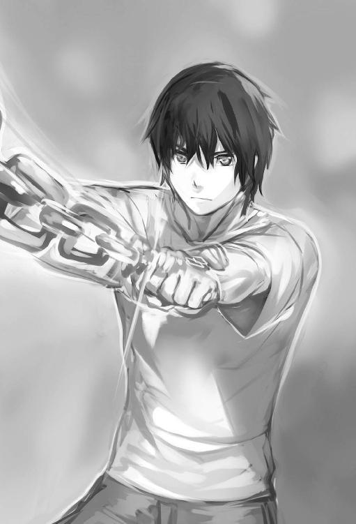
「いけぇぇぇぇっ」
左手首の鎖の印から〈鎖〉を射出。口裂け犬は剥き出しになった折れた牙が目立つ口を広げていた。その口の中に〈鎖〉が吸い込まれ犬の口蓋を貫通し脳を突き抜けていく。
犬は頭を貫かれた衝撃により胴体が切り揉み回転しながら転がった。
そこで〈脳脊魔速〉が自動解除される。
「このスキル、すげぇ......」
まだスキル効果が残っているのか不思議と脳の思考が明瞭になっている......。
明瞭な思考だが、頭の内部から発生している熱を感じ取った。
その熱は徐々に熱くなり、熱が首筋や体に伝搬していくのが分かる。
感覚はどんどんと強まり頭から背骨にかけ熱を帯びているようにも感じられた。
いや、骨というか......。
「もっと、奥......中まで熱い」
不思議な感覚だ......脳や背骨に連なる神経の細かい血管の先々まで熱くたぎる血流が浸透し躍動しているのが映像を浮かぶような感覚で分かった。
最初は頭痛がしたが今はどこも痛くない。新たに体が作り替えられていく......。
「体の内部が変わる感覚......」
興奮が自然に声となって漏れ出る。この世界は自分の行動によってスキルを得られるようだ。〈脳脊魔速〉......限定的な速度アップを促す能力。このスキルは感覚で分かるが確認してみよう。
「スキルステータス」
目の前に半透明のスクリーンが出現。
スキルステータス
取得スキル：〈投擲〉：〈脳脊魔速〉
恒久スキル：〈真祖の血脈〉：〈魅了の魔眼〉：〈天賦の魔才〉：〈光闇の奔流〉：〈吸血〉：〈身体能力増加〉：〈魔法能力増加〉：〈不死能力〉：〈腸超吸収〉
エクストラスキル：〈翻訳即是〉：〈光の授印〉：〈鎖の因子〉：〈脳魔脊髄革命〉
ステータス画面を弄りながら〈脳脊魔速〉の派生元である、エクストラスキルの〈脳魔脊髄革命〉をタッチする。
※脳魔脊髄革命※
→〈脳脊魔速〉
→？？？
？？？ということは〈鎖の因子〉と同じで、これから新しいスキルを覚えるかもしれない。ということで認識するか。〈脳脊魔速〉をタッチ。詳細を見る。
※〈脳脊魔速〉※
※発動条件にある程度の能力値が求められる。脳内に一定のアドレナリン分泌とノルアドレナリン分泌が必要。恒久的に脳と脊髄から連なる新たな神経網と血管を増加させ続けて爆発的な身体速度を得る。スキル使用後、二十秒間身体速度が飛躍的に上昇。連続使用不可、クールタイム二十秒※
このスキルについては説明が出た。半透明なウィンドウを閉じる。
速度上昇系のスキル。クールタイム二十秒か。
そこで右手を見た。右手には血液がべったりだ。振り払うが血はべっとりと付着している。その血濡れた右手を注視。俺にはこの血が必要なんだよな。
「血を摂取しないと、最終的にはミイラ化してしまう」
血液ならモンスターでも大丈夫かも？ 試しに指についた血を舐めてみた。
「......んっ」
意外に――旨い。指を一気に舐め上げる。血液がこんなに御馳走になるとは......。
自然に血の美味しさを感じた。やはり、精神や思考にも作用してるのだろうか？
たぶん、そうなのだろう。血は摂取できた。これで五日経っても、俺の能力が減少しなければ、俺の身体に必要な血はモンスターや動物からでも補給できるって事だ。
恒久スキル〈真祖の血脈〉の解放条件に処女の血とあったのは覚えている。転生前に確認したけど、もう一度チェック。恒久スキルの〈真祖の血脈〉をタッチする。
※真祖の血脈※
→？？？
※真祖の血脈※解放条件、処女の血が必要。処女の血を飲むことによりヴァンパイア真祖の力を解放される。その際に二段階最大魔力が上がる進化を促し専用スキルも取得※
真祖、この言葉からはヴァンパイアの始祖を連想させるが......転生時に吸血神とかも表示されていたっけな。それより単純な疑問が頭を過る。
果たして処女の血は一滴でいいのか？ 飲んだ相手は死ぬのか？ 血を吸った相手は俺の眷族になるのか？ それとも血が多少抜かれるだけで血を吸われても平気なのかも知れない。と、単純だが様々な疑問が頭を過る。血を吸えば分かることなんだろうけど、考えちゃうよな。ま、とりあえず処女のことは置いといて......最初に血を吸う人間は死んでもいい相手で試すか......死んでもいいだと？
「......ハハッ」
顔を手で押さえて乾いた笑い声を漏らす。パッと自然に出た残酷な考えに半ば呆れてしまう......やはり少しずつ精神が変わってきているようだ。
「血を味わったからか？」
暗い洞窟へ問うように声を出していた。当然の如く暗い洞窟は答えてはくれない。
はっ今更だな。最初に選択したのは俺自身だ。眉間に皺を寄せて目を見開く。
何もない暗闇の洞窟の先を見つめる。暗闇に手を伸ばし何かを掴み取るように指を動かしながら拳を作った。そして、また掌を広げては拳を作る。
血が必要なら摂取してやるさ。もう昔の俺じゃない。もっと強くなってやる。
この暗き地も未知なる世界だ。想像していた事とは、だいぶ違っていたがな？
この暗い地下世界に順応し抗ってでも......。
「生き抜いてやる――」
思考を重ねた結果か分からないがだいぶすっきりした。
しかし、洞窟を進むと......突然、多数の緑の怪物たちが現れる。
あまりに数が多いので逃げた。部屋らしき場所でやり過ごそうと思った瞬間――。
「え？」と間抜けな声を出す。
それも当然。足元、身体を支えていた地面が消えていた。大きな部屋、レリーフに刻まれた様々な種族の絵の壁、その物が崩れ一気に墜落。下から吹き上げる風が耳をつんざく――何かを突き抜けた感覚も得た。耳に空気が詰まる感覚。気圧でも変化したのか？
項に寒気が走る落下の途中、手足をバタつかせたせいで方向感覚が狂う。
がむしゃらに〈鎖〉を用いて落下を防ごうとした。が、横幅も広く......鎖は横へ伸びるが虚しく空を突くのみ......失敗を繰り返した。そこに、横壁が狭まったらしく〈鎖〉の先端が壁に引っ掛かった！ これでぺチャンコにならずに済む？ と思ったが、鎖が伸びきった左腕は一気に上に伸びて脇から肩が裂ける。裂けた箇所は一瞬で再生し、また裂けるを繰り返した。何回も瞬間的な激痛を味わいながら横壁へ運ばれる――。
視界に壁がっ、俺は激しく横壁に衝突――。
......底についた衝撃か何かで意識が回復した。壮絶な痛みが身体中を蝕むように襲い掛かってくる。そんな痛みを助長するが如く骨山を転がっていた。俺が落ちたところは幸いにも骸骨の山だったらしい。今も、絶賛転がり中である。沢山の骨がクッションになり、体の転がる勢いを吸収しながら跳ねるように骨の山から転がり落ちていた。
底にある骨地面で身体の転がりを終える。ピクリとも体は動かない。そこでまた......。
「......痛い。全身が痛い」
痛みで起きた。痛すぎる。胸や太腿とあちこちに骨が刺さった状態だ。
寝ている体勢から自分の骨かも分からない物体を引き抜いた瞬間、体に激痛が走る。
ぶるりと全身が震えて筋肉が弛緩した。
「グアァッ......イテェ」
痛みを押さえるように「イッッ」と唇を噛みながら引き抜いた傷口を見る。血が溢れているが一瞬で傷が塞がっていく。改めてヴァンパイア系の回復能力に唖然となった。
俺は不死身なのだと、再認識。
「すっ、すごいな......」
でも、大丈夫か？ 痛みは普通に痛いが。こうも回復すると麻痺してくるぞ。と言ってもさっきは極度の痛みによって失神してしまった。不死身だが痛覚は普通らしい。
さて、そんなことよりここはどこだ？ よろよろと立ち上がり目の前の骨山を見上げる――どこかの戦場跡やゴミ処理場の如く。人間やモンスターの骨であろう物が大量に積み重なっていた。その真上に巨大な縦穴が広がっている。これ、俺が落ちてきた縦穴か？
穴の奥を覗く。真っ暗。あの高さからの墜落でよくまぁ助かったな。
あの落ちている最中、普通の人間なら鎖が引っ掛かった時点で、左腕も千切れた筈。そして、壁にぶつかった時も、頭と胸も潰れて即死だったろうに。
真っ暗といえば......ここは明るい。明るい光を放つ光源たちへ顔を向けた。
至るところに明かりがあるようだ。天井から鎖で繋がれた大鍋がある？
その鍋の上には不思議なオレンジの炎が燃えていた。周りを見渡し......。
「まるで地獄の底だな......」
巨大な骨の海の地獄......殆どが骨しかない、とてつもない地下空間なのか？
不安、無常、絶望に近い思いを感じながらも、重い足を踏み出した。
骨を踏みしめながら放浪を開始する。
すると、ゾンビ、リビングデッドの動く死体と、スケルトンの動く人骨が何かを囲うように集まっているところに遭遇した。なんだろう。とりあえず倒すか。
左手首から〈鎖〉を射出――ゾンビとスケルトンを〈鎖〉を衝突させて倒し続けた。
ゾンビとスケルトンを全て倒すと、地面から白霧、人の形をした不思議な靄が浮かび出す。あれ、よく見ると霧じゃない？ 白く光る天道虫の集団だった。
その不思議な天道虫の集団を手で触ろうとするが、天道虫たちは急に細かくジグザグと動いて地面へ急降下。そこに何かあるのを示しているのか？ 地面を探ってみる......と。
「......おっ」
その地面には掠れて読みにくい字が彫られてあった。
れ、て、た、わ、め、す、む。
異世界文字。読めるけど所々が削れていた。その字の下に白色に輝く綺麗な物がある？
掘り出すとそれは大きな天道虫の飾りがあるネックレスだった。飾りの端にゴールドの鎖がついて芸術品の如く見事な作り。虫の裏側を確認。溝の線が幾つかあるだけで普通のネックレスのようだ。しかし、さっきの光？ 霧？ みたいのは、
『......』
「んっ？」
手に持つと微かに風が吹き抜ける。天道虫のペンダントが白く一瞬光った。
「虫だけに虫の知らせ？ 一応、持っておくか......」
そう呟きネックレスを胸に掛ける。ネックレスはそれっきり光を発しなくなった。
また、骨山の脇を進み出す。ひたすら歩く。骨の海は無限地獄のように続いていた。
はぁ......どのくらいの時が経ったのだろう。
羅針盤のない船と同じあてどない骨海を彷徨を続けていく。
時間の感覚はもう完全に狂っている。
足裏で骨を押し潰す音だけが周りに響いていた。血が不足し喉が渇き唇がパサパサだ。
あした、あした、そして、また、あしたと、しみったれた足取りで日々が過ぎていく。
行きつく先は運命にしるされた俺にとって最後の時だってか？
そんな陰鬱な気分で蛍光色を帯びた黒い葉が茂る地下空間に到達すると、岩からちょろちょろと流れている水を発見。水だ、水っ！ 一掬しながら唇が吸い付くようにその岩肌へ唇を当てていた。ぶちゅっと、水を吸うぅ。ちょろちょろと流れる水を必死に啜る。
みずみずみず、と乾きを潤す。心を満たしていると、突然、足に痛みが走った。
「痛いっ――」
足に触ると血が流れていた。切り傷が出来ている。何で？ イテェッ。まただ。何だ？
足回りを見るが、草で覆われていて分かりにくい。その時、僅かに蛍光色を発する草の根本から兎のような動物が飛び出すが見えた。歯を剥き出している。けど、兎かよ。
小さい黒兎が俺の足へと噛みついて来やがった。イタッ、また、足に切り傷を負う。
ん、痛いは痛いが、兎だし、これ、肉じゃねぇか？ 餌だ。にくだにく。肉だぁぁぁ。
ヒャッハ――肉を貰うぞ。逃がすかよ。捕まえてやる――何でこんな場所に兎が生息しているんだ？ と、疑問に思うが、俺にとってはありがたい。神に感謝しながら、その日その日を食いつなぐように黒兎の肉と地面に生えている黒葉を食べて過ごす。
何の展望もなくじりじりと昼夜が分からない地下空間で長らく生活を行い暗闇の世界へ完全に適応したと思った時――。
※〈夜目〉※スキル獲得※
※〈暗者適応〉※恒久スキル獲得※
〈夜目〉スキルを獲得していた。使用すると、ふっと視覚が広がった気がして鮮明に像を結びだす。これは凄い。黒兎を楽に捕まえられる。
〈暗者適応〉をステータスでチェックした。
※暗者適応※
※暗闇世界に適応した種族のみ得られるスキル。暗闇限定で各種能力がアップ。スキル〈隠身〉の効果を上昇させる※
この二つのスキルを取得してからは暗闇が完全に俺のホームとなった。この地下世界で暮らすのもまんざらでもないな。と、タイムイズマネー、機会費用の言葉を忘れた俺。
思考が完全に原始人と化していた。そんな生活の途中、不思議な音が鳴った。
乾いた柏手音が連続で轟く。眩しい光、松明の明かりもあるようだ。
何だ、何だと、その明かりと不思議な音の発信下の場所へ、黒葉が繁る洞穴を走り向かう――〈夜目〉の視界に慣れ切ったせいか、異常に眩しい......目をこすり〈夜目〉を解除して改めて光を見ると、そこには、人らしき存在？
いや 違う、やけに背が小さくずんぐりむっくりの姿だ。
もっと近付いて見てみるか......そっと音を立てないように黒葉が茂る場所を歩く。その背が低い人型へ近付いていく。ハッキリと見える位置から見た......。
おぉ、あれはもしやドワーフという種族じゃないか？
ファンタジー作品によく登場する種族。眉頭が曇るほど眉毛が濃い。
蜂にでも刺されたような腫れぼったい瞼。
「フッハハハハハハ。パドック様に感謝をっ、これでわしも復活だ。ついに恵みがきたぞぉ、ここもあっちも一杯に生えている。ヒャッヒャッヒャッ、【副王会】のせいで苦汁を舐めたが、逆に、追放――万歳ってかァ？ いやァ嬉しいねぇ。この分だと、この黒寿草が生える一帯は、骨海まで続いているようだな」
そのドワーフらしき知的生命体が、えらいテンションで独り言を話している。
武器を持っているが構わない。気合いを込めて草から飛び出した。
「――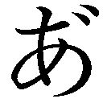、あのぅ、ず、ずいまぜん」
ありゃ、俺の声が......ドワーフは目が血走り、
「ひぃぁぁ、なっなんじゃぁぁぁぁぁ、ここはわしのもんじゃぁぁぁ」
恫喝を浴びせてくると、メイスと斧を腰から抜く。
殴りかかってきた。二刀流とか怖ェェェ――。
「――ぢょ、ま、まっ待って、待っでぐだだいっ、な、何もするつもりはないですっ」
後退しながら、バンザイして諸手をあげる。それに久々に言葉を話したので、舌の根が乾いたような妙な声になってしまった。
「ぬ、訛ったドワーフの言葉だと？ 背中に羽もない。お主グランバではないのか？」
ちゃんとドワーフの言葉になっていたようだ。翻訳即是のスキル効果のお陰か？
訛ったドワーフ語に聞こえるようだけど、ただ単に、俺の吃音のせいかもしれない。しかし、グランバとはなんだ？ ドワーフは右手にメイス左手に斧を構えて、目付きは怖いままだ。俺は口や舌を意識して丁寧に話す。
「......その、グランバとは何なのです？」
「ぬ？ 普通に話せるのか。グランバとは怪物のことだ。骨海に出現する怪物。この黒寿草が生えた地帯よりずっと先にある【グランバの大回廊】である骨の海が広がる場所。古の黒き環が存在する辺りから出現すると言われてる」
あの骨の海か。だが、今は俺自身の弁解タイムだ。
アイム、フレンドリーの精神で背の低いドワーフに話し掛ける。
「怪物ですか......その怪物はこうやって話をしますか？」
慎重に両腕を上げて下げてのジェスチャーを繰り返しながら、笑顔を浮かべる。
「......ふむ、怪物はそんなことはしない。リョゴルの冥界音も効いてないようだし、背には羽根もなし顔も平たい、もしや、マグルか？ 初めて見る。ありえんな......格好も見たことのない上に変な汚い服を着ている？ ノームやダークエルフの魔術師が化けているのではないのか？」
リョゴルの冥界音？ マグルとは何だ？ ノーム、ダークエルフとは他の種族だな。
そんなことより......。
「マグル？ 俺は人だと思います。それで、あなたは一体......」
「蓋上のマグルか。わしは、はぐれドワーフ。一族の名は名乗らんぞ。名前はロアだ」
マグルは人を意味する言葉か。
「はぐれドワーフ......ロアさんですね。俺はシュウヤ・カガリ。カガリでもシュウヤでも好きな風に呼んでください」
「ロアで結構。では、シュウヤ。マグルであるお前が、なぜ、地下に？ それも、この黒寿草が生えるとこに、何で居る？」
マグル、人はこのドワーフにとって危険なのか？
適当に記憶をなくしたとかで、誤魔化すしかないな。
「記憶がないんです。骨の海のような場所にある天井の巨大穴から落ちてきて、助かったのですが」
「なんだと、天の蓋上から落ちてきた？ それで無事？ それはさておき、あの危険な骨海を歩いてきたのか？ リョゴルの音無しでグランバの領域を......」
骨海にはグランバという怪物がいるんだっけか？
「そのグランバには会いませんでしたよ。動く死体みたいなモノには遭遇しましたけど」
「そうだろうな。会っていたら喰われて死んでるだろう」
分からないけど、同意しておこう。
「ええ、はい」
ロアは頭を捻り、自身の顎髭を汚い手で掻きながら口を開く。
「ちと、確認するが【ラングール帝国】の最大都市【地下都市サウザンドマウンテン】や【地下都市リンド】闇毒の都【地下都市ダウメラザン】の名は知ってるか？」
そんなのは、知るよしもなし。
「それはなんです？ 地下に国や都市があるのですか？」
「......この地下世界に生きる他の共同体やドワーフも知らないようだな。そうなると、はぐれの意味も知らんわけだ」
ドワーフのことは想像つくけど、黙ってよ。
「えぇ、はぐれとは何です？」
「わしのような外に放りだされたドワーフのことだ。犯罪者のレッテルだな。わしはラングール帝国から追放されたのさ。【副王会】とのリリウム生産の権力争いに破れてな。壁の外に追放されて、もう何ヵ月も放浪生活を送っているところだ。リョゴルを持っていたお陰で、この地下世界で生き延びる事が出来た」
はぐれか。放浪ねぇ......ようするに、権力争いに破れたおっさんドワーフか？
ロアの目付きが鋭いから犯罪者と言われても納得する。
頭と髭の毛がだらしなく伸びて繋がって、もじゃもじゃ毛が満載だし......。
「なるほど......」
「はは、安心せい。そう身構えんでも大丈夫だ。取って喰う気など無いぞ。飢えていたら分からんがな？ だが、幸いにして、ここは黒寿草が生える一帯が続く。黒寿草を食べるヂヂも大量にいるからな」
黒寿草とは、下に生えてる黒葉草のことらしい。ヂヂってのは黒兎のことだろう。
「そうですか。そのヂヂは、俺も食っていました」
「はは、そうかそうか、お互い運が良いのか悪いのか、わからんな」
このオッサンドワーフ。皺まみれな笑顔だけど、愛嬌がある。
ついでだ、さっきからロアが言うリョゴルが気になるので、聞いてみよ。
「......えぇ、全くです。それで、いきなりですが、リョゴルとは何ですか？」
俺の予想は、腰に装着しているランタンだ。紫と青白い光を発生させているアイテム。
「がはは、これは不思議な光だからな。気になるか。そうとも。これがリョゴル。特殊な魔道具だ。古き伝説のアイテムでもある」
へぇ、特殊な魔道具か。
「どんな効果があるんですか？」
「ここの上をポンッと叩くと周囲に音を発して、特殊な音階フィールドを発生させるのだ。この音は地下に住むモンスターたちを遠ざける効果がある。さっきも言ったが、だから、わしは生き延びてここまで辿りつくことが出来たのだ」
あぁ、だからさっき、変な乾いた音が轟いたんだな。
「なるほど。凄いアイテムですね」
「そうだ。やらんぞ、触ろうとしたら、この斧で頭をかち割ってやるからな......」
ロアは俺の視線が気に食わなかったらしい。
だったら自慢気に見せるなよって言いたいけど、友好的に接していく。
「そんなことはしませんって」
「うむ。そうか、いや、すまんな。わしも長らく友好的な者には会っていないものでな」
「......こんな地下世界ではそうでしょうよ。でも、そういうアイテムは他にも存在するんでしょうか？」
「どうだろうか。わしが住む地下都市には数十個あるだけと思われる。なんせ、これには冥界に住まうリョゴルの一部が封じられていると言われているからな」
冥界に住まうリョゴル？ そんな怪物っぽいのが存在する世界があるのか。
「しかし、わしは確実に運が上向いてきた......ついに見つけたのだからな。この黒寿草が生える一帯を......。明日にはここを急ぎ脱しなければ」
「ここを出る？」
俺は不安な思いを出しながら聞いていた。
「あぁ、ラングール帝国に返り咲く。これだけの黒寿草の束と採取場所があればリリウム成金で、わしは大富豪だ。【副王会】を逆に潰してやるさ。衛兵や議員の買収など容易くなる。しかも、それだけじゃない......ヒャヒャヒャ」
汚い歯を剥き出して笑う。愛嬌があった顔が、今度は不気味な笑い顔だ。
しかし......行っちゃうのかよ。せっかく異世界に来て、初めてコミュニケーション出来たってのに、一人は嫌だな......何とかしたいが。
「......俺も連れて行って貰えませんか？」
「駄目だ」
ハヤッ。
「えっ？ なぜです？」
「ラングール帝国はドワーフの国。マグルなぞ見たこともない。現にわしも初めて見たからな。それに我らラングールの民はマグルの人々やマグル世界を毛嫌いしている。お前さんを連れ帰ったら、わしまで衛兵に捕まり買収どころの話ではなくなるっ」
えぇ、また一人かよ......いやだな。もう一度、頼んでみよう......。
「どうしてもだめですか？」
「あぁ、だめだ」
がっくりだ。ついていったら攻撃も辞さない。という顔色だし。しょうがない......。
専門用語を聞くことだけ聞いて情報を得ておこう。
「そっ、そうですか。残念です......ですが、教えてください。そのマグルとは何です？」
「......質問ばかりだな？ まぁいい。マグルとは蓋の無い世界。地上の世界に住む人々を指す。わしたちドワーフたちも、大昔は地上にも拠点はあったようだが、戦争が長らく続いたせいか、わしらの祖先は地上と交流を絶った。今では長らくマグル、お前さんのような人族を含めた地上の種族たちと交流するのが禁止されている」
ロアは天井に指を差して説明してくれた。
「......地下のラングールには、人族が居ないんですね」
「勿論だ」
地下には人族が居ないのかよ。
「それでは地上へと向かう道は分かりますか？」
「分かるには分かる。地上へ出る直通路と思われる神具台と呼ばれている石筒が幾つかある。我らドワーフの祖先が作ったと言われているんだ」
わぉ、そんな石筒があるのか。という事は、地上へ出られるかも知れないっ！
「そんな物があるのですか......それはどこに？」
「たとえ、見つかっても使えないと思うが......」
「お願いします。教えてください」
ドワーフは俺の必死な顔を見て、毛に覆われた頬を掻きながら口を開いていく。
「......そうだな。マグルとはいえ、こんな途方もなく離れた地下深くで出会ったのも、何かの縁。パドック様のお導きなのかも知れん。教えておこう」
「おお、ありがとう」
笑みを浮かべて、耳を広げるように聞く。
「わしが知ってるのは【ラングール帝国】の中心部である【地下都市サウザンドマウンテン】にある神具台だ。壊れて幾千年の時が経ったとされる。それ以外には......この広い広い地下のどこか遠くに散らばるように点在しているらしい。だが、その神具台を見つけたとしても、独自の使い方があるのか。壊れているのか動かない。そもそも作られた技術はとうに失われているのでな。偉大なパドック、偉大なご先祖様もマグルに通じる道なんて、いったい、何のためにこしらえたのやら......」
ガーン。知っている場所とはドワーフの国じゃないか。ま、壊れているんじゃ意味がない。でも、その神具台をイメージすると石筒、エレベーターのような箱物機械かな？
そのような技術があったことが驚きだ。
「......そうですか」
「おう。それじゃ、わしは二、三匹、ヂヂを狩ってここを離れる。何ヵ月後か分からんが、ここにはドワーフの衛兵や俺の傭兵が来ると思う。その時、見つかるかもしれんから、逃げておくのだぞ？ 去らばだ。マグルのシュウヤよ」
何ヵ月後......この世界の暦の数え方が分からんけど。
グレゴリオ暦、五行、干支、と、似たようなのだとは思うが。
「......はい」
俺の言葉は無視するかのように、ロアと名乗ったドワーフは松明を片手に洞窟の奥に消えていく。寂しい......ロアのことを隠れて追いかけたが、直ぐに見失う。
こうして、また暗い洞窟での生活が始まった。朝か夜かも、分からない日々。
だめだ。やっぱり地上へ、人間、マグルのところへ行こう。手がかりの神具台を探す。
ロアが語っていた怪物とやらが怖いが、あの広い骨海の先にきっと何かがある筈だ。
そういやロアがドワーフを引き連れてここに戻ってくるとか話していた。
どちらにせよ骨海へ行くしかない。その為の準備を整える。黒寿草と呼んでいた黒草と黒兎の皮を体のあちこちに巻き付けていく。念のためヂヂを集めた。これだけあれば、ある程度は持つだろう。腐るから日持ちは期待できないが......最悪、食事、水なしでも生きられることは分かったし。人間、人族がいる地上へと行ってやる。神具台を見つけて、地上へと続く道を見つけてやる。決意を固めた俺は、黒草の生える地域を脱した。
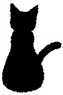
時間の感覚が狂っているので分からないが、骨海を歩き続けてかなりの時間が過ぎたと思われる。そして、持ってきた黒兎と黒葉の備えが全部切れてしまった。
......まぁ、こうやって何日も飲まず食わずで歩けるのだから、俺は確実に人間じゃない。やはり光魔と名がつくだけの種族だな。だけど......喉が乾き腹が減って、身体に重石が乗ったような気だるさを感じる。確認してみるか。足を止めて、
「ステータス」
状態：異常：血漿欠亡病 １５％ こんな表示が最後に出ていた。
だるいと思ったら病気かよ。状態の項目に異常と、バッドステータスがついてるし。
血漿欠亡病十五％とは何だ？ 血漿欠亡病にタッチして調べると、血漿欠亡病はミイラ化で、全能力値が半減とか......最終的にパーセントがマックスになると狂乱枯渇の精神暴走が強制的に意識を奪います。とか表示されていた。俺の感覚としては水が欲しいけど。身体は血を必要としているらしい。
そして、悪いことは続くのか、ロアに注意されていた背中に羽根を生やした怪物グランバと遭遇。いきなりその怪物から攻撃を受けた。急遽、〈脳脊魔速〉を使用し逃走を開始。骨海の空間をひたすら逃げ続ける。すると、暗闇が急に終わり、明るい光が目の前に現れて眩しくなった。それは光というより霧に近い？ 光る霧？ 濃度の濃い光霧。霧は重苦しい空気で俺の肺を満たす。
「なっ、ゴホッ」
思わず、むせかえるほどだった。その濃度が濃い霧の中を走る。少し苦しいが無視。
霧が濃い中を進んでいくと、突然、目の前に巨大建造物が現れた。思わず走るのを止め、霧の中に立つ巨大な建造物を見つめる。とてつもない巨大な円形の建造物。
中には水膜が張っていて、円形の縁には色々なマークと共に文字装飾が書かれてある。
「おぃおぃ、こりゃゲートか？」
ＳＦ映画にあったような物にそっくりだぞ？ 円形の縁回りには蛇が踊っているような文字が刻まれてある。『ザララープ――遠くと近き物』らしい。
簡単に読めた。エクストラスキルの翻訳即是のお陰らしい。特徴的な丸いシンボルマーク。白と黒が半々に描かれた陰陽の太極図のような円形マークが一番上に飾られた太陽のシンボルの形。何か意味があるのか？ そんなことを考えていると後方からブゥゥゥゥンッと羽の音が響いてきた。さっきのグランバだ。逃げる。自然と走り出していた。
あの音だけでトラウマになりそうだ。骨海のエリアを彷徨うようにがむしゃらに走り逃げ続けていくと、不思議な黒き彫像がある遺跡空間へ辿り着く。
台座がある黒き彫像は立派な獣だ。
もう逃げ切っただろうと、安心しながら見学でもしようかなと思っていたが、怪物グランバはここにも追い掛けてきた。そして、その追いかけてきた怪物が不思議なテレパシーで俺の意識へ直接語り掛けてきた瞬間――。
俺は背中に強い衝撃を受け前方へ吹き飛ばされた。黒き獣の彫像が置かれた巨大台座に頭から衝突し、大量の血が舞う。台座が血だらけで全身も痛い。頭からも出血したらしい。片目の視界が赤く染まる。え？ 橙色の台座に刻まれた壁画が動いている？
いや、蠢いているのは俺の返り血だ。壁画に付着した血が生き物のように蠢いて乾いた海綿のように血を吸い取っている？ 頭をぶつけたからこんな幻覚を？ その僅かな思考の間にも、俺の血を吸い込んだ壁画の一部が黒く変色。新たな血により上書きされていく。
最終的に彫像と同じ黒き獣の姿が壁画に現れていた。同時に台座の上にある黒き獣の彫像が光り出す。バチバチと黒い提灯火花のような物が虚空に幾つも散った。
硝子が罅割れるような大きな音を立てると罅割れた巨大魔法陣が一瞬現れ消えていく。
重そうな獣の彫像が揺れ動き纏っている黒炎が俺の血肉で赤く縁取られ、どす黒い色合いへ変化した。やはり出血のせいか夢でも見ているのか？ そんな不可思議な現象から視線を逸らし周りを見ていく。台座の下や周りに肉片が落ちていた。俺の肉片？
そこにズキリと背中、腹、足、から凄まじい痛みが遅れてやってくる。
『......人族の癖に随分と逃げ足が速い奴よの、だが、もうその傷だ。動けまい？』
あの怪物、また頭に直接話しかけてきやがる。
『お前を追うのに夢中になりすぎてしまった。ここは何かの古代神、旧神を祀る祭壇か？ まぁ、今は楽しみを優先しよう』
地面を這いつくばりながら怪物がいるだろう背後へ視線を向けた。羽根を持った真っ白い鎧の怪物の蛇のような長い四本腕は漆黒色に染まっているのが分かる。
その漆黒の中に紫色の小さい魔法陣が幾つも浮かんでいた。漆黒が紫魔法陣を強調させているようで不気味だ。怪物はその不気味な四本の黒腕を普通の四本腕に戻し自らの口へ俺の肉片を運ぶ。ぶるりと気持ち悪く震わせてから横へ広げた口蓋の中から太いミミズのような舌を伸ばし、その伸びた舌の先端が自動的に二つに裂かれて舌へ進化。
その二つの舌は生きた蛇のように蠢き肉片から溢れる血を器用に舐め合い啜っていた。
怪物は肉を舐めながら白眼で俺を睨んでくる。
『......うまい。しかし、その視線といい、まだ意識があるのか？』
髪の下から滴る血越しに怪物を窺うが、痛みがキツイ。それより逃げないと、〈脳脊魔速〉。〈脳脊魔速〉、え!? スキルが発動しない？ 〈脳脊魔速〉が発動しなかった。何回も、意識し発動させようとするが、思考に靄がかかったようにスキルが発動しない。
『フハハ、無駄、無駄ァ、お前、また逃げようとしたのだろう？』
クソがッ、〈脳脊魔速〉っ！ 何でだ？
『ム・ダ・だから。アハハハ、今度は逃がさないと、言ったではないか』
白き怪物が勝ち誇り嗤う。
『お前はわたしが知らぬ不思議なスキルを使うからねぇ？ 一部スキルの認識を阻害する、能力封じの特殊麻痺毒を仕込ませてもらったわ』
何だと、あの黒腕の先にある紫の爪か。
ステータス。
名前：シュウヤ・カガリ
年齢：２０
称号：異界の漂流者
種族：光魔セイヴァルト
戦闘職業：鎖使い
筋力１．８敏捷２．７体力１．８魔力３．８器用２．７精神３．９運１．７
状態：異常：血漿欠亡病９９％：高位侵食麻痺毒
スキルは発動しなかったが、ステータスは見れた。ハイ・バイオインベイジョン、これがスキル封じの原因か。そして血漿欠乏病が九十九に......結局、逃げに逃げてこれかよ。
ミイラ化よりも、今、殺されそうだ......異世界転生？ ヴァンパイアの選択？ 何がスキルだ。だが、そんな後悔の思考も激しい痛みに途切れてしまう――ガハァッ、吐血した。
額に張り付いた髪から伝う血で視界が赤く染まっていく。回復が遅れている？
血漿欠亡病のせいか。能力ダウンも関係している？ 血を吸っていないから、こんな麻痺毒の影響を受けたのか？ だとしたら、ひょっとして――本当に俺は死ぬのか？
必死に思考をしようとするが、また体に激痛が走り思考は途切れて口の中に血の臭いが充満してくる。やがて、血が喉の奥から溢れてきた。
「ぐぼぉっ、ぁ、血......いやだ」
鉄の臭いと鉄味が死を予感させる。いやだよ。こ、こんなところで死んでたまるかっ。
必死になって地下生活に順応したんだっ。あらがう、あらっがって、やる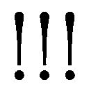
抗う、抗うぞぁぁぁっ！ しかし、痛みで、思考が書き消えていく。
痛い、痛い、痛い、痛い、痛い、痛い、痛い............嫌だ、嫌だ、嫌だ、嫌だ、いや、いや、い、やあ、――あああああああああァァァァァッ！
急激に世界が色褪せる――その瞬間、ドクンッと鼓動が高鳴る。
体が弓なりに跳ねて動きもがいた。沸き立つ血潮がオレの体躯を一気に駆け抜ける。
体の内部から血流が唸り心臓の跳ねる音が鳴り響く。
電気ショックを連続で食らった感覚が突き抜け......毒の影響か分からないが......一つ一つ体の自由が失われていく......恐怖、後悔、憤怒、苦痛、死、狂気。血の渇望。
最後には狂気と血の飢えがまざり合い思考の渦は極限に達した。
※血の暴走ガ開始サレマス※
※精神汚染加速※狂乱枯渇ガ始動※
※血ノ暴走デ強制上書キ※高位侵食麻痺毒解除※
※真祖の血脈※限定解除開始※
視界に赤く表示された情報、頭に響く音も背や腹の痛みによって消えていく。
※〈血の渇きの狂喜〉暴走スキル限定解放※
こみあげる血の欲求に喉ガ、焼けツク、理性ガ、俯瞰の位置に遠ざけられ、漂ウ――こ、りゃぁ、暴そ、うリィィァァァッ、ヒャハハハハハハ。
※〈真祖の血脈〉※一部限定解放※
※血道第一門※血道第二門※強制開門※血魔力限定解除※
※〈血魔力〉※限定解放※
※能力不足※解放出来ず※
※エクストラスキル連鎖確認※
※一部限定解除※〈血鎖の饗宴〉※スキル限定解放※
ノウにツギツギとヒビク、音。視覚にもジョウホウが表示されていく。
こ、れは、ココチ、イィィィィィッィィィ、フヒャヒャヒャァ、ハハハハハッ！
「ハハハハッ」
スキル解放、ヂ、チカラ、力ヲッ、カンジルゥゥ！
フッハハハ、グゥゥ――喉ガ、焼ケル。血、血、チ、チ、チィィ――。
口の中にタマッテ、タ、ミズカラの血ヲ飲ミ込ムィィィ。
――血ィィウィィ、ウ、ウメェェ、モット、モッ、モットダァッ！
血、血、旨い。モット欲しい。血ヲ吸ってスコシだけ理性をカンジる。
『おかしくなったのか？ 不思議な人族だ。さぁ、もっとお前の血肉を食わせろ』
チ肉を喰ラウ、だと......オレを補食する気か？
ヴァンパイアである、オレを？ フザケルナ......血が蠢き立つ。
「フザケルナ......」
黒い彫像を手で押さえながら立ち上がる。
『なんだ？ 急に立ち上がりおって、ぬおォ!? 魔素の質が変わるだと？ それに動いてる血は一体？』
怪物の声ガ、悲鳴ノヨウニ、頭ニ響ク。
「ゴチャゴチャとウルセェナなぁ？」
血ガ蠢き、オレの傷ツイタ身体の箇所カラ血ガ大量に溢れ出す。
そして、自分の血を飲み込んだおかげか、さっきよりも理性が戻ってきた。
しかし、血が欲しくて堪らない。顔ヲ隠すように左手を無造作に上ゲタ。
その瞬間、オレの身体中にある傷口から溢れ出ていた血ガ、無数の血鎖となる。
血鎖たちは周囲をぐるりと回りボール状の円形となった。オレを守るバリアのようだ。
白い怪物野郎からは、オレの姿が見えなくなっただろう。
『なっ!?』
白き怪物は驚きの思念を飛ばしてきた。そんな白き怪物の思念など意に介さず。
「オマエの血をいただく」
自然に出た言葉だ。オレの思考はもう血ガ食べられる。血ガ吸える。血ガ欲しい。で、埋め尽くされていた。思考の渦は血の大海で渦巻いている。あそこに大量の血がある。
そう思うと自然とニヤついてくる。顔に寄せていた左手を真っ直ぐと伸ばし、人差し指を怪物へ向けた――その瞬間〈血鎖の饗宴〉が発動された。周り全体を包んでいた血鎖が一斉に波を打ち唸り声をあげるように動きながら血鎖は大きな群れに成長。
一つ一つの血鎖が獲物を狙う蛇のように白い怪物へ向かう。
白い怪物は自身に迫る血鎖に恐怖を感じたのか必死な形相を浮かべ身体を反転させた。血鎖から逃げようとしてるらしい。そんな逃げようとしている白鎧野郎へ無数の血鎖が肉薄。血鎖が最初に貫いたのは怪物の足だった。
「ギャァ――」
「フハハッ、初めての声が悲鳴とはな」
怪物は足を貫かれ転倒し羽根をばたつかせる。地べたに這いつくばりながら四つの黒手を空中へ伸ばし自らに迫る血鎖に対抗しようとするが、無駄だ。
辺りに散らばるオレの血溜まりからも血鎖が形成された。
新しい血鎖も暴風と化した血の嵐に加わり、とぐろを巻くように怪物の背中へ血鎖の群れが回り込む。血鎖の群れは、怪物の半透明の羽根を喰うように貫きながら、怪物の背中を覆うと身体に巻き付いていく。白き鎧は朱色の血鎖によって埋め尽くされた状態だ。
アハハ。怪物を雁字搦めにしてやった。鎖の着ぐるみ状態ってか？
最終的に怪物の白い首筋と頭だけが表に現れ見えるだけになっていた。
『まっ、まてまてぇぇぇぇ』
白い怪物は焦ったように思念を飛ばしてくる。
「何を言っている？」
嗤いながら跳躍し、雁字搦めの怪物に近付く。オレは、その怪物の頭を両手で掴んだ。
両手の爪が怪物の頬肉に喰い込むほど力を入れ掴みあげる。怪物は壊れた人形のようにオレの指の力によりぶら下がった。いい気味だァと、オレはその怪物を見ながら口を広げると、血の飢えを感じると共に、自然と八重歯の先端が少し伸びるのを体感しながら、勢いよく怪物の首筋へ顔を埋めるように噛みついてやった。
一気に血を吸い。血を貪り尽くす――血ィィィ、うめぇぇ。
「ギャッァ」
※血が満たされました※血の暴走※狂乱枯渇解除※
※暴走スキル〈血の渇きの狂喜〉※解除※
※能力値及び限定解除したスキルは解消され元に戻ります※
脳に響くと共に視界に文字が羅列されていく。
※処女の血により※真祖の血脈※スキル解放。
※スキル解放に伴い〈真祖の血脈〉から〈真祖の力〉へと変化します※
※〈真祖の力〉により魔力が二段階引き上がり、各種スキルが融合されます※
※〈吸血〉※が〈吸魂〉※へと変化
※〈分泌吸の匂手〉※スキル獲得
※〈眷族の宗主〉※恒久スキル獲得
※〈血魔力〉※恒久スキル獲得
※エクストラスキル連鎖確認※
※エクストラスキル鎖の因子の派生スキル条件が満たされました※
※〈血鎖の饗宴〉※恒久スキル獲得
その瞬間――白い怪物から燐光が僅かに発生し俺に流れ込む。
血とは違う。一気に爽快な気分になった。
※魔素許容量限界突破により進化を行います※
※光魔セイヴァルトから光魔ルシヴァルへ種族進化※
※種族特性※強化※〈真祖の力〉へと恒久スキルが融合します※
怪物はみるみるうちにやつれていく。やがて全身が干からびて骨の表面に赤い血溜まりが僅かに残るだけの骸骨となると、骨と共に機械風の白鎧が地面に落ちていた。
その時――白い十字光が目の前を明るく照らす。不思議な白い光りは俺の左胸、鎖十字のマークから発せられていた。何故か、頭に鐘の音が鳴り響く――血だらけだった思考は正常に戻っていくのを実感。この死骸、この白い怪物が処女だったのか......目の前の骨をみてむせかえる。
「おぇっ」
いや、解っている。血が欲しくて......意識してやった。俺が力を欲し血を望んだんだ。
そして力を得た。種族進化と真祖の力。俺の中で何かが変わったことは確かだ。
血の餓えは収まったが精神の変質を感じる。心臓の音が耳に響く。音の捉え方が変わった？ 聴覚が鋭くなったのか静寂がより長く深くなった。
「だが、疲れた......」
血肉まみれの黒い獣彫像の前で、自然と瞼を閉じていた。
彷徨う意識――混濁とした意識の中――。
『素晴らしい......』
声が聞こえてくる。
『素晴らしい......人族であり闇の眷族である。魂に光の十字を刻む男よ』
ん？ 地響き......響く声。また頭に声が響く？
『ソナタの名前が知りたい』
その響く声に誘導されるように立ち上がる。声が聞こえた方へと視線を向けて見た。
そこは青空が広がり太陽が眩しい。緑豊かな知らない土地の光景が存在していた。
「何だ......ここは......」
周りを確認しながら前に進むと空間が蜃気楼のようにぼやけていく。怪物を倒して気を失った？ 洞窟......俺は古い遺跡のような場所にいたはずだ。ここは違う世界？
一歩ずつ不思議なところを歩いてゆく。一歩進む毎に、足元の地面から草や花が咲く。
花の香りが辺りを包んだ。花びらが歩く俺を祝福しているかのように不思議な色合いを魅せて輝かせる。紫と白が合わさったような色合いを見せたと思ったら、今度は真っ赤に変わり輝きを増す。
『こっちだ......』
また聞こえた。透き通る声......声の方向に向かうと動物たちの咆哮があちこちから聞こえ始めた。狼たちの遠吠えだろうか？ その咆哮は歩みを重ねる毎に大きくなり、また空間が揺らぐ。今度は目の前に断崖が出現した。向こう岸も見える。
その崖際に近付くとキュインキュインと音を鳴らす黒く光る玉が現れた。
その黒球に触ろうと手を伸ばす。しかし、黒球は意識があるように俺の手をするりと避けてしまった。たゆたう黒球は崖を渡り奥へ移動してしまう。
触りたかったのに、と思った瞬間、黒球が通り過ぎたところから淡く光る透明な植物のような橋が浮かび上がっていく。
光る植物の橋はあっという間に出来上がり、崖と崖を繋いでいた。
「この橋を渡れ？」
黒き玉は返事をするように『こっちだ......』と返してきた。しょうがない。
橋を渡ろうと、勇気を出してその幻想の橋に足をかけた。大丈夫だ。透明だが歩ける。
ただの橋だ。橋の表面が透明の蔦なので内部がよく見える。不思議だが橋の内部では光の流線が川のように流れていた。光が流れ星のように橋の中を通っている。
とても綺麗な幻想橋。そんな幻想の橋を歩いて崖を渡りきると黒き玉が消えてしまった。
また空間がぼやけ出して景色が変わっていく。淡い空が現れて景色が固定されたと思ったら、今度は雲が一面に広がっていた。真っ白い雲の上。空は青く太陽が燦々と照らす。
まさに天国？ そんな感想をもった直後、また目の前に黒き玉が現れた。
黒球は、ぐにゃりと変形して姿を現していく。最終的に黒き獣の姿で落ち着いた。
さっきの彫像か？ 似ている。黒き獣は彫像の見た目の姿より一回り小さい姿だがリアルな動物としての姿だった。黒い黒曜石のような艶やかな毛並み。毛が柔らかそうな黒豹や黒馬にも見えた。耳をピンと立たせ瞳は紅く輝かせている。猫のような瞳。大型の獅子にも見える。大きな鼻は縦に濃淡の黒ラインが綺麗に映えていて、その立派な獣口からは肉食獣のサーベルタイガーを想起させる鋭そうな牙を覗かせていた。口周りにある髭は猫科特有の立派な白髭。喉元の毛並みは段々とした黒毛がふっくらと広がり威厳を示す獅子の風格を感じさせた。胴体の方は艶やかな黒毛なので黒豹をイメージさせる。
しかし、この黒き獣はただの動物じゃない。一番に目立つ不思議で特徴的な物があった。
それは黒色の触手たち。黒き獣の首筋から生えた六本の長く太い触手。
触手たちはクネクネと個別に意識がある生き物のように宙を漂い伸び縮みを繰り返して動いている。胴体の上部には小さい翼のような物も生えていた。
不思議だ。その未知の不思議動物といえる、黒き獣の顔にある一対の紅い瞳がジロリと俺を捉え、
『よくきた。光と闇を併せ持つ男よ......名前は何という？』
と、頭に直接語りかけてきた。
「え～と、俺はシュウヤ、シュウヤ・カガリだ」
目が紅いな。紅だが黒の点のような瞳もある......。
『シュウヤよ、さきほどの戦い。素晴らしい闘争であったぞ！ 我は感じ見ていたのだ。久々に血がたぎった。ウォォォォォォン』
黒き獣は顔を上に伸ばし喉を震わせ吠えた。地響きで空気が振動し風が吹く。
獣特有の匂いと共に、俺の前髪が靡いた。驚いたが......さっきの戦いを見ていたのか？
『見ていたぞ。白き物とソナタ、シュウヤが戦う姿を』
「心が読める？ 筒抜けなのか......それで、ここ何処？」
「そうだ。何しろ、ここは我の精神世界だからな」
黒き獣は獣らしい大きな喉頭蓋を震わせるような重低音の地声に変わっていた。
「あぁ、なるほど、だから不思議な蜃気楼と透明な橋に、今は雲の上か」
俺の思考を読み取った黒き獣は笑うように口を広げる。
「......グルルゥ、流石だ。理解が早いな」
唸るように喉を震わせる。その唸り声に一瞬、強張りながらも、
「......それで、俺に一体何の用だ？」
「簡単だ。我と血の盟約を契って欲しい」
黒き獣は頭を垂れてきた。
「血の盟約？」
俺が聞くと、黒き獣は頭を上げて、紅い瞳でジッと見つめてくる。
暫しの沈黙が流れた。
「......血の盟約とは一定の条件で我と契約することを指す」
「ほぅ、一定の条件か」
「血の盟約が成ると、我は完全に結界を破ることが出来るのだ。我はシュウヤ、ソナタの使い魔やしもべとなり、体を得て外の世界へと出られることになる」
「俺の使い魔にしもべだって？ 家来や俺のペット？」
猫、犬のペット？
「僕。下僕や家来と同じだ。ペットという思考を読みとくと、そうだな。その通りだ。だが、我にも思考は存在し自由である」
自由か大きな口だが器用に話すもんだ。
「それで、その条件とは？」
「一つは、魂の一部共有による魔素の譲渡。二つは、条件を満たしている。三つは、我の希望だ。なにより一番難しいだろう。だから、これはどんなに時間が掛かってもいい」
魂の共有......？
「魂の一部共有と魔素の譲渡とは？」
「それは、二つ目の条件と関係がある。シュウヤ、ソナタの血肉が必要なのだ。闇の眷族の血肉が条件の一つ。だが、それはもう......この辺り一面に広がっているソナタの血肉で条件は満たしている。その血肉が我の新しい肉体に成るのだ......その際に一部シュウヤの魂と大量の魔素が我に流入される」
俺の血肉と魔素が黒き獣の新しい肉体になる訳か......。
「......俺の血肉がお前の体に成ると。その際に俺の魔素と魂の一部が流入するという訳か......何か哲学的な話だが俺の記憶がお前の力になるのか？ 結局は俺の精神力が削られるのか？」
黒き獣は一回頷いてから静かに答えた。
「そうだ。シュウヤの精神が我の糧に成ることは変わらん。だが、我が主と成るシュウヤの精神力の全てを奪うことではないぞ？」
確かに俺の精神力が無になり気付いたら廃人でした。では、シャレにならんな。
「そのような一方的な契約ではない」
「安心した......それで、最後の条件が難しいって？」
その瞬間、黒き獣の紅き双眸はどこか悲しげに変わる。
「......そうだ。最後の条件は秘宝や神遺物と言われる物を手に入れて欲しいのだ。我はその秘宝を取り込めば、言葉は無理と思うが......本来の姿だけは、取り戻せると考えている」
秘宝が必要なのか。
「秘宝がないと、どうなるんだ？」
「我は契約後、新たに生まれ変わる。知能も著しく落ち記憶もなくし、言葉も話せなくなる。感情のみ伝えられるが......姿形も小さく変わると予想できる」
姿も小さくなるのか。それを秘宝により真の姿を取り戻したいと。
「しかし、秘宝や神遺物なんて物が本当に存在するのか？」
「我はあると信じている」
「その宝物を見つけてお前に与えたら、今の姿とか記憶も取り戻すんだな」
「いや、無理だ。秘宝は得たとしても、我の今の記憶や言葉は取り戻すことは出来ないだろう。元々、契約をした時点で主の魔素と我が混ざり合わさる。それにより全てが変わるのだからな。しかし、秘宝の力があれば、シュウヤが今、見ている姿。真なる姿を取り戻すことは可能だと思っている」
記憶や言葉は無理か。それで幸せなのだろうか？
「良い。苦い記憶など新たに生まれでる我には必要ではない」
そういうもんなのかね。古い記憶は要らないと。
「......それでその秘宝の名前とかあるの？」
黒き獣は一対の紅き眼を輝かせ、
「秘宝の名は玄樹の光酒珠、知慧の方樹とも呼ばれる物らしい。本来の姿を取り戻した暁には、主であるシュウヤ。ソナタに我はもっと役に立つ存在となろう」
そういうが、根本的な疑問が残る。
「それを探せか？ 元のサイズに戻れるというが、そもそもお前は何者なの？」
「何者か？ それを、ソナタ、シュウヤが言うのか？ ひとまずこの映像を見るのだ」
その刹那、フラッシュバックのように何かの映像が再生された。
黒き獣がどこかの平原を走り見たことのない大鹿や動物を追い回し黒き獣が狩りをしている映像だった。これはこいつの黒き獣の過去の記憶か？
その瞬間、突然の――暗闇暗転。いきなり視界が戻ったと思ったら......目の前には巨大な黒き環が聳え立ち見知らぬ種族たちと魑魅魍魎な姿をした生物たちとの壮絶な戦いの現場だった。魑魅魍魎な生物たち......見た目は蜥蜴、蜘蛛、エイリアンが合わさった奇形生物。太い長方形の頭の先にある口に上下にある鋭そうな乱杭歯が幾つも生え揃い長い舌を伸ばし酸のような唾が滴り落ちている。図太い筋肉質の胴体から六本の腕が生えその手にはそれぞれ特徴ある武器が握られていた。下半身には巨大な胴体を支える太い鋼鉄柱のような蜘蛛脚が六本もあり忙しなく機敏に動き回っている。
そんな怪物たちと戦っている人型生物たちの姿はファンタジー映画、ゲーム、小説といった作品に出てくる種族たちの姿に似ていた。
俺が落とし穴に落ちる前に緑の怪物たちが占拠していた遺跡があったが、あの場所にあったレリーフに刻まれている状況に酷似している......頭に角を生やした種族。人間に似ているが頭に巻き羊角が生えている。色白で金髪の耳が長い種族。エルフだ。次は人間種族、人族だな。背の低い種族。こいつはドワーフ。大柄で全身が毛むくじゃらの種族。こいつは分からないがファンタジーなら居そうだ。獣の虎顔だが二本足で立つ種族。獣人。猫顔で腕が四本の獣人も居た。この種族もどっかで見たことがある。
多種多様な人々が戦っていた。映像は序盤から切り替わり黒き環から出てくる魑魅魍魎の怪物たちとの死闘の場面へ移り変わる。人型種族と黒き獣が合同で怪物たちと戦っている。それは怪物たちとの無限に続く......戦闘に次ぐ戦闘。最後に無数の生物や怪物たちに囲まれ苦しく悶える、黒き獣......そこで映像は止まった。
「今のは......」
「我が記憶の一部を見せたのだ。遥か昔、数万、数百万年前の事だ。我は元々、この世界の住人ではなかった。そなたに見せた記憶の通り元にいた世界では気ままに狩りをする生活をしていただけなのだ。そんなある時、いきなり暗闇に包まれた。我は気付くと黒き環の前に存在していたのだ」
そして、黒き環を壊そうとした話、角が生えた種族と絆があった話を聞く。
「......壮大すぎる話だ。黒き環に様々な種族たち」
長い歴史に少し感動するように答えていた。
「そうだ。我も記憶の一部を忘却してしまうくらいだからな」
でも、あの黒き環とは一体......。
「俺が見た時の黒き環は環の中に水膜のような物が張られていた。やはり転移門か移動やワープをする物という事なのか？」
ＳＦ映画に出てくるような代物とわかるが......。
「その通り。まさに転移門。巨大な人工ゲートだ。そんな黒き環を大魔術師たちが長期間調べていたが操作方法は解らず。ただ、中に入りどこかへ移動していた。その黒き環は一つではなく無数に存在し広い地上世界と地下世界があると。長き戦いが繰り広げられている黒き環もあれば平穏無事の黒き環も存在すると聞いた。我々はその一部に過ぎないと。他にも、無数に黒き環が存在すると教えられた。地上にある黒き環の一つはどこかの迷宮世界に固定された状態の巨大な物だそうだ」
無数に存在しそれを利用していたのか。結構な文明レベルと予想できる。
それと根本的な事を聞くか。
「今、封印されているおまえが、なぜこんな精神世界的な事が出来る？」
「長い年月と共に結界に綻びが生じたのだろう。だがシュウヤの闇の眷族としての血肉が封印の一部を破ったのは確かだ。それで我の思考がシュウヤに伝わった」
えっ、もしかしてと不安に掻き立てられた。
「俺の血肉。闇の眷族ということは、お前を封印した側にヴァンパイアのような魔族がいたのか？」
「そうだ。我の敵には闇の眷族たちも居た。魔族と呼ばれる者も居たな」
「それじゃ、お前は俺の敵でもあるのか？」
黒き獣は俺の不安な気持ちを察知したのか、髭を上げて優しく微笑むように語り出す。
「......そもそもシュウヤは完全な闇の一族なのか？ 違うであろう」
確かに光の授印により光魔が付く。光魔セイヴァルトから白き怪物を倒して、進化を果たした新種族の光魔ルシヴァルとなった。
「眷族の血が引き金になったのは確実だが、綻びがあったとしても敵対心が少しでもあれば同調せずこの封印が一部でも破られることはなかった筈だ。これは絶対だ。安心しろ。そして、今こうして話をしている事が、何よりの証拠。我の波長とシュウヤは合うのだ」
確かに、温かい素直な心が伝わる......。
「それもそうか。現にお前への憎しみなど持ち合わせていないしな」
「那由多の時が過ぎている。そして、シュウヤ。ソナタのような者が現れたのだ......」
黒き獣は黒猫のように優しい目付きで俺を見る。
「分かった。それで契約するとしてさ、お前の名前は？」
「我が最初に、ここの世界に来た時は怪物や魔物と呼ばれたな。次第に異界の神、異界の獣、黒き獣、時と共に名前は変わっていく。頭に角が生えた者たちは、我を神獣ローゼスと呼び親しげにしてくれた」
「異界の神や神獣ローゼスね......」
「名前はシュウヤが決めてくれ。我が主と成るのだから」
「そっか......」
瞳は紅いなぁ、レッドか。それに髭も大きいし、その横には触手がある。
黒毛も、モフモフしてそう......れっどもふもふ。
「シュッ、シュウヤ、ソナタの思考はこちらに伝わるぞ？」
「あはは、済まん。ちゃんと考えるよ」
ディープな紅い瞳。獣といえば北欧神話に出てくる。フェンリルとか有名だな。
それにあの大きい髭に触手はテンタクルウィンカース......。
「面白い、未知の言語にイメージが広がっていく」
「そういえば、雄なの雌なの？」
「雌だ」
「雌かぁ......」
なら、シンプルに。
「ロロディーヌ......とかどう？」
「ウォォォォォォォォン!! 気に入ったぞ」
「うあっ」
驚いた。急に目の前で雄叫び......地響きがした。
「シュウヤ。契約前に言うのも何だが......最後の条件である、神遺物と秘宝についてだが我はその秘宝について話しているのを聞いただけなのだ......だから、何処にあるのか、果たして本当にあるのかも分からない」
「それじゃ、何で条件に？」
黒き獣は優しく笑うように、
「希望だ......血の盟約は生まれ変わるのと同じ......昔、故郷で好きに走り狩りをしていた時代の夢を見ても構わんだろう？ それに、もう......元の世界には戻れないのだ」
なんか可哀想だな。生まれ変わるか。俺も転生だし同じだ。
「分かったよ。約束しよう。契約した際に知能が著しく落ちると言ってもさ、獣にまで落ちることはないんだろう？」
黒き獣は紅い瞳をきゅっと細くし、声音を強く話した。
「馬鹿にするでない。我をなんだと思うておる。契約後も姿なら少しだけ大きくすることも可能と思われる。それに思考は人族並みにはあるだろう......とは思う」
「ロロディーヌでさえ分からないの？」
「そうだ。何せ、初だからな」
「初って......なんか心配だ。失敗とかないよな？」
黒き獣は空を見るように一瞬視線を逸らした後、俺を見据えた。
「......いや、あるだろう。新たに転生するのと同じ。その時はその時......我は消えてなくなる。シュウヤには、ただの夢......幻の如くに感じるだけだ」
「そういうことか。そっちがそういう気概ならよし。血の盟約やってやろうじゃないか。それと約束もな」
その瞬間、黒い獣ロロディーヌは首元から六本生えた触手のうち二本の触手を俺の頬へ伸ばし触れさせてくる。ロロディーヌの優しい気持ちが伝わってきた。
『......いいのだな？ シュウヤの精神、魔素が大量に失われるぞ』
「あぁ、良い良い、大船に乗ったつもりでどんとこいや。受け止めてやろう」
黒き獣は紅き瞳をかっと見開き、口を開いた。契約の呪文のように言葉を紡ぐ。
「我は今日からロロディーヌ。我が主シュウヤよ、コンゴトモヨロシク」
どこかで聞いた台詞を吐くと、黒猫ロロディーヌは黒いラインが際立つ鼻を上へと向け、上空を見上げる。口を大きく広げると、
「ウオォォォォォォォォォォォン」
遠吠え的な咆哮が精神世界に響き渡った。
微かな風が吹き抜け、地響きと共に雲の精神空間は弾けて消えていく。
※血の盟約者※の称号を獲得。
※神獣契約により精神力を大量に失います※
※称号：※血の盟約者※異界の漂流者※が統合サレ変化します※
※称号：※神獣を従エシ者※の称号を獲得。
耳に音を感じ視界に文字が移る中......意識が......。
「お爺ちゃん、この人だあれ？」
「ん？ さあな？ 見た目は人族だが、魔族かも知れん」
「えぇ！ 連れてきてだいじょうぶなの？」
「大丈夫だろう。何しろ、神獣様を復活させた張本人だからな」
そんな耳慣れない言葉を聞きながら目を開けた。
知らない言語だが理解できる。
「おっ、目を開けおった。ラ・ケラーダ！ 目覚めたか」
その声の主を確認しようと寝台の端に手を置いて、徐に上半身を起こす。
「あっ、おきた～」
聞きなれない言葉の主たちへ顔を向ける。老人？ 頭に角を生やした老人だ。
その老人の隣には頭に小さい角を生やした女の子がいる。
女の子は俺に興味があるようだ。栗色の瞳は一点に集中している。
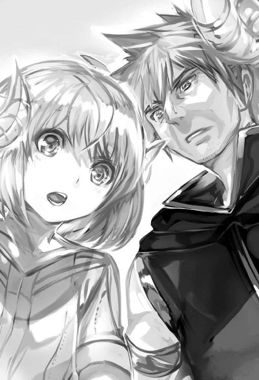
老人と子供。それにしても老人の角は立派だな。
子供の角とは違い頭の両サイドから山羊のように巻角の形が確りしていた。
頭に角が生えている種族、先端が尖った巻き角。
確りとしたディテールに骨密度の高そうなリアルな角だ。
栗色の髪に歳相応の白髪が混じっている。
彫りが深く瞳も栗色。皺も目立つが精悍な顔つき。
子供の髪も爺さんと同じく栗色。角は子供らしく小さい角。
幼いわりに整った顔立ちで可愛らしい少女だ。
楽な姿勢になろうと胡坐の体勢へ移行しながら二人からの視線を敢えて外した。
え？ 俺、裸じゃん。そういや何も着ていない。道理でスースーする筈だ。拾って身に付けていた装備品もない。天道虫の飾りが付いたネックレスが首に掛けてあるだけ。裸を見られていたわけか......でも、ここは何処だろう。確か白い怪物と戦って黒き獣と契約を......何故、ここに？ 辺りを見回していく。木窓から太陽の光が差し込んでいて、結構、明るい。部屋の塵埃がキラキラと銀色に反射していた。左隅には木製の棚が並ぶ。そこの一つの棚にはガラクタ類、汚い衣類に古い革服、蜜蝋にランプの油などが置かれてあった。右には外から明かりが漏れている布帳も見える。あそこが出入り口だな。ここは掘っ立て小屋か。木窓から差し込む一条の光。その光を見つめていると白昼夢を見るように怪物との戦いを思い出す。血を吸った記憶が甦る。それにあの白い鎧を着た怪物。
逃げて、逃げて......追い詰められて死を意識した戦い。そんな俺を不思議そうに見守る二人の視線......見つめてくる爺さんから猫を通り過ぎて女の子を見て――。
ん？ 猫？ 直ぐに視線を猫に戻した。黒猫だ。香箱座りで俺を見ている。
猫、耳がピンとして大きさは子猫サイズ。子猫だが存在感があった。
しかも、触手が生えているじゃないか。この紅い特徴的な目といい、もしかして......あの時に契約した黒き獣か？ 触手が六本じゃなく二本だけど。
俺が名前を付けたロロディーヌか？ 片眉を上げ不安気な表情を浮かべながら、
「ロロディーヌ？」
黒猫に語り掛けると、「にゃお」と可愛く鳴いて俺の懐に飛び込んでくる。胡座をかいた股上でくるりと回り小さい顔を上向かせて紅いつぶらな瞳で俺を見つめてきた。
かわいい。たまらん。黒猫のカワイイ視線に我慢できなかった。
黒猫の小さい頭を撫で柔らかい背中へ掌を通すと、そのお返しにゴロゴロと喉を鳴らしてくれる。更に首元から触手を――シュルッと小さい音を立て頬へ伸ばしてきた。
頬に優しく先端が触れてくる。肉球の感触だ。『嬉しい』『眠い』黒猫の気持ちが伝わってくる。契約時に気持ちは伝えることができると話していたけれど、こんな感じなのか......感動していると、その黒猫は胡座の太腿上で背筋を伸ばし小さい顎を膝の上に乗せてきた。そのまま目を瞑っている。ごろごろと喉の音も鳴らしてきた。
猫だ。猫だけど......契約した黒き獣。あの夢みたいな精神世界は幻ではなかったということだ。そして、今も胸に掛けてある骨世界で拾った天道虫のネックレスも本物。
地下でネックレスを拾った当時を思い出していると......様子を見守っていた老人が心配そうな顔付きを見せて尋ねてきた。
「......青年よ。大丈夫か？ それからお前さん、気を失っていた時、少々、体が臭かったから、レファと一緒に洗わせてもらったぞ」
恥ずかしいが、気を取り直すようにここが何処か尋ねることにする。
「......あのぅ、ここは？」
「ここはゴルディーバの里。マハハイム山脈の中腹にある山々に囲まれた高原地帯だ。わしの名前はアキレス。この子はレファ」
アキレスさんと隣にいる子供はレファ。そのレファが身を乗り出してきた。
「......わたしはレファだよ～お兄ちゃんの名前はなんていうの？」
この子は好奇心旺盛だな。興味しんしんって感じだ。
「俺はシュウヤ・カガリ」
「へんなの～ふたつなまえあるの～？」
「ほぉ、貴族か何かか？」
そんなたいそうな者じゃない。
「いえ、そういう訳じゃないです。シュウヤでもカガリでも好きなように呼んで下さい」
「では、シュウヤよ。いきなりだが何故あそこにいたのだ？」
そんな疑問と共にアキレスさんの目元が鋭くなってる。
あそこってあの遺跡みたいなとこか？ まぁ怪しいよな俺。
「アキレスさんは白い怪物との戦いを？」
「あぁ、はっきりとこの目で見たぞ」
アキレスさんは、指二つを自分の目に添えて芝居がかった仕草をしながら話している。
「おぬし、シュウヤが使徒を圧倒して倒すところをな？ その後もシュウヤが気を失い倒れて神獣様が復活を遂げる瞬間も、わしはこの目ではっきりと見た。だから倒れていたシュウヤをここまで運んだのだ」
助けてくれたのか。もしや俺がヴァンパイア系だとバレている？
「助けてくれてありがとうございます。確か、あそこは地下でしたよね」
日の光が見えている。ここは地上のはずだ。
「それは後で説明するとして、最初の質問に答えてはくれんのか？」
厳然とした態度となった。
「あっ、はい。え～とですね......」
少し緊張する。転生前のことを話しても分からないだろうし......。
口に出して上手く説明できない。あの暗闇の洞穴で出会ったドワーフのロアのように記憶喪失になったと適当に出まかせを話すしかないか......。
そうして転生してきたことは一切語らず、記憶の一部を喪失したという設定で、ちぐはぐに説明する。特殊なヴァンパイア系であることは話しておいた。
ぞんざいな説明にもアキレスさんは納得してくれたのか神妙な顔付きで頷く。
顎の先に指を添えて僅かに生えたちょび髭を弄っている。
何かを考えるように黙った。短い間を作った後。
「......記憶を殆ど忘れたのか。特殊なヴァンパイアハーフで光も平気なのか？」
アキレスさんの双眸は厳しい視線だ。
「はい......」
「ここに運ぶ時、光に当てても反応しないのはおかしいとは思ったんだが」
光に当てた......俺が普通のヴァンパイアだったら燃えて消滅していたかも......。
「すごいんだ、シュウヤ兄ちゃん使徒をやっつけたのね」
レファは小さい両手を胸に当て頻りに感心している様子を見せていた。
俺が血鎖を用いて倒した白い怪物は使徒と呼ばれているらしい。
地下のドワーフのロアはグランバと言っていたけど。
「使徒と呼んでいるのか？ あの白い奴」
「うん。そうだよぉ、お爺ちゃんが地下にいった時、ときどき倒してるって聞いたよ？ それで強いって」
「そうなんだ。アキレスさんは強いんですね」
「長く生きて、今は武装司祭をしてるからの」
「武装司祭？」
そう尋ねるとアキレスさんは自分の胸にぶら下げているネックレスの丸いメダルを手に取り見せてくれた。
「ローゼス神殿の管理する者をここでは武装司祭や司祭と呼ぶ。月に一回――コレを使ってな。広場の礼拝堂の中にある神具台を用いて地下深くにあるローゼス神殿へ向かうのだ。シュウヤが使徒を倒したところと言えば、分かりやすいか」
おぉ、神具台。しかも、その話通りだと今も使用できるニュアンスだ。
ロアの話と違うが、ここじゃ使えるらしい。
ということは怪物グランバから逃げた先が神殿......黒き彫像があった空間の背後が高台だったから、あそこに神具台でもあったのだろうか。
「......そうですか。あそこは神殿。だから俺は助かったと、ありがとう」
ここは地下と直接繋がっているのか。ロアの話だと神具台は地下に無数にあると言っていたのは覚えている。壊れずに残っていたんだな。あの地下ドワーフの世界じゃ、わざわざ地上に繋がる神具台を調べたりはしないか。
マグルとか呼んで人族を毛嫌いしてるようだし。
「......そうだな。だが、もう神殿は必要ないのかも知れん――ローゼス様はここにおられる」
アキレスさんの視線は膝で寝ている黒猫へ向いている。
「そういえば、あの時、ローゼスと、過去に呼ばれていたと語っていた......ような」
アキレスさんは俺の言葉を聞くと、眉間を中央に寄せて茶色の瞳を散大させた。
「神獣様が、シュウヤと語り合われたということか？」
「そうです。契約するのに色々と話しました。因みに、名前はもうローゼスじゃなく。ロロディーヌ」
「おぉ、ラ・ケラーダ......神獣様と契約とは......だから、あのような形で復活なされたのか。名前もローゼス様でなく、ロロディーヌ様に......」
アキレスさんは驚きから喜びの顔付きへ変化していた。神へ祈るように自分の胸に両手を置いて手印を作っている。この黒猫、ロロディーヌは神のような存在なのかな......。
だけど、アキレスさんの呟いてる、ラ・ケラーダとは、何だ？
スキルで翻訳されてない？ 何かの儀式言葉？ アキレスさんは胸にぶら下げているメダルへ目を向け目を瞑り、静かに......頷いていた。ラ・ケラーダの言葉を聞いてみよ。
「......すいません。ラ・ケラーダとは何ですか？」
「ゴルディーバに伝わる一種のまじない言葉だ。神獣様の加護をお祈りしたり、故郷を想う心や、感謝の意味もある言葉でもある」
へぇ、良い言葉。
「そんな意味が......良い言葉ですね。ありがとう。加護や感謝の言葉。ラ・ケラーダ！」
「そうだ。先祖の一人が使い出した言葉らしいが詳しくは知らん。そこでだ、シュウヤよ。これを受け取ってほしい。先祖代々からの言い伝えでな？ 神獣様が復活を遂げ神獣を遣わした者に、ラ・ケラーダと共にこのメダルを渡せ。と言い伝えがあるのだ」
アキレスさんは胸にぶらさげているメダルを取ると、俺の掌に握らせてきた。
「あっ、どうも、ありがとう。でもコレ、大事な物ですよね？ 俺が貰っていいんでしょうか......」
このメダルを使い、神具台を利用したと言っていた。大切な物のようだけど......。
「......そのメダルはお前が持つのだ。いつか役に立つときがくるかも知れん」
アキレスさんは厳しい目だ。ま、貰えるなら貰っとこう。首にかけておく。
これでネックレスが二つになった。
「ここで寝泊まりするがいい。後で家族を紹介しよう」
「ありがとうございます」
外が見たくなり革服を着て黒猫ロロディーヌと共に外へ出た。黒猫ロロディーヌは触手を上手く使いながら、壁を伝い小屋の藁葺き屋根へ飛び乗り屋根の上を楽しそうに走る。
黒猫は屋根の端で止まり頭を上げて、
「にぁぁぁん」
と、高い声を出していた。本人は狼やライオンのつもりなのだろうか？
姿は猫なので微笑ましい。そんな『ライオンキング』風な気分の黒猫にツッコミを入れたくなるが放っておいた。崖沿いを歩いて外の崖下を覗き見る。急勾配な坂道が延々と続く。
その下には森林地帯が広がっていた。遠方の山々や川が蛇道のように感じられ山間から覗ける平原が小さく豆粒で可愛い。そんな異世界の自然に圧倒された。
遠くの山々も写生大会を開きたくなるほどの美しさ。
切り立った青白い峰々がひしめき合うように聳え立ち、それが延々と連なっているんだからな......薄くたなびく雲に山脈の一部が掛かっている部分もある。
近くの山間は霧のような薄雲が滝の上部を覆っていた。
縦長の滝が、天に突き出ようとする巨大龍の姿に見えてくる。壮観な景色。
「自然は神の生きた服装である」と、そんな言葉を聞いたことがあるけど、こんな美しい世界なら八百万の神々じゃないけど、色んな神様が存在していてもおかしくはない。
古代文明を内包するファンタジー世界。ありとあらゆる可能性に満ちた世界。
他にも、俺と似た存在、もしくは地球から転生してきたという話がこの世界の何処かに、あるのかも知れない。
「どうだ？ ここがゴルディーバだ」
「景色が綺麗ですね」
「ふむ。夕暮れ時が一番だ。景色がいいぞ」
想像できるな、綺麗なんだろうなぁ。
「それは見てみたいです」
アキレスさんは優しく微笑を浮かべながら話し始めた。
「まぁ、それはここに居ればいつでも見れる。ところでシュウヤ、まだ目覚めたばかりで、こんな質問も何だが......今後はどうするつもりだ？」
そうだな......まずは強くなり、自由にまったりと世界を見て回りたい。
ロロとの約束を守り、あるならお約束の冒険者とかにもなりたいな。
この世界には塔やら地下迷宮とかもあるんだろうか？
そこに潜ってお宝をゲットもいい。美人な女と過ごすのもいい。他にも転生してきた奴も居るだろうし、出来たら会って話をしてみたい。目標は家持ちどころか、城持ち君主となって世界を征すとか。夢は果てしない......はは、冗談だが、よく考えたら欲張りだな。
「......何処かの街か、都市を目指しながら、旅をしようかと......」
あ、まだ、ちゃんとお礼を言っていなかった。
「旅か......」
短く呟くアキレスさんへ頭を下げて、
「アキレスさん、お礼がまだでした。助けて頂きまして本当にありがとうございます。手持ちのお金少しありますから、それか何か手伝いをして――」
「――金なんて、いらん。その、何だ、他に何か覚えてることはないのか？」
アキレスさんは慌てて話を遮った。そのまま、何か言いたそうにロロディーヌを見つめている。ロロディーヌの件、やっぱ気になるのかな、ここじゃ神獣様だっけか。
あの約束のことも一応、話しておこう。
「......あります。ロロディーヌとの約束が......それを果たすために手掛かりを探そうかと思っているんです。玄樹の光酒珠。別名、知慧の方樹。この二つの単語、聞いたことありますか？」
「神獣様との約束か。玄樹の光酒珠......う～む。どっかで聞いたことのある言葉だ。確か、お伽噺の話にあったような......だが、どんな話だったかは忘れてしまった。色々な神様が出てきた筈だが......樹や光酒というからには木や光が関係するのだろうか？」
ロロディーヌも精神世界で話していた、本当にあるか分からないと......。
「......そうかも知れません。今後はそれを第一の目的にして探そうかと。黒猫との約束。あなた方には神獣ですね」
「ふむふむ。それで、第一以外の目的は何だ？」
この際だ。願望を話してしまおう。
「世界を見て回り、迷宮や不思議な遺跡でお宝を見つけ、美人な女と酒を飲んだり、その女とやることやったりと、後、もっと強くなって冒険して家を持ち、国を持ち、拠点を作る。とか、色々な願望がありますね」
アキレスさんは少し呆れるように笑った後、「そういうことか......」と小さく言葉を呟く。続けてアキレスさんは、笑顔を交えて照れ臭そうに話し出した。
「その神獣様のことも含めてだが、シュウヤよ。記憶を忘れ、ヴァンパイア系能力だけでは、これからも色々と大変だろう。それに現時点では、ここが何処かも知らないし、行き場所などないのだろう？」
偉そうに目標を語ったけど、確かにその通り。
「はい」
「そこでだ。暫く、ここでロロディーヌ様と一緒に暮らしてみないか？」
おぉ、ありがたい、ありがたいけど、良いのだろうか。
「......いいんですか？ 俺としてはありがたいです」
「あぁ、勿論だ。だが、最低限の仕事はしてもらうがな？」
やった。この異世界のことなんて何にも分からないし、これで一息つける。
「はい。頑張りますよ」
「よし。寝床はシュウヤが寝ていた小屋を使うといい。あそこは狭いが生活用品がある程度揃っている。夜には家族を紹介しよう」
「あの小屋を利用して大丈夫なんですか？」
「大丈夫だ。普段は誰も使っていない客用で倉庫だ。それじゃ、さっそくだが、今、軽い木材が不足しているから夜までに集めるぞ。後は綺麗な山水を運ぶ仕事もある。ようするに荷物運びだな。手伝って貰うぞ」
「はい」
ロロディーヌも話を聞いていたらしく、俺の肩へ向けて跳躍。二つの触手を俺の腕に絡めて、器用に使いながら可愛く右肩に乗ってきた。手伝う気かな？
「崖下から梯子を使う」
薪と水汲みは急勾配になっている下から運ぶらしい。
アキレスさんは大きな桶を四つ、運ぶ、ん？ 浮かぶ？
「えっ!? これは......浮いている？」
目の前には大きい桶がぷかぷか浮いていた。
「これは違うぞ？ 導魔術で持っているだけだ」
「導魔術......それは一体？」
凄く興味がある。超能力の一種だと思うが。
「魔技の一つだ、わしは導魔術を専門としている。魔技とは『魔闘術』『導魔術』『仙魔術』の事を指すのだ。導魔術が得意なわしは、こんな風に物を浮かせて運ばせる。なんてことは簡単に出来る」
魔技だって？ 魔法、やはり超能力！ 凄い、ジェ○イの騎士みたいじゃないか。
アキレスさんは、ひょっとして、マスターヨー○ですか？
冗談はさておき、魔技といえば、魔闘術とか最初にエクストラスキルを選択する際にそんな名前があったのを覚えているけど......。
「他にも、その魔法、魔技をマスターしている人はいるんですか？」
「ん～魔技と魔法とは違うんだがな？ 魔技を極めるとなると、否だな。と、いうよりわしが見てないだけだが......まぁ世界は広いから分からんよ。わしが見て来た範囲だと、魔闘術の使い手は無数に存在する。だが、導魔と仙魔の使い手となると、そうはおるまい。因みにわしの亡くなった父も導魔が得意だった」
極めている人はいないのか。それ程に奥が深い技術なのかな......習えるだろうか。
「......その、魔技を習いたいです」
「いいぞ。だが、明日から少しずつだ。雑用が溜まっている。さ、まずは薪割りからだ」
「はいっ」
あっさりＯＫしてくれた。手伝いをがんばらなきゃ......。
最後の作業はドラム缶のような木樽を運ぶ力仕事だった。最後の樽を運び終えると、
「そろそろ食事にしよう。シュウヤの分もラビが作って用意してある」
「ありがとうございます」
「そんな畏まらんでいい。これからは一緒に食事をすることになるんだからな？ ついてこい。家族に紹介する」
「はい」
夕食に招かれたので、ついていく。
玄関である大きめの木製戸を右に開くと、左手前の壁に大きい竈があり水瓶やら油やらが入った多数の瓶が並ぶ。床は三和土工法で作られたような硬い土床だ。
天井には大きな梁が伸びて母屋に吊るされた干し野菜が幾つもぶら下がっていた。
古民家的な雰囲気の台所から芋を蒸かしたような甘い香りが漂ってくる。
竈の上にある沸騰して揺れている木の蓋さえも美味しそうに見えてきた。
出来立てほやほやの良い匂いだ。久しぶりだなぁこの感覚。
食欲をそそる匂いが充満している。料理はもう出来ているようだ。
ゴクッと喉を鳴らす。腹が減ってるんでたまらないよ。
そんな良い匂いがする台所を通り居間に案内される。
居間に無垢の背丈の小さい四角い机があり、子供も含めて三人の角生えた人たちがその机を囲んで座っていた。机の上には食事が並べられてあるので俺を待っていたらしい。
失礼だけど料理に注目しちゃう......大きい骨付き肉、芋のような柔らかそうな根野菜、歯ごたえのありそうな茸、緑葉の野菜が絶妙なバランスで一つのお碗皿の中にスープとともに収められていた。黒猫の分もあるようだ。角生えた人たちが俺を見つめてくる。
「シュウヤ、突っ立ってないでそこに座れ」
「あ、はい」
視線が集まる中、アキレスさんに促されて遠慮がちに椅子に座った。
「では、紹介するぞ。目の前に座るのはラグレンだ。レファの父でありラビの夫である」
大柄で屈強、巨躯な男だ。頭には家族の中で一番大きい角が生えている。
茶色の髪に茶色の目。彫りが深く鼻筋も高い。肌は白人系。
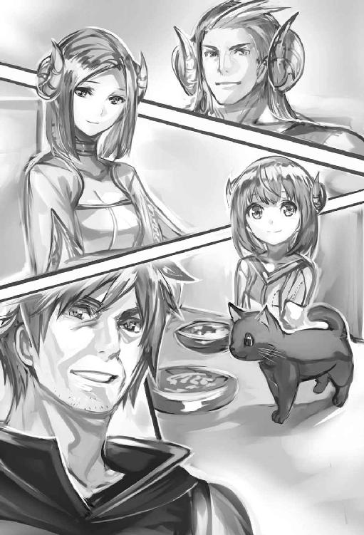
このマッチョな戦士さん、実はさっき見かけたんだよな。梯子があるところから、突然、巨体が現れた時は少し驚いた。狩りから帰ってきたばかりなのか背に赤い大斧を背負い、腰に子鹿や兎を三頭ほど結びつけている立派な姿は、狩人的というより、古典映画のファンタジー作品に出演していたシュワちゃん的な戦士姿にそっくりだったので、思わず凝視してしまい、その映画を思い出していたんだ。まぁ、所謂、マッチョマンだ。
その隣に座っていたのは夕食を作ってくれたレファの母。名はラビ。栗色の髪に瞳はやや黒み掛かった栗色。しなやかな撫で肩、大人の女って感じで色気がある。
顔は下膨れの瓜実顔。娘のレファに少し似ていた。そして、皆と同じように頭に特徴的な角が生えている。
「それで、この子がレファだ」
「よろしくね、お兄ちゃん」
お、お兄ちゃんか......そんなことより挨拶しなきゃな。
「よろしく。皆さんもよろしくお願いします」
「うむ」
「えぇ」
「シュウヤ、そう固くなるな。まずは食べようではないか、ラグレンにラビ、詳しくは食べてから、だからな？」
アキレスさんは家族である二人に含みを持たせて語る。家族へ目配せした視線を送ると、目の前にある木製のお碗皿に入っている白いスープを木製のスプーンで掬い、口へ運んで食べ始めていた。アキレスさんが食べ出すと、皆も遅れて食べていく。家長だからかな。
俺も白スープにスプーンを浸す。肉と茸が沢山入っているけど、まずはスープからと、木のスプーンで白スープを掬い、パクッと、そのスプーンごと頬張るように食べてみた。
最初の食感はとろり。少し遅れて舌の上でざらつくけど、仄かな甘さと山菜の香りが口の中に広がっていくので......食欲を助長した。美味しい。よく煮込んであって、ホワイトシチューに近い味わい。肉と茸からもたっぷりと汁が溢れてくる。皿の中にある具、ソースの一滴まで舐めつくすように黙々と具を口へ運ぶ。そして、舌と歯が踊りむしゃむしゃと咀嚼し胃へ通すと、その胃袋が歌い出す。うめぇ！ 食べる速度は次第に速くなった。
当たり前か。何しろまともに調理をした食事を口にしたのは何ヵ月ぶり？
だからな......地下生活の殆どが黒草に黒兎の肉。思い出すと泣けてくる。しかも一時期あんな生活に満足していた俺......ふぅ、温かい食事のおかげか、ほくほくと体が温まる。
その後、アキレスさんからゴルディーバに関する歴史や慣習などの一通り簡単な事を学んだ。明日から正式にアキレスさんの仕事を手伝う事になる。世話になるので頑張らないと、そんな思いで小屋に戻ろうと足を向けたとき、ラビさんから呼び止められた。
「シュウヤさん。前に着ていた服を洗いました。古いけどこれも使ってくださいね」
「あ、どうもすいません」
ラビさんから革服を貰った。お礼を言ってから小屋に戻る。
寝台で横になりながら、能力を確認。
名前：シュウヤ・カガリ
年齢：２０
称号：神獣を従エシ者
種族：光魔ルシヴァル
戦闘職業：鎖使い
筋力６．３敏捷８．０体力６．０魔力９．２器用６．３精神２．４運４．０
状態：平穏
称号は異界の漂流者と血の盟約者が併合して神獣を従エシ者に変わった。
精神力は激減してる......これがロロディーヌと契約した証拠か。
早速、称号をタッチ。
取得称号：神獣を従エシ者
※神獣を従エシ者※
※神獣が成長すると契約者に恩恵を齎し、全ての能力値に成長補正※
→？？？ ？？？をタッチしても表示されない。次は種族の光魔ルシヴァルをタッチ。
※光魔ルシヴァル※
※光魔ルシヴァルは魔族ヴァンパイア系の血の流れを持つ完全なる希少固有種族と成ります。同族はいません。見た目は人族ですが、光魔セイヴァルトから正当進化を果たした姿。もう種族進化はしない。光と闇の精神性に影響されやすい性質がある。全ての成長補正・大※
もう進化とやらはしないらしい。精神値以外の能力値がかなり上がっている。
これは長期間、地下で黒寿草と黒兎を食べていたから？ それか、白き怪物の魂を吸収したから？ 使徒とやらは、地下界隈に生息しているらしいが......疑問があるが覚えたスキルを確認だ。
スキルステータス
取得スキル：〈投擲〉：〈脳脊魔速〉：〈隠身〉：〈夜目〉：〈分泌吸の匂手〉：〈血鎖の饗宴〉
恒久スキル：〈真祖の力〉：〈天賦の魔才〉：〈光闇の奔流〉：〈吸魂〉：〈不死能力〉：〈暗者適合〉：〈血魔力〉：〈眷族の宗主〉
エクストラスキル：〈翻訳即是〉：〈光の授印〉：〈鎖の因子〉：〈脳魔脊髄革命〉
まずは吸血から、吸魂に変わったのをチェック。
※吸魂※
※血を吸った人族は精神値が低いほど自然に強催眠、強暗示効果がかかる。血を吸う度に微能力アップ。七日吸血なしだと能力微少ダウン。二十日吸血なしだと徐々にミイラ化が進行。血を吸い続けると魔素を吸収し、魂を吸い取ることも可能。相手が瀕死の場合は素早く魂を吸い取れる。魂を吸うと、自身の精神力が跳ね上がり、脳内を快晴に促す効果あり※
前は確か五日だったはず。これで一週間、血の補給はなしでも大丈夫。期間が延びても油断はせず、忘れずに血を補給しないとな。
次は、〈分泌吸の匂手〉の詳細。
※分泌吸の匂手※
※自分の周囲に微細粒子のフェロモンを発し、一定の範囲内の索敵を行う。フェロモンにより周囲に存在する生物や動く物を判別、匂いや血管の位置を把握し、僅かに姿形が判別できる。更には汗の匂いによっては、僅かに恐怖の感情を感じ取れる場合もある。
これを使えばヴァンパイアに意思を示し、人族、モンスターなどを遠くから判別できるようになるだろう。魔力消費は無し、索敵範囲は半径百メートル以上あり※
こりゃ便利、気配察知スキル。もう一つは〈血鎖の饗宴〉だな。タッチ。
※血鎖の饗宴※
※エクストラスキル〈鎖の因子〉と恒久スキル〈血魔力〉の第二関門がリンクし特殊派生。エクストラスキル系特殊派生破甲スキル。血鎖を創出させる。破壊力に特化。大量に出血すれば血鎖の量が増え破壊力が上がる※
これを覚えて使えるのは大きい。白い怪物を倒した時、限定的に使えたスキル。でも、傷はすぐに回復するから強敵じゃないと意味はないか。傷なんて痛くて受けたくないので、そう考えると微妙かも......恒久スキルだが、〈血魔力〉を新しく覚えた。第一関門を開くという事しか分からないので、血魔力をタッチ。
※血魔力※
※第一関門を開き、ヴァンパイア独自の血魔法を扱う※
説明もこれだけだった。第一関門とはなんだ？ ヴァンパイア独自の血魔法？ 感覚で血魔力があると分かるが全てを理解出来ている訳じゃないから困る。
タッチをしても何にも説明がでない。スキルによって自然と分かるときと分からない場合があるようだ。そもそも魔法も分からないしなぁ。この血魔力は普通の魔法ではないと思うんだけど。これは後回しだな。
最後は〈眷族の宗主〉という恒久スキル。
※眷族の宗主※
※宗主の血を人型知的生物に与えることにより真祖の系譜を持つ宗主眷族の直系ヴァンパイア〈筆頭従者長〉を生み出す。〈筆頭従者長〉といえど、宗主は絶対的な神を超える存在だ。眷族の宗主たる貴方は独自に〈従者〉の一部を弄れるようになるだろう。〈筆頭従者長〉となる人間型生物は自意識を保ち、今まで取得してきた経験とスキルを継承した状態で、宗主の血によってヴァンパイア化する。ヴァンパイア化した〈従者〉は、宗主の血魔力の一部を受け継ぎ、身体能力、魔法能力が跳ね上がるだけでなく〈従者〉特有のスキルを得られるであろう。ただし、直系眷族化に宗主自身の血が大量に必要だ。最初の一人が宗主の血魔力を最も受け継ぐ。最大三人のみの条件※
忠実なヴァンパイアを誕生させるとは......改めて考えると、すごいなこれ。
〈筆頭従者長〉かぁ、でも、たった三人だけだと、選ぶ時に考えそうだ。できれば綺麗な女性がいい。それで互いに納得した状態で〈従者〉にしたい。難しいと思うけど、目標は大きくする。将来、冒険者や君主とかになった時、まぁ君主、国持ちは冗談として血を吸う生き物な俺には絶対に裏切らない部下は必要だ。でもこのスキルを使うのは当分先になりそうだな。そして、〈真祖の血脈〉から変わっている〈真祖の力〉をタッチ。
※真祖の力※
※吸血神ルグナドが産み出した始祖を超える真祖の力。身体能力、魔法能力、腸超吸収、魅了の魔眼、が融合。身体と魔法能力が飛躍的に向上し、如何なる〈精神波〉〈状態異常〉系の攻撃にも耐えられるようになる。更に、消化吸収が異常に速く、魔素吸収率、魔力回復速度も倍加する。巨大魔素を内包するモノを食することによる〈称号〉が得られる可能性もあり。特異な腸内細菌により如何なる毒素も栄養吸収。貴方本人が何もせずとも周囲一帯の闇属性を持つ知的生物や負の感情を持つ者に好感を抱かせることもある。
友好的な闇属者と契約した際に生じる魔力譲渡によって畏怖の念を契約者に抱かせ、同時に精神力が低い相手の場合だと支配下チェックを受けさせることになり、支配下チェックに落ちれば自然と支配下となるだろう。全ての能力値に成長補正・中※
〈真祖の力〉はとんでもないスキルだ。精神波や状態異常に耐えられるようになったらしい。スキルが融合した結果だから能力値が跳ね上がっていたのかな。
それに支配下チェックだって？ 友好的な闇属性の生物に魔力を与えれば支配下に置ける可能性があるとか。〈眷族の宗主〉の〈従者〉との違いが分からないが、似たような感じなのだろうか？ 能力を見てあれやこれと想像を繰り返していると、次第に瞼が重くなり目を自然と瞑っていた。
次の日、外の朝景色を見ようかと広場近くまで歩いていく。
その広場で黒槍を振り回し訓練を行っているアキレスさんがいた。
黒槍を動かす度に、びゅんびゅんと微かな風切り音が鳴る。
「――おっ？ 早いの」
「アキレスさんも早いですね」
「わしの日課だ。最近は【修練道】に行かず、こうやって夜明け前に槍術の訓練をするのがな――フンッ！」
アキレスさんは長い金属棒である黒槍を振り回す。穂先で突く動きを繰り返していた。
「シュウヤも訓練をやるか？ そこに棒や槍があるぞ」
アキレスさんに促されるように視線の先を見た。そこには黒鉄棒と黒鉄槍が何本も立て掛けてある。槍かぁ。挑戦してみよう。
「それじゃ、初めてだけど、俺も」
立て掛けてある黒槍を手に取り適当に構えては突いたり、振り回す――。
アキレスさんの動きを真似して、黒槍を動かしていく。
「ほぅ、やはりヴァンパイア系と言ったところか、身体能力が並みじゃない。重いタンザ鋼の槍を、そうも軽々と振りまわすとは」
「これ重い金属なんですか？」
疑問を投げかけながら黒槍を振り回し、何回も突いたりする。
軽く感じるのは俺の身体能力強化のお陰か。
「重いぞ？ 重いがその分、普通の槍よりは頑丈だ。刃と金属棒が一体となってるしな？ だが、切れ味は今一つといったところだが......」
アキレスさんは槍の穂先をこっちへ向けて、そう話している。
「確かに......」
穂先は尖ってはいるが平べったい印象だ。金属棒の先端が削られて槍になっていた。
普通、槍の穂先は刃と棒が別だからな。柄の部分を見ても刃を接合した跡はない。
黒槍の穂先から握り手へ視線を移す。そのまま片手で黒槍を持ち上げて左右へ振り回し両腕を突き出して黒槍を動かしていった。
「う～む、速度はそれで十分だが、それだと、ただ、突いてるだけだ」
「何か足りないのですか？」
「そうだ。まずは、わしの腰から槍先に移る動きをよ～く、見とくのだ」
アキレスさんは、わざと分かりやすく、突きの動作をゆっくりと動かし実演してくれた。若干、腰が沈む――動作から始まる。それは一見......何気ない動作だが、その中に確かな熟練の技が存在した。大地を踏みしめた足先から力を伝えるように下半身を捻り腰へ力が伝う。力の流れは丹田の正中線を通り、肩から腕へ、槍を握る手先へ確かに力は伝搬していた。黒槍は捻られ風切り音を出し前方へ突出。確かに全然違う。
意識した体の動きに、槍を捻っているのか。
「突きには捻りが大事なのだ。槍系統の基本だな」
「......捻り、分かりました」
こうして、アキレスさんが最初に槍を打つ動作を行い、俺がその動きの真似をしていく――何回も何回も繰り返す。体全体に捻りを意識した動きが浸透してくると、槍の突きが変わるのが解ってきた。アキレスさんの所作を少しずつだが確実にモノにしていく。時が経つのを忘れるぐらい、集中して訓練をしていると、感覚が解ってきた――。
※槍使いの条件が満たされました※
※〈刺突〉※スキル獲得※
「おっ、槍使いになったらしい。スキル〈刺突〉も覚えた」
と、報告したら、アキレスさんは槍の動きを途中で止めて、俺の顔を凝視してくる。
「――何ぃ？ この数時間でか？ それもスキルと同時だと？ 一を十に変えるとはな、才能と運があれば僅かな訓練でスキルや戦闘職業を得られると聞いたことがあるが......まさか、目の前で見ることになるとは......」
珍しいようだ。
「それほどに珍しいのですか？」
「珍しい。シュウヤは稀有な才能、何かしらの、先天的なスキルを持っているな？」
「えぇ、まぁ......」
恒久スキルの〈天賦の魔才〉で戦闘職業を覚えやすいとかあったな......。
「それならば納得できる。わしの動きを真似、僅かな練習で自己昇華を果たしたと」
「そうですね。真似て感覚を掴んだ感じでしょうか？」
「素晴らしい......クラスアップも比較的早く来るだろう。風槍流の免許皆伝どころか、烈級、王級を容易く超えてくるかもな」
クラスアップに風槍流？ 一応、クラスアップの詳細を聞いておくか。
「クラスアップ？ なんですそれ」
アキレスさんは疑問の言葉を聞いて僅かに眉を動かす。
「それも忘れたのか？」
と、しょうがないといった感じに説明を始めていた。
「クラスアップとは様々な経験や能力を得て自分自身が成長を遂げた時に、新たに変わり得られる戦闘職業の事を指す。槍使いだと、次は槍舞士か槍戦士の辺りだろう。因みに今述べた戦闘職業の名前は個人によって微妙に変わってくる場合がある。ようするに強くなれば変わっていくということだ」
戦闘職業の名前は個人によって変わる時があるのか。
「やっぱり他にもあるんですか？ 戦闘職業」
アキレスさんは勿論といった感じに手元にある黒槍をくるっと回し、硬い石面へ黒槍の石突きを差し置いてから、
「あるぞ？ 剣、斧、短剣、二剣系などの様々な武器や魔法を覚えることでも変わってくる。戦闘職業は膨大な数があり無限に存在しているのでは？ とか言われているな」
「無限とは凄い！」
「そうだ。魔法関係の職もある上に種族によっても戦闘職業の名前は微妙に変わる。様々な要因によって同じ人族でも職の名前が違っていたりするからな。わしも知らない職は多い。これは職の神レフォト様の祝福らしいが詳しいことは分からん」
転生の時に少し見たが職の神か。
「神さまか......無限とは奥が深いですね」
戦闘職業を実際に覚えた感覚だと関係があると想像がつく。この世界の一部だろうし。
「あぁ、確かにな。成長を感じられる指針にもなる。この世の常は、偉大な神々の恩恵を知らずにも受けていたりするものだ」
神か、アキレスさんのような年配者が語ると妙に納得できる。
「それと、お前さんが覚えたスキルの〈刺突〉だが、スキルを覚えるとは、才能と運があるということだ。戦闘職業がクラスアップしても、スキルを覚えられない者も存在する。シュウヤのように職業を得ると同時に取得する場合もあり、自身の成長や遺伝の関係で突如覚えたりする場合もある。経験の積み重ねや教えを受けて初めて意味が分かるスキルもある。その辺りは千差万別で個人差がでるのだ」
その言葉を聞きながら、握っている黒槍の穂先を見つめていく。
「なるほど。俺が〈刺突〉を覚えた時、不思議な感覚でした。練習した動きがさらに昇華して体に身に付き、前から覚えていたような感覚......」
そのまま流れるように黒槍から自分の腕を見た。
「それはシュウヤ本人でないと解らない感覚だろう。スキルを得てすぐ解ることもあればスキルを取得してもそれがどんなモノか解らない場合もある。特殊な訓練によってスキルの意味がやっと解り出す。そんな場合もあるのだ」
確かに、俺自身......スキルを取得しても意味の解らないのもある。
「分かりました。でも、この〈刺突〉、突くだけの地味な感じですね」
そう喋ると、アキレスさんの表情が少し厳しく変わる。真剣な目付きだ。
「確かに地味だが、基本中の基本でもあり偉大な槍技の一つだ。槍の世界にこういう言葉がある。『〈刺突〉に始まり〈刺突〉で終わる』そのぐらい奥が深いのだぞ？ まぁ最初は意味がわからんだろうが......」
例えば、ボクサー的に左ジャブを征すれば世界を征すみたいな......感じ？
「〈刺突〉で終わる......覚えておきます」
朝日を浴びるように両手を広げていると、
「しまった！ 家畜の餌やるの忘れていたっ、シュウヤが余りにも武術の吸収が速いから教えるのに没頭してしまったわい......朝食が遅れるが、手伝ってくれるか？」
「はい」
崖下に向かい、ポポブムという魔獣と家畜たちの餌やりを手伝った。
次の日も同じように朝方訓練をする。
「覚えるのが速い。もう焔式はマスターしたようだ。さて、次の――この動きはどうかな？」
笑顔を浮かべたアキレスさんは朝霧の中、宙を舞うように躍動。
急に跳躍したと思ったら槍の穂先を地面に叩きつけていた。その叩きつけた黒槍の反動を利用して宙へ黒槍を浮かべたその黒槍を、逆手に掴み取る。
そこから急にゆったりとした動きに変わり真円に黒槍の金属棒をぐるりと回しながら右手へ黒槍を握った右腕と上半身を斜め前方へ伸ばし長らく身体を固定していた。
これ、何かの型かな？ ヨガポーズのように暫く体の動きを止めている。
型の動きが、槍と身体が一体化したかのように感じられ、余計に身体が長く見えてきた。そして、突然にアキレスさんは空を舞うように跳躍を繰り返す。静から動へ霧を溶かすように黒槍を振り回し穂先を目まぐるしく回転させていた。
黒い穂先に水滴が沢山付着していく。水分を飛ばし空気をも霧散させる勢いだ。
暫くするとアキレスさんの周りの霧が消えていた。凄まじい技量とだけ分かる。俺もその動きについて行こうとするが途中の体を一回転させる動きに、たたらを踏んでしまう。
「――おっと、すまん、流石に今のは高度すぎたか」
失敗したけど、おもしれぇ。
「はい。追いかけ必死に真似をしています。でも、身に付いているのは実感しているので、凄い面白いです」
俺の言葉に、アキレスさんは白歯を見せる。
「うむうむ。何事も楽しめるのは才能だ。さて、そろそろ時間だ。家畜の世話も楽しもうか？」
「......それも楽しむんですか？」
「あぁ、藁の交換はあまり楽しめないが、楽しい物もあるぞ？ ルンガなんてな一日、一日、餌の食べ具合が変わる。それにより肉質や乳の出具合も変わるし、味も変わってくるのだ」
可愛いねルンガ。味が変わるのは少し気が引けるけど。
「何事も楽しむってことですね。毎日が勉強だ」
その日も俺とアキレスさんは家畜の世話を開始した。
ポポブムの寝床にある古い藁を持ち運び、掃除を行ってから真新しい干し藁と交換。他にもルンガ牛や他の家畜の餌作りを行い、餌やりをやっていく。
その後、案内された場所は不思議な明るい炉がある鍛冶＆錬金部屋だった。
そこで司祭としてではなく各地を旅してきたことや、この不思議な古代の技術で作られた炉について教えてもらった。その旅について俺が更に聞くと、アキレスさんは何かを思い出すように目を瞑り、こくりと頷いて話した。
「そこでだシュウヤ。冒険者になるのならここで暫く暮らすついでに、わしから風槍流の槍と独自の武術を本格的に学んでいかないか？」
武術に風槍流か。こないだ見せてくれた奴だよな。強くなれるなら学びたい。
「こないだの魔技とは別にですか？」
「うむ。ロー、いや、ロロディーヌ様の光酒珠を手に入れるためにも、シュウヤの為にもなる筈だ。今後、人族たちと暮らしていくのに、ヴァンパイアハーフだけの力ではいらぬ誤解を生むかもしれんぞ？ それに、わしはもう司祭として神獣様の彫像を守ることはない。だから少しでも神獣様のロロディーヌ様とシュウヤの役に立ちたいのだ」
アキレスさんは必死だ。
「俺でも立派な武術が使えるようになりますかね？」
少し、躊躇うように話す。
「何をいうか。今朝の槍捌きを見たからこそだ。シュウヤは槍武具を扱う才能がある。天命とわしは思ったのだ。おぬしでなければ、こんなことはいわんぞ？ それに、わしが弟子を取るからには、責任を持ち卒業と思うまで確りと、武を教え込むつもりだ」
アキレスさん、何か神妙な面持ちだ。この際だ。色々とお世話になっちまうか。
決めたっ！ するっていうと俺は弟子か。アキレスさんは師匠になる。
「分かりました。貴方のような方から武術を学べるなんて光栄です。これからも是非。お願いします――」
頭を下げて精一杯、慇懃めいたお辞儀をする。師匠、中国語でシーフー。
カンフー映画を思い出す。胸前に両腕を出し片方の拳の上に添えるように反対の掌を乗せて頭を少し下げる仕草。これ少し憧れてたんだよね。
「......そうか、うむ。良かった良かった」
頭を上げて見たら......何故か、師匠は目に涙を溜めている。
アキレス師匠はゴルディーバの武装司祭として先祖代々、神獣の彫像を守り続けてきたんだもんな。ある種の信仰として......何か心にくるもんがあったんだろうと勝手に推察。
尊敬の意思を込めて......。
「アキレスさん......これからは師匠と呼ばせてもらいますよ」
師匠はそう呼ばれると、意外だといわんばかりに目を広げて驚いていた。
「ぬっ、わしがそうなるのか？」
「はい。これから色々と教えてもらうんです。アキレスさんは師匠ですよ。師匠、宜しくお願いします」
アキレス師匠は俺を見据える。
「昨日、魔技も習いたいと話してたな。良いだろう」
師匠は納得したように頷いている。どこか嬉しそうだ。魔技か。俺も使いたい。
「......魔技」
あの超能力、オーラ、念、フォース的な魔法。凄いわくわくする。
「そうだ。教えるとしておぬしは......魔技どころか魔力に魔法も勿論、なんのことかさっぱりってところか？」
「はい。魔力、魔法も魔技も全く......」
アキレスさんは師匠らしく腕を軽く組む。
「まずは、そのだだ漏れの魔力をどうにかしないとな。基本から行くぞ。幾ら才能があっても魔技の習得までは数ヵ月掛かる。それから先は、一生涯掛かると思えよ？」
「生涯......」
アキレスさんから師匠の威厳を感じた。今まで見せたことのない表情を作っている。
「解ったか？」
師匠は眉間に皺を寄せて目付きが鋭い。語尾を強めての言葉だ。
よし、俺も、気持ちを込めて気合いを入れる。
「はい！」
俺の気合声に、師匠は昂然と胸を張り、
「その意気や良し！ 早速やるか。まずは魔力の確認からだ。そこで足を組んで楽な姿勢になれ。心を解放するのだ」
意気盛んの声質に誘われるように床へ座り軽く胡座を組む。
「目を瞑り、深呼吸。心を穏やかに、身の内側を見るように沈むのだ......」
リラックスしろってことか？
「......」
静かに息を吐く。言われた通りリラックスを目指す。
脳からα波を出すように目を瞑り集中。禅を実践し瞑想にふける。
「身体の中心を見つめ......集中するのだ」
師匠は俺の集中を邪魔しないように、静かな口調で優しく語りかけてくる。
「精神の礎――心の深きところ心の襞に目を向けるのだ。そこに何かがある筈だ」
まるで催眠術をかけるように話を添えてきた。
心の襞か......深呼吸をしながら、その心の襞を感じようと丹田を意識。
精神を研ぎ澄ませ集中。心に魔力――ん？ 今、水？ ぱっと水気が溢れて浮かんできた。心の奥底、腹の底に海？ とは違う。水の表面が周りに勢い良く広がっていくような......得体の知れない感覚に思わず「......おっ」と、小さく声を漏らす。
「――何か掴んだか？ それがシュウヤ。おぬしの魔力の源であるのだ。この時、思い浮かんだ感覚が自分の属性である事が多い――」
師匠の言葉を耳にしながらも意識の内部で起こる変化に驚きと焦りを覚えていた。
これが魔力なんだろうか？ その水の表面により強い意識を向ける。
意識を向けた途端、水の表面に水滴が落ち水面に波紋が広がっていくのが解った。
水面に広がる波の感覚を逃がすまいと眉間に力を入れて、丹田の奥へ広がる感覚を追いかけていく。更にその水の表面の感覚を引き上げた――。
「おぉ......これが魔力！ すると俺は水属性？」
......水とはな。ガキの頃の記憶がそうさせた？
「にしてもこの感覚は凄い――」
「ふむ......水か」
アキレス師匠は頷き静かに呟く。一方、俺は興奮していた。体にもう一つの器官があるような感じ......この世界ではこれが当たり前なんだろうが感動だ......興奮が覚めずに自然と笑い顔を浮かべてしまう。
そこから魔力操作、生活魔法、魔闘術を師匠から学んだ。
更に、日が経ち、今日は【修練道】で修行をするらしくゴルディーバの里がある崖上から梯子を何回か伝い下りて、少し離れたところにある広い森林地帯の中に案内された。
「ここは、古より若きゴルディーバたちが切磋琢磨し己の武術を磨き訓練を行ってきた場所でもある」
「色々な器具がありますね......」
周りを見回すと......不自然に倒れた丸太が小道を作るように森の各地に設置されていた。宙に浮かぶ鎖やロープに繋がっている丸太も多数見える。
ロープで宙に吊るされた丸太の先端には、鉤爪が無数に付いた物もあり、人を象った木人には古い血濡れた痕もあった。
「......それは丸太を使ったバランス訓練に使う風薙ぎ。こっちは身を躱し、攻撃に移る訓練を行う爪磨ぎ。こっちは高度な訓練用の器具で、尖らせた杭刃を装着させた木人が何体も迫ってくる追連獄だ」
今言われた器具の他にも特殊な訓練器具とみられる代物は幾つもあった。
大きな水瓶らしき物が階段を挟んで上下に一つずつ置かれた訓練場まである。端には高さ三十メートルはある垂直な崖もあった。溝が掘られてあるので懸垂の訓練かな。
【修練道】とは少林寺での訓練場みたいだ。
「わしも若い頃はここでよく訓練をしたものだ」
「さっきも言ってましたけど、昔からある訓練場ですか」
「そうだ。遥か古代からあるらしい、わしが子供の頃からお世話になった場所だ。シュウヤもここで槍の訓練をやってもらうぞ。まずは初歩からだ。シュウヤならすぐに慣れてしまうだろうが、まぁやってみろ」
「はいっ」
風薙ぎから訓練は行われた。丸太の両端を二本のロープで吊るされた揺れる丸太の上に立たされる。ランダムに丸太が揺らされる中、横に設置されてある革紐で縛った木人をバランスを崩さずに、その木人の指定場所を黒槍で攻撃するという訓練だった。
「揺らすぞ」
「はい」
師匠は丸太を揺らす。訓練が開始された。
「もっと、素早く突け、そうだっ。前を歩け、歩幅に注意しろっ。もっと機敏にっ、速度を維持しろ！」
「ハイッ」
三十分程行ったが、バランスを崩すことなく上手く行うことができた。
※〈平衡感覚〉※恒久スキル獲得。
あっという間に、恒久スキルの平衡感覚をゲット。
「シュウヤは規格外だ。すぐに適応しおった。爪磨ぎにも挑戦してみるか？」
わくわくする、どんなのだろう。
「......それはどんな訓練です？」
「目隠しをしながら丸太を歩き、揺れて迫る鉤爪付き丸太攻撃を躱しながら標的を感じて、その標的に攻撃を当てるという奴だ」
目隠して訓練......うへぇ、まじか。
「......目隠しですか？」
「そうだ。不安か？」
笑顔だが笑顔でない師匠。あなたは鬼コーチですか？ 言わずに普通に話す。
「いえ、やってみます」
目を皮布で隠され、訓練を行う。
「――ぐえっ」
いてぇぇ、いきなり失敗。丸太とはいえ、当たればものすごい衝撃がくる。
足場の丸太から見事に転落していた。
「流石に、初見では対応できないな。視覚がなくなるのは恐怖だろう？」
怖いけどイメージすればなんとか出来そうな気がする。後は、まぁ遮二無二の精神で。
「そうですね。でも、痛みはすぐに引きますから、何回も挑戦してれば上手くこなせると思います」
「その意気だ。続けてみろ。間合いを感じ回転避けの極意を得るのだ」
「――ハイッ」
何回も何回も鉤爪の丸太にぶつかり落ちてしまう。しかし、やればやるほど慣れていった。音、歩幅、足裏回転の軸をどこにするか、迫る鉤爪の間合い、黒槍の射程を掴むと、丸太の鉤爪を避けられるようになってくる。イメージと先見が一体。そして、咄嗟に爪先足回転を行い、鉤爪を避けてからの追撃が初めて成功した。
※〈軽技〉※恒久スキル獲得
※軽技槍士の条件を満たしました※
※〈槍使い〉は〈軽技〉により〈軽技槍士〉へとクラスアップ※
おぉぉ、スキルを得て、戦闘職業がクラスアップしたよ。
「多少時間はかかったが、それが爪先半回転だ。回避歩法の一つ。まだまだ回転速度も歩幅も甘いが初日でこれなら十分だろう。次の訓練に移る。ついてこい」
ついていくと、端の崖が上に重なる岩場だった。その岩場で魔力操作しながら崖を上る訓練を行う。何とか魔力操作を意識しながら登り下りを終わらせた。。
「......これから数日間、こういった訓練を行っていくつもりだ。今日は風薙ぎから爪磨ぎに崖登りの三つをセットで繰り返しでやるぞ」
「はいっ」
訓練は一週間続く。途中から天秤翔、回転殺、追連獄といった高度な訓練器具を使う訓練へと移行したが、その追連獄の訓練は死闘を極める結果になった。二百回目ぐらいだろうか......失敗を重ねていたが、擦り傷を負いながらギリギリで成功。その瞬間――。
※エクストラスキル※脳魔脊髄革命の派生スキル条件が満たされました※
※脳魔軽運動※恒久スキル獲得※
※〈平衡感覚〉と〈軽技〉と〈脳魔軽運動〉が融合します※
※超脳魔軽・感覚※恒久スキル獲得
連鎖的にスキルを取得し融合。この特別なスキルを得てからは余裕で全部の訓練をミスなく行えるようになった。これは優れたスキルと実感できる。
運動性能が飛躍的にアップ。身体能力系の訓練では効果を発揮し続けた。
師匠は呆れていたけど、気にしないで、ひたすら訓練のメニューをこなしていった。
......俺はこうした修練を雨の日も風の日も欠かさず続け、一年、一陽来復の兆しが見え始めた頃までこなすこととなった。【修練道】で回避の基礎が身につき爪先を軸とした回避術を完璧にマスターした。今日も特別な訓練がある。
一年の集大成。俺自身成長すると共に色々な経験をしたなぁ。
ぼうっと、呆けて――この一年の思い出が溢れてくる。
魔力操作、生活魔法、魔闘術、目に魔力を留める魔察眼、苦労したが導魔術のオリジナル〈導想魔手〉の開発に成功し魔力の歪な手を動かせるようになった。
〈導想魔手〉という名の七本指と大きな歪な掌。手、腕の中には小さい魔力の帯が無数に重なり合って出来ている。更に、師匠と遠出を行い火を焚いてキャンプを行った場で、掌握察という自身の魔力を円状に放出し周囲にある魔素を探知するという導魔術最大の重要技術、索敵に使う技も教わった。槍の流派についても教わる。
主に技巧派の風槍流、力技派の豪槍流、伝統派の王槍流の三大流派があると。
一般的に強さを表す級もあり、初級、中級、上級、免許皆伝。更に上の烈槍級、王槍級、神槍級。剣も似たように技巧派の飛剣流、力技派の絶剣流、伝統派の王剣流の三大流派が存在した。級も槍と全く同じだ。
因みに、師匠は風槍流の神槍、剣は飛剣流の王剣止まりと言っていた。
そして、昔に【鉱山都市タンダール】にある武神寺へ通い、風槍流と飛剣流の武術を学びつつ過ごしたこともあるらしい。その後、研鑽を重ねて当時の神槍級者である神槍アキュレイに勝負を挑まれ、勝利を収めたとか。タンダールの都市に行く機会があったら立ち寄ってみるのも面白いかもしれない。そんな機会は永遠にないかもしれないが。
それから家畜のルンガ牛を追い回して投げ縄で捕まえたっけ......。
薬草を磨り潰した液体を牛の体に塗りまくったこともあったなぁ。
採取の時はレファを緑葉が集まった化物から助けることが出来た。
その日の採取はそこで終了。早々とゴルディーバの里へ戻ることになったが......。
緑の化物から彼女を助けてあげて以来、レファは俺にべったりだ。
毎日のように朝早くから俺を起こしにくるし、遊ぼう遊ぼうと言い寄ってくる。
時には遊ぶだけじゃなく悩みの相談に乗ったりしてあげた。ある朝には......。
朝早くレファが来た。
「シュウヤ兄ちゃん。遊ぼっ」
といったように朝一にこれだ。
「内緒だよ？ ついてきて」
たまには付き合ってやるか。と、レファの後をついていく。
幾つかの梯子を降りて要害となっている山間を進んでついた場所......。
そこは見晴らしのいい天然の遊具がある場所だった。
遊具とは八十～百メートルぐらいのゆるい傾斜が続く天然の滑り台。
水が勢い良く流れ下が深い滝壺となっている。こんな場所をよく見つけるもんだ。
話を聞くに、レファはラグレンやアキレス爺の隙を見て里を抜け出して、色々な遊び場所で遊んでいるようだった。
「こ～やってね。ここをすべるの――」
レファは両腕を抱え小さい足を揃えると、水の勢いを利用し滑っていった。
滝壺に勢いよくドボンッと音を立てて落ちている。って、大丈夫か？
「――ぷはぁっ、シュウヤにいちゃ～ん、おいで～」
ほっ、レファは大丈夫のようだ。んじゃ、俺もやってみよ。
同じように滑り台を楽しむ。尻が心配だったが、杞憂だった。水で尻が滑る滑る。
ウォータースライダーってか？ 股間がゾワッと、ぎゅんってした。
足が竦んで玉がぎゅんぎゅ～んっと。ぎゅい～んって――すげぇぇ、楽しいかも。
そうして、滝壺に突っ込んだ。
「あはは、すごい水が跳ねたよ～」
「――はは、そりゃごめんな。しかし、これ楽しいな？」
「うんッ」
「でも、こんな場所だと、モンスターの危険もあるだろうに......」
「うん、じつは、さるのようなモンスターにあったの。でもねでもね、わたし、にげ足速いの、平気だよ。いつもにげきってるし、さるたちは変なのを投げてくるだけ」
それを聞いて少し怒る。
「危険すぎる」
「えぇっ、シュウヤ兄ちゃんまで、そういうこというんだ......」
「そりゃそうだ。だが、約束は守ってやる。今後は気をつけるんだぞ」
「うんっ、本当に、おとうさんには、シ～だよ？」
レファは小さい口に指を当てて内緒にしてねをアピール。その後は、何回も念を押されて密かな約束をまた交わしてしまった。そして、密かに俺と師匠との訓練の様子を覗いては真似をしているとか聞かされた。他にも父さんのラグレンの狩りの様子をつけていたりとか......結構、あぶないことをしていた。注意しておいたが、自分の棒術を試したくてしょうがないらしい。「つよくなりたい」と、真剣な面持ちで話してくる様子に、この子の将来が少し不安になった。ラグレンも苦労しそうだなと、内心同情する。
他には、野生ポポブムを捕まえたり乗りこなすのにも苦労した。でも、苦労したお陰で〈魔獣操作〉というスキルを獲得することが出来た。皆で、狩りと樵を行った際は黒猫が、本当の神獣のように黒豹の姿に変身。
そして、首元から伸ばした触手骨剣で獲物をばったばったと突き刺し倒していた。更に、大牙狼という狼モンスターと頬と頬を親しげに触れ合わせて、大牙狼のお尻の臭いを嗅ぎ、大牙狼も遅れて黒猫のお尻の臭いを嗅ぐという獣独自のコミュニケーションの方法は面白かったな。それから......あれは幽邃な深山の山肌に朽葉が目立つ頃だ。
今でもあの出来事は鮮明に覚えている。
師匠に指示され採取とモンスター狩りの修行を終えてキャンプした時だ......。
寒さと涼しさが混合した秋の季節を実感するように、秋風が頬を掠めていく。
日が陰ったから、大木の根本でキャンプを行った。
次第に焚火の勢いが衰え、暗闇の世界に......暗闇が深くなるにつれ寒さを強く感じるようになった。地下を彷徨っていた頃を思い出す。しかし、頭を振って思考を切り替える。
スキルである〈夜目〉はワザと使わない。ある程度の明るさがあるからな。と、夜空を仰ぎ見ると、星々の中に月が二つ浮かんでいた。明るい。砕けた月の欠片も輝いて見える。
あの大月が砕けた瞬間、どんな映像が......この世界で見えていたのだろう。
凄い天体ショーだったに違いない。まぁ、それが今でなくてよかった。きっと潮汐力の異常で、この地上にも大変な異常気象を引き起こしていた可能性があるからな。
それとも、重力なんて関係なく魔素やらファンタジー要素で異常は無かったのかもしれないが......あの二つの月にも神様の名前がついていたし......と、目を瞑る。
瞼の裏にも皓々とした月明かりが感じられた。
うつらうつらと、眠気が来た。そろそろ、寝よう......ん？ 冷たい空気？ それとも、糠雨か？ 水気のような冷たい空気を浴びて目を覚ます。
まだ薄暗い。月明かりを頼りに下にあった窪地を見た。ええ？ 水だ......窪地が湖になっている!? これは夢か？ しかも、半径二百メートル以上はあるぞ。
そんな湖の畔から足を浸けてみる。冷たいが心地よい。頬を叩く。痛い。夢じゃない。すると、更に夢らしい現象がおきた。
月明かりを照らす小さい湖から人型の生物が現れたのだ。
人型は水の上を歩いて、近付いてくる。うは、女？ しかも、裸だ......裸、だけど、女の肌は淡い蒼色の葉で出来ていた。蒼い葉だが、美しい。
湖の水で濡れた部分は銀色に輝いて見える。髪も蒼、より濃い水の蒼だった。
サラサラの髪は腰まで波うち、頭に水滴のマークのような形の髪飾りもある。
その髪飾りは長い蒼髪に自然な形で編み込まれていた。
絹のような蒼髪が湖を渡る夜風に当たりそよぐので、俺は自然と視線が髪と顔へ集中していた。彼女は湖面の上で立ち止まり銀色に見える唇を動かしていく。
「......ふふ、あなたの身体に水を感じたわ」
彼女の声は透き通っている。月光が湖を反射している中、彼女は一歩、また踏み出した。
「な、なんだ？」
自然と凝視していた。彼女の体はまるで、絵師が心を込めて描いた美しい天使、妖精に見える。絵から生を得て一秒間に六十コマの動く滑らかさを超える情報が俺の目を通り煩悩を刺激した。その美しさを見逃すまいと、一フレーム、二フレームと目に焼き付けていく。ゴク、思わず唾を飲み込む――麗しい。
「わたしはあなたの水になる......」
女がそう話して、近付いてくる。顔は若々しく、人間ではないと分かるが......構わなかった。ずっと、見ていたくなる......ぷるるっんとした双丘が揺れているのが分かる。
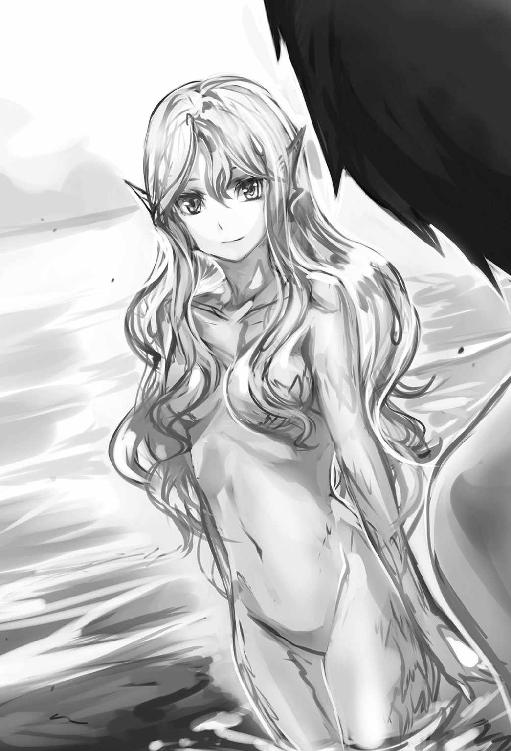
いつの間にか、その妖精のような彼女に抱き締められていた。
「貴女はいったい......」
「わたしは、しがない外れ精霊。名は水の妖精ヘルメ。一年に一回、この季節一日だけ命を得ることのできる。この湖の精霊です」
透き通る声は、俺の心に染み入るようだった。
「そうなんだ」
俺はそう発言しながら、自然と抱き締める両手に力を入れてその女精霊の胸に頭を押し付けていた。ぱふぱふ。これは、ぱふぱふではないかっ。こんな場所で、王道ＲＰＧの至福を味わうとは......柔らかく冷んやりとした気持ちいい感触だ。
ふっくらマシュマロの先っぽにはボタンのような粒蕾が二つ。
た、たまらん。ここに、おっぱい研究会を発足する。
「あんっ、そんなに力を入れたら痛いです......」
「ごめん」
「ふふ、でも、嬉しいです。こっちにいらして......」
手を握られた。水、湖の中に連れていかれて......次の日、気付いたら、湖畔の縁で素っ裸になった状態だった――あちゃぁぁ、やっちまった。訓練一筋で過ごしていたせいか......溜まりに溜まった欲望を激しく発散してしまった。精霊相手に......。
「服は......」
あったあった。衣服や荷物はキャンプをした側に置いたまま。直ぐに衣服を整える。
お尻がムズムズするのは何でだろう。裸だったから虫にでも刺されたかな？
荷物を確認したが、何にも変わったことはなかった。窪地にできた湖を改めて見る。
鳥の囀りが聞こえ森の音が木霊していた。落ち葉が風で舞い、水面に幾つも枯れ葉が浮かぶ。その落ち葉が湖を彩る絵具にも見えてくる。湖の女精霊、蒼くて綺麗だったなぁ。
でも、一日限定の命か......。
「なんか切ないね」
......光の反射かな。少し湖が光った気がする......綺麗な湖は、俺の言葉に返事はなし。ただの窪地にある小さな湖にしか見えなかった。さて、と俺は踵を返した......。
この初秋における一日だけの綺麗な湖での経験は、普段、本当に欲望を発散せずに壮絶な訓練ばかりの生活が続いていたせいだと思いたい......と頭を軽く振る。
そこで、部屋に転がる見栄えの悪いヘンテコな椅子を見た。十把一絡。木工細工で椅子やら机だけじゃなく将棋みたいな駒やらを作らされたっけ......狩りでは植物採取の際に出くわした赤味熊での戦いで苦戦しながらも倒すことが出来た。
他にも子精霊と遭遇したり、座学で歴史と思潮を学びゴルディーバの哲学に依拠し、武の心を学ぶ。
そうした数々の狩り、生活、師匠との模擬戦のお陰で槍武術は格段に進歩したが、その都度、斬られ、突かれ、殴られ、蹴られの――。
「――思い出すと、武者震いが......」
その激しい訓練で槍舞士から槍武奏という戦闘職業へ変化を遂げた。これはあまりない職らしくアキレス師匠も知らなかった。その時に師匠から戦闘職業名を聞く。
武槍剣風師とかいう職名だった。槍士系と剣士系を修めていき魔技使いと風属性が統合された結果、自然とこういう名前に成ったんだ。と自慢気に説明してくれた。
そのアキレス師匠さえ知らない職。槍武奏。
まぁ槍の熟練者ってことで納得したのを覚えている。
その直後に〈槍組手〉っていう恒久スキルも得た。これは槍と身体を使った近々距離に於ける格闘術に近い。独自の近接格闘術だが、ＣＱＣに似た動きで槍を封じられたと想定した場合も組み込まれていた。格ゲーやら、カンフー映画、総合格闘技、ＵＦＣを見るのが好きだった俺にピタリと嵌る。師匠がいうに風槍流にも風槍組手があるが、俺が覚えたのは少し違うらしい。槍武術と合わせた槍組手にアレンジを加えた動きを繰り出すので師匠が驚いていた。そして、最近になって師匠アキレス曰く。槍だけならもうわしと同等かそれ以上だろうと言われた。風槍流・神槍級の師匠に褒められたんだ。
御世辞でも、これは嬉しかったなぁ......。
「さてっ！」
最終試験とやらをこなしてやろう。気合いを入れて目に活力を宿す。
あれやこれや思い巡らすのを止めて黒槍を持ち小屋を出た。
槍武術の稽古場である広場へ向かう。最近は【修練道】に降りていない。
訓練はもう模擬戦しか行っていないからだ。
アキレス師匠はいつもの広場で、黒槍を振り回し、四剣の慣らし運転を行っていた。
「シュウヤ遅かったな。早速やるか。何度も話すが、今回はおぬしの技の全てを出して、わしを殺す気で挑んで来い。わしも全てを使い対応する」
師匠は一気に剣呑な空気を作り出すと、にこやかな余裕顔を浮かべている。
よ～し。今日は普段使っていなかった。アレを使うか。
殺す気まではいかないが精一杯やりますよと、
「......了解。んじゃ、ナイフを止めて、頼んで師匠に作って貰った新品のククリ剣を使うとしよう」
負けじと余裕顔で答えてから、黒槍を正眼に構え〈導想魔手〉を発動。
〈導想魔手〉でククリの両刃剣を腰から引き抜き宙に漂わせたククリ剣で斬り上げ斬り落としの動きをさせる。
黒槍を持つ右腕の手首で∞を書くように上下に縦回転させていく。
黒槍の金属棒がしなり音が鳴る。アクション映画でよく見られる棒術の一つだ。
ここからはオリジナルだが――持ち手の金属棒を掌から指先へ移し、その指先を凹ませてペンでも弄り遊ぶかのように手甲側へ黒槍を滑らせる。そのまま手甲から手首の上へぐるぐる回る金属棒を上らせるように移動させた。
そのタイミングで、腕に力を込め総指伸筋を上に押し出す形の反動で、黒槍タンザを宙へ跳ね上げる。すぐに左手で、その跳ねた黒槍を掴んだ。そして、体勢を整え直しながら黒槍を握った左腕を前方へ伸ばし突き払いの型を繰り返す。最後に、黒槍の穂先を師匠へ向けて、どっしりと重心を下げながら正眼に黒槍を構えた。
その演武の間にも宙に浮かぶククリ剣は、俺の衛星のように周りをぐるぐると周り続けている。アキレス師匠はその動きを見て笑みを浮かべていた。
「槍だけは本当にもう、わしを超え達人の域をも超えとるな。だが――」
フェイクか。いきなり突貫してきた。同時に周りを回る四本剣も付いてくる。
師匠のあの構えは〈刺突〉と見せかけた軽い牽制の突き。
魔察眼で師匠の動きを捉える最中、思考が加速していく。
アキレス師匠の体から発している導魔術、光の枝や帯のような無数の魔線で繋がれ周りに漂う四本の剣を追う。どれも意識があるように動いていた。あの剣は本当に厄介だ。
師匠の扱う黒槍の下に一本、俺の後方へ回り奇襲して来そうなのが一本、師匠の左右に一本ずつ。合計、四本の小剣。その剣の影が散らつく。剣の使い手が実際にそこに存在するかのようだ。魔察眼で見ると師匠の導魔術である剣を操る光る帯が輝く翼に見える。
その光る帯が俺の周囲を囲うように迫ってきた。圧迫感が物凄い。
こんな圧迫感に負けるかよ！ そう意気込み正面から突進。
攻撃してきた師匠の黒槍を穂先で跳ねるように弾く。師匠の黒槍を横上へ逸らすと同時に〈導想魔手〉に握らせたククリ剣を背中の防御へ回し、背中に目があるように後ろから迫った師匠の導魔術光る帯に操られた小剣の斬撃を空中で受け止める事に成功。
しかし、アキレス師匠が操る小剣三本が、前、左右から迫ってくる。
右だ――考えるよりも先に反応し動いていた。黒槍を斜めに回転させて右から迫る小剣を往なし弾く。即座に魔闘脚で右へ走り光の帯に操られた剣撃を避けた。だが、師匠は俺が右に走り避けるのを読んでいたかのように間合いを詰めながらの黒槍を横から薙ぎ払ってきた――唸りをあげた金属棒が横っ腹へと迫ってくる。
急遽、左手の〈鎖〉を射出。鎖を横っ腹に迫った黒槍へ直撃させて弾き、何とか防ぐことが出来た。師匠も俺の鎖の動きに驚きの表情を浮かべる。しかし、その表情も一瞬で終わった。師匠の目は冷静に俺を捉えている。視線を動かさず黒槍に刺さった鎖を強引に抜くと、その引き抜く動作を利用して爪先を軸に体を一回転。遠心力を生かした黒槍の返し払いを繰り出してきた。また薙ぎ払いが俺に迫る、そのゼロコンマ何秒かの間に閃いた。
その瞬時に閃いたイメージを実行へ移す。それは防ぐのではなく攻撃へ転じること。
宙に浮かぶ〈導想魔手〉に握られているククリ剣を頭部へ投げ付け、師匠の薙ぎ払い攻撃を無視する形で手に握る黒槍も師匠の胸元へ向けて突きを入れた。
師匠は咄嗟の投擲の剣から、俺の身を犠牲にしても構わないがむしゃらな槍の突きの連撃にも冷静に応対。自らの薙ぎ払い攻撃を止め片足で地面を蹴りつま先半回転と舞うように自身の体を、円軌道で回避行動を取る。俺の〈導想魔手〉から〈投擲〉されたククリ剣をあっさりと斜めに受け止めるように左へ流し弾くと、今度は反対の足を使い、軽く回転。流れるようにくるりと舞い避ける動きを繰り返し、胸元に迫った俺の槍突も難なく躱していた。それは筆で半円を描くような滑らかな脚捌き。
あんたはモハメド・アリかよと心の中で毒つく。まるで精密な機械人形が踊っているようにさえ感じられる。入れ代わり立ち代わりが忙しい。さっきから素早すぎるだろ。
その踊り避けている最中にも、裏で師匠は導魔術を動かしていたらしく弾いた剣を拾い終わっていた。チッ、俺はまだまだ視野が狭い。また四本の剣が宙に漂う状態に戻っていた。こうなったら――素早さには素早さだっ。アレを使う。
〈脳脊魔速〉を発動。瞬時に身体を加速させて師匠へ肉薄した。
師匠の動きを追い越すように黒槍の連撃を打ち出す。師匠は驚愕の表情を浮かべながらもその視線は俺が撃ち出す黒槍の動きを追っていた。
四本剣と自身の黒槍を使い、俺の連撃を防いでくる。五秒経過――四本剣の内、二本の小剣を弾き、師匠の肩や足に傷を負わせることに成功。
十秒経過――師匠は俺の速度に対応してきたのか四剣の内、一本のみ残って粘られる。
十五秒経過――一本だけ残っていた小剣を弾くことに成功。しかし、師匠は導魔術の光の帯ごと守勢に回したようで完全防御の姿勢となった。
二十秒経過――ちぃ、スキルが切れ速度が落ちる――師匠は当然。と言わんばかりに右円軌道の勢いを黒刃に乗せた薙ぎ払いを繰り出してきた。俺の脇腹を潰すような黒い金属棒が横一文字の如く迫る。だが、そう簡単には喰らわない。その師匠の薙ぎ払いの黒槍の穂先を歪な魔力の手で包み込むように掴む。薙ぎを防いだ。
へへ、やった。師匠の槍を封じた。
しかし、師匠は焦るどころかニヤッと笑みを浮かべ余裕顔だ。
「――ハハ、今さっきの連続突き、あの速度は流石にわしも驚いたぞ。それに今の時点で、その導魔を防御に回すほどの判断力と術の完成度。実に見事だ......鬼手。と言えよう。しかも、まだまだ発展できそうだなっ、だが！」
アキレス師匠は睨みを利かせながら喋ると槍から手を離す。
突如、姿が消え――いや跳躍か。しかも師匠の光の帯に操られた空中漂う剣たちが左右から飛んできた。今度はそっちが〈投擲〉かよ！
また何時の間に弾いた剣を、あっ、今話していた時か。
そんなことを思考しながら師匠の黒槍を掴み握っていた〈導想魔手〉を意識。
透明な魔力の手を左右に広げるように展開させ師匠の黒槍から離した。
目の前に迫る投擲されてきた剣を、その自由にした〈導想魔手〉で弾く、が、そのせいで反応が遅れてしまう。師匠は飛び蹴りをかましてきた。ダッダッと頭部、胴体と続けざまに二段蹴りを喰らい、鈍い音と共に頭が揺れ体勢を後ろに崩してしまう。
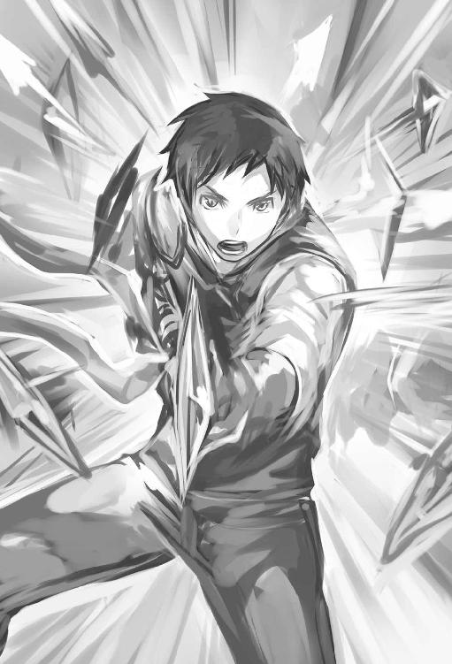
しかも師匠は、蹴り終わりの着地際での制動がない。コンマ何秒の間に導魔術を使い華麗にも落ちていた黒槍を拾い上げ自身の手に戻していた。その黒槍の穂先を流れるように俺へ向け最後の止めといった感じに前傾姿勢を維持した風を纏う凄まじい歩法を見せながら〈刺突〉を繰り出してきた。螺旋する黒槍刃が俺の鳩尾に吸い込まれる。
黒刃が折れるぐらいに、鈍い音を立てながら腹底へ沈み込んできた。
「ガァッ――」
俺は痛みに呻き声を出すが、師匠は黒槍を引き抜くと同時に、中段足刀蹴りを浴びせてきた。喰らった衝撃で腹に突き刺さった黒槍が抜ける。
その傷痕から血飛沫を飛ばしながら左後方へ吹き飛ばされていた。
痛みでコンマ何秒の間が長く感じる。頭にダメージを受けているので受け身も反応もできない。導想魔手も消えて黒槍も地面に落としていた。
「気を引くためにワザと話したが、あの鎖と導魔術のオリジナル。それに身体速度を上げる秘術は一瞬、冷やっとしたぞ？ しかし、その秘術は悪手とも成り得るな。連続使用は無理なのだろう？」
はは、ばれてーら。
「いてぇぇ、えぇ、その通りです」
「やはりそうか。しかし腹に刃がもろに入ったが......大丈夫か？」
俺の腹は深く切り裂かれていた。
臓物が飛び出て血が迸るが、既に傷口は塞がり掛かっている。
「痛すぎます......傷は塞がりますけど」
内臓から激痛が走っているのは変わらない。眉間に皺を寄せながらも多少強がっては答えていた。死にそうだ痛すぎる。アキレス師匠は強い......だが。
「もう一度！」
「流石、ヴァンパイア系だ――」
しかし、何度やっても同じ。脳脊魔速もタイムラグを見抜かれて、徐々に対応されてしまった。原因はやはり手数の差といったところか。俺と師匠では導魔術の差が顕著に出る形になる。槍を優先的に鍛えているのでククリ剣は上手く扱えない。
師匠の宙に浮く四本剣を扱う動きを見て真似をしながらククリ剣を扱うが......やはり上手くいかずに新品のククリ刃は直ぐに往なされ逸らされる。ククリ剣は宙に舞うだけ。
師匠の扱う導魔術の四本剣と黒槍にいいようにもて遊ばれ嬲られた。
四本剣は嘲笑うように俺の体を切り刻み細かに舞いながら襲ってくる。これがきつい。
まるで、熟練の凄腕戦士四人と応対していると感じるんだからな。
それでいてアキレス師匠の槍技は無双の如く。強く。速い。
あっという間に、俺は自身の黒槍を四本剣に封じられた。その後は成す術なく――最後に、師匠の後方部にある石突の攻撃を腹や胸に喰らい吹っ飛んでいた。力量の差は明らか。まさに巨像に立ち向かう蟻が如く。そんな気にさせるほどの経験の差を感じていた。勿論、なりふり構わずに、ヴァンパイア――怪物として力ずくで戦ったら俺が勝つと予想できる。でも、そんなことをしても意味がない。意味がないが実際に本気を出して戦ったら何かしらの技で対処してきそうな感じはする。本当に恐ろしい爺さんだ。
「ハァハァ、ここまでにするか。流石に今日は疲れた。傷も受けてしまったしの......」
アキレス師匠は寂し気な表情で語ると息を乱しながら溜め息を吐く。肩や足の傷口を見ながら黒槍を台座に立て掛け、梯子があるところに歩いていった。
「......傷は大丈夫ですか？」
「大丈夫だ。回復ポーションを飲めば一瞬で治る。それにこの程度の傷なら魔闘術で体内魔力を活性させとけば、そのうち自然と傷は塞がるだろう」
「魔闘術にそんな効果が......」
でも、導魔術で扱うククリ剣をもっと訓練した方が、いや、槍もやりたいし......そんな逡巡しながらアキレス師匠の後を追う。師匠はそんな俺の顔を見ていたようで、
「......シュウヤ。そんな難しい顔をしないでも、もう十分強いぞ？ それに今日の動きを見て、わしは大いに満足し確信した」
「確信？ 何です？」
「それはだな。弟子としてのシュウヤは卒業だということだ」
その言葉を聞き半笑いで答えた。
「えぇ？ またまたぁ～卒業ですか？ いまいち実感が......しかし、そんな難しい顔してましたかね？ 俺はどう訓練しようかと楽しくて仕方がない。という感じなんですが......」
師匠の表情は厳しいままで崩さない。
「卒業と言ったのは本気だぞ。ま、それなら良いのだ。シュウヤの難しい顔を見てつい昔を思い出しての......」
「昔？」
「あぁ、わしがまだ修行を兼ねて冒険者をやってた時、よくそんな顔してると仲間に言われたもんだ」
師匠は一瞬、昔を思い出すように顔をほころばせる。
「そうでしたか、しかし、俺自身、まだまだ訓練が足らないような......」
その言葉に師匠は、ほころばせていた顔を厳しく戻す。
眉をキリッと眉間に寄せて動かし目付きを鋭くしていた。
「シュウヤ、おぬしは己を過小評価しすぎな面があるな？ 自ら侮りて人之を侮るだぞ」
過小評価か。確かにそういうところはある......でも、今の言葉、どっかで聞いたような諺だ。師匠は厳しい表情を柔らげて笑顔を交えながらも話を続けた。
「侮っている訳ではなく、謙虚ともいえるが、そういう訳で、卒業、合格だ」
おぉ、免許皆伝か？
「ありがとうございますっ」
「......成長の証を見せてくれた。わしは嬉しいぞ。この短期間にわしに傷を負わせるほどに成長するとは」
「だけど、まだまだですよ」
師匠から色々学ぶ内にもっと強くなりたいと、純粋に欲が出てきちゃったからな。
「またか。何を言っている。おぬしの槍武術だけなら、既にわしを超えているのだぞ？ それがどういう意味か。わかっとらんようだな」
そうは言っても......。
「......実感が」
「今さっき、シュウヤが負けた理由は、わしの扱う四剣の導魔術があるからだ。そして、五百年以上の経験が詰まってるからこその強さ。気にするでない」
確かにそうだけど。対人戦は師匠しかしらないし。
「はぁ......」
「全く、本当に分かっているのか？ わしの風槍流・神槍級と言われた五百年の経験を一年で超えよって......」
あ......師匠は微妙な困惑顔だ。そりゃそうだよな。生意気だった。
「......すいません」
「ふ、まぁ、よい。おぬしが日に日に武術の高みに登ろうと努力しているのを知っている......だからこそ何度も話すが弟子卒業という言葉は本当で本気だ」
はい、師匠の本気と書いてマジの言葉がでました。
「分かりました」
卒業か......そしたら近い内に旅に出るか。冒険者になるための旅へ。
ロロのこともあるけど、俺自身も色々と楽しみたいしなぁ。
「後で最後の魔技である仙魔術を教えてやるからな？ 今は普段の仕事を終わらせる。
家畜を放ちに行くぞ。今日は夜までポポブム乗りだ」
「はい！ ポポブム楽しいですから頑張りますよ」
家畜の放牧を終えたところで、闇虫というモンスターが出た。
闇虫を倒した時に〈鎖の念動〉というスキルを獲得。これは〈鎖〉を自由自在に動かせるスキルだ。倒した死骸から闇油というアイテムを師匠は回収していた。
その闇油を持ち帰ると、ラグレンも丁度狩りから帰ってきたらしく、担いでいた獲物を下ろしているところだった。ラグレンは師匠と俺の抱えて持っているモノを見てニヤリと笑顔を見せる。
「闇虫、出たみたいだな」
「うむ。夕暮れ時でな？ 三匹だけだった。今、狩り終えたところだ」
「シュウヤも狩りを手伝ったのか？」
「はい。ハサミが怖かったですけど」
アキレス師匠は眉を上げ訝しむ表情を作り反応。
「何を言っている？ わしが二匹相手してる間に、ちゃんと一匹仕留めたではないか」
ラグレンはそれを聞くと称賛を込めた目を俺へ向けた。
「おぉ、闇虫は俺だってやっと倒せるかどうかの相手。それを倒せるとはシュウヤはもうかなりの強さだ」
「ラグレンの言う通りだ。夕暮れ時とはいえ闇虫を倒す動きは中々だった。導魔も様に成っているし独自の鎖技もある。もはやその強さは揺るぎがない」
「弟子卒業か。長いようで短い期間だったな......」
「へへ、そうですか？」
と、照れて疑問形で答えると、優しく誇らしげに語っていた師匠は厳しい目付きに変わってゆく。
「もっと自信を持て。もう、わしが教えるのは最後の仙魔術のみなのだからな」
「ゴルディーバの武を極めた爺がここまでいうんだ。シュウヤは相当なものなんだろう」
師匠とラグレンの言葉を噛み締めるように聞き頷く。そうだよな。自信を持たないと。
「......最後の仙魔術」
「仙魔術か。シュウヤならすぐに覚えるだろう」
ラグレンはそう言ってくれたが一体どんな魔技なんだろう。
自然と一体となるとか聞かされていたけど。
「しかし、その闇油の多さは大したもんだ。量的にも来年まで持つ。ラビも掃除に役立つから喜ぶだろう」
ラグレンは闇油を見て、にこにこと微笑んでいた。師匠も笑って答えている。
「そうだな。この闇油はありがたい」
師匠はラグレンの表情を見て、少し考えるような仕草をして話を続けた。
「......それにしてもラグレンは随分と上機嫌だな？ 何を狩ったのだ？」
「このレンブの大鹿。狙っていた奴だ」
ラグレンは自慢気にいうと、隅に置いてあった大きな角を取り出した。
「おぉ、そうか。ついに仕留めたか。狙っていたあの大鹿を......よし、前々から話していた通り、わしがこの大角から特別な物を作ろう」
師匠はその大角を持ち上げ夕焼けの日射しへ向け角度を変えて見ていく。
あの角、凄いな。ヘラジカの角を、更に、太く大きくした野生感丸出しの巨大角だ。
「爺が作る物は逸品だからな」
ラグレンは大角を見ながら、にこやかに答えている。
「特別な逸品？」
「そうじゃ。合成弓をレファ用にな？」
あぁ、そういうことか。お手製のコンポジットボウをプレゼントするのか。
レファも喜ぶだろう。
「お手製の弓を......」
「うむ。モンスターの腱を糸状にほぐして用いたり中仕掛けを作り、角、骨、膠を用いるので作成に多少時間が掛かるが、出来上がればあの子も喜ぶだろう」
そっかぁ、その顔は見れそうもないな。仙魔術次第だけど......技を無事に覚えたらすぐにでも、ここを出るつもりだ。
「......出来上がりを見たかったな」
「そうなるか。シュウヤは仙魔術を覚えたら直ぐに旅立つつもりか？」
「はい。師匠もさっき卒業と言ってくれましたしこの一年、師匠から様々なことを教わりました。本当に感謝しています」
「......レファは残念がるだろうな？」
ラグレンは顔を俯かせた。師匠も一瞬顔が曇る。が、逆に目つきが鋭くなる。
「......それも人生。では、弟子として最後の技、仙魔術を教えよう。それで正式な卒業の証とも言える戦闘職の魔技使いも覚える筈だ」
「はい。頑張ります」
「うむ。と、言ってもな......前にも話したが、わしは〈仙魔術〉が殆ど出来ない。とりあえず、今からわしが実際に披露しよう」
ついに来た。
「拝見します」
「ラグレン、先ず、地下工房にコレを置いといてくれ」
と、師匠はレンブの大鹿角をラグレンに渡す。
「分かった」
ラグレンは角を抱えて、部屋に入っていく。
「シュウヤ、広場に行くぞ。発動に五分から十分ぐらい掛かるので、その間、わしを視ておくのだ」
アキレス師匠はそう言うと広場に歩いていく。広場につくと石畳に立ちながら目を瞑り、瞑想？ を始めていた。十分程だろうか？ アキレス師匠は目を瞑っている。
俺は魔闘術の技術の一つでもある眼球へ魔力を集中させる技を試す。
これは魔察眼や察眼と呼ばれる魔闘術技術の一つ。その技術、魔察眼で師匠を凝視していると魔力の流れが見て取れた。全身から魔力を放出されて渦を巻くように上へ広がっていく。これは修行で獲得した技術、掌握察に近い？ いや、違うか......放出された魔力が薄くなって透明膜の波。まるでオーロラのカーテンを作るように薄い波を形成していた。
更に不思議なことが続く。師匠は目の前に存在しているのに、そこにいると分かっているのに、魔力が広がるにつれて師匠自身の存在感がどんどんと希薄になっていく。しまいに靄のように姿が薄くなった。自然の背景と同化してしまうのでは？ と、錯覚を覚えてしまう程に。そして、不自然な突風が巻き起こる――アキレス師匠の上空から真下へと続く風。ごおごおと音を立てた突風は突然向きを変え一気に、俺の体を吹き抜けていく。
「っ......」
風の勢いが強い。急ぎ両手をクロスさせて顔を隠しながら身を屈めた。その瞬間、魔力の流れが途切れて風も止む。いつの間にか師匠の存在感も元に戻っていた。
「これは、突風程度だが、やろうと思えば指向性を持った風刃を無数に出す事もできる。これが仙魔術という魔技。自然の一部と同調し何かを引き起こす魔技といえよう。そして、属性が関係しているのは分かるな？ 今、風刃を用いたのは、わしが風属性を持っているからだ。だからこの魔技は魔法に近いともいえる」
頭の中は疑問と好奇心でイッパイイッパイだ。突風で無数に繰り出す風刃？ すげぇ、これでも苦手なのか。導魔術に近いのか？ 詠唱入らずの魔法みたいな物？
「自然と同調して風を起こすんですね。最初、師匠の全身から魔力を放出しているだけに見えましたが導魔術とは違うので？ 後、師匠の存在感が薄く感じたのですが、何故でしょう」
俺の興奮した聞き方にも、師匠は優しい笑顔で答えてくれた。
「存在感を薄く感じたのは、わしが扱う魔力の一部が自然と同調したからだ。これはこれで気配断ちにも使えたりする」
なら、〈隠身〉と組み合わせれば、より隠蔽能力が上がる？
「次に、魔力放出の事だがこれはシュウヤの言ってる通り導魔術の形に近いといえる。途中まではな？ 導魔術の基礎である掌握察の状態から、更に魔力を薄く薄く円を意識して広げて伸ばしていくところが重要なのだ。やがて自然と同調できる波長を感じると思う。これは感覚なので個人差があり、難しいのは確かだ。だが、おぬしなら初見でスキルを得られるだろう。しかし、覚えた直後の段階で動けなくなる筈だ」
自然と同調できる波長......。
「分かりました。とりあえず一回やってみます」
目を瞑る。最初は掌握察。魔力を全身から放出させ頭から足先まで、導魔術で放出された魔力が円のように広がる。ここからが大事だイメージしろ。魔力をより理解し、感じ、薄く伸ばしていく......この薄くする作業が非常に難しい。
加減せずに放出していけば導魔術や仙魔術に関係なくただの魔力の放出で終わり無駄遣いになるだけだ。集中を重ねて、魔力を薄く薄く広げていく。
更に集中......薄く、薄く、伸ばす波。もっと、もっとだ。集中。魔力操作の極致。
最小たる閾値。ミクロの深淵まで届くように無意識レベルの操作。
その刹那――薄い円膜状の魔力が繭の内部から溶けるように揺らぐのが感じられた。
心の内部にあるイメージと自然な空間が重なり合い膜がうなり魔力が弾ける。
その反応と同時に周囲が冷んやりと温度が下がった!? と思ったら同時に魔力がごっそりと持っていかれる。そして瞬く間に、一定の範囲内に多数の水滴が出現――水滴が一気に弾け飛び小さな霧となって散っていく。霧が薄白い雲のように発生し辺りを真っ白に包み上げていた。その霧は直ぐに消えてしまう。
※魔技開発成功※〈仙魔術〉※スキル獲得※
※魔技三種獲得により※魔技使い※の戦闘職業を獲得※
※魔槍使い条件が満たされました※
※〈槍武奏〉と〈魔技使い〉が融合し〈魔槍使い〉へとクラスアップ※
頭に響くスキル獲得音。戦闘職業がクラスアップした。やった成功だ。
視覚にも続々と情報が出てくる。だが、気だるくなる......本来ならば言葉に出して喜びたいところだが――だるい。力なく片膝を地につけて地面に落ちるように崩れた。
片方の膝頭に手をつき、顔を歪めてしまう。脱力感に加え倦怠感が胃を持ち上げる......まるで重い鉄球が胃袋に入っているようだ。吐き気が......。
「......成功しましたが、動けなくなるってのはっ、これの事ですね......ぐっ」
魔力消費がハンパねぇ、魔力の枯渇がこうも体をだるくするとは......。
口の中に胆汁が染み渡る。
「そうだ。魔力の枯渇で苦しかろう。それが初めての仙魔術でもあるのだ。魔力の大量消費。導魔の比ではない。この消費の仕方は高度魔法に近いのかも知れん......と、言ってもそんな魔法のことは分からんのだが......」
これから使う時は要注意だな。
「だが、流石シュウヤだ。初使用で気絶もせずにここまでの仙魔術を成功させるとは......」
師匠は感心感心といったように頷いてる。
「はは......気を失う？」
気を失うのかよ。でも、褒められた。まだキツイが。
「そうだ。普通は気を失う。成功しても術の範囲も小さく、影響も出ない場合が多い。それが、だ。おぬしの場合は意識を保ちその術範囲も広く影響を周りに与えておった」
ということは仙魔術と相性が良いのかな。しかし、この霧を生み出す仙魔術の魔力消費量は尋常じゃないからおいそれとは使えない。でも、ポジティブに考えればもっと凄いことができるようになるかもしれない。だとしたら夢が広がるが正直な話、使う機会はあまりないかも。仙魔術は後回しかな。極々、暇でどうしようもないときに訓練しよう。
「......笑みを浮かべおってもう余裕か？ おぬしは魔力量だけでなく回復速度も達人並ということか。〈瞑想〉も使ってはいないのだろう？」
確かに魔力は回復をしている。だが、胃が重い。
「はい。使っていませんが......腹の底が捩れるようで重い。まだ苦しいです」
「そうか。最初はキツイだろうがじきに慣れるぞ。しかし、魔力回復が速い。ヴァンパイア系だからなのか？」
たぶん。そう。スキルに魔力回復が速いとかあった。
「......そうかもしれません」
「ふむ。槍だけでなく魔法の才能もあるのは確実だな。さっき見せた水滴に霧。シュウヤ自身の属性、水属性が色濃く反映した形と言える」
アキレス師匠はさっきから嬉しそうな表情ばかり浮かべている。
感嘆の感情がハッキリと見てとれた。あの霧、消えちゃったけど......。
「確かに水属性。ですが霧もすぐ消えてしまいました」
「当たり前だ。前に言っただろう？ 魔技は一生涯かかると。だが例外もあるのだと、わしも学んだ。さっきも言ったが一瞬とはいえ、初めての仙魔術を広いエリアへ効果を及ぼすのは本当に凄いことなんだぞ？」
師匠は珍しく力説するがそういうもんなのかね？
「そうですか？」
気の抜けた言葉で返すと師匠は少し怒った感じになる。
「またか、その性格はおぬしの癖なんだろうが、もっと自分に自信を持て......」
――自信か。何度も言われているがもっと自覚しないとな。
「持っているつもりなんですけど、まぁ、癖ですね」
「だろうな。それと今教えた仙魔術も他の魔技と同様に使えば使うほど、魔力消費を抑えられ長らく作用し応用も出来るようになり未知なる成長を果たすから、頑張るのだぞ」
アキレス師匠は印象深く話している。厳しく見据えた表情だったがその途中からどことなく優しい顔へ変わっていた。
「はい」
納得したので分かりやすく返事をした。
「良し良し。これで一通り魔技を教え込むことが出来た。戦闘職業の魔技使いも覚えただろう？ わしは嬉しいぞ」
確かに覚えた。すぐに魔技使いから魔槍使いへとクラスアップしたけどね。
クラスアップしたことは言わないでおく。
「確かに魔技使いに。師匠のお陰ですよ。ありがとうございます」
そう言って慇懃な態度でお辞儀をする。
「はは、そんな、畏まらんで良い。この一年で確り成長を遂げたのは、おぬし自身なのだからな。わしの知っている全ての武を伝えたつもりだ」
全てか。確かに色々なことを学んだ。師匠のお陰だ。
「はい、ありがとうございます」
「風槍流ではなく、アキレス流槍術免許皆伝を授けてやろう」
「おぉ」
「ぶはは、冗談だ。そんなもんはない。ただの弟子の卒業だ」
冗談かい、でも卒業かぁ何か寂しい......だけどこれからは世界を見て回るんだ。
異世界を堪能しちゃる。ぐふふ......後、黒猫の約束も叶えてあげないと。それには、まず冒険者を目指すか。
「......どうした？ 変な目付きで呆けた顔をしおって寂しいのか？」
アキレス師匠は顔は笑ってるけど......どことなく、その目の色は寂しげに映る。
気のせいかな？
「そりゃ寂しいですけどね。だけどこれからのことを考えたら〝わくわく〟ですよ」
師匠は俺の顔色と、その言葉を聞き、何かを察したのかニヤリと普段見せない変な笑顔を見せる。
「ま、おぬしも男だ......そうだろうな。今まで訓練の毎日でそれどころじゃなかったからの、それでいつ頃出発予定なんだ？」
そうだなぁ、名残惜しいが、いつまでも甘えてちゃダメだ。出発するとして......。
「......三日後にでも」
「何？ 随分と急だな？」
三日後と聞いて驚いたのか師匠は目を見開く。
そのまま、言葉の真意をはかるように見つめてくる。
「はい」
短く返事。
「......」
何も答えず、黙りとなる師匠。厳しい視線を向けたままだ。
師匠は俺の眼差しに納得したのか「ふむ」と短く呟きゆっくりと頷く。
「......旅立ちとは、そういうものでもあるか......」
アキレス師匠はそんな言葉を残し視線を空に移しては何かを見ているようで見ていないような不思議な表情を浮かべていた。軽く目を瞑り小さく頷いてから目を開けて口を開く。
「よし。では夕食の時に改めて家族の皆へ報告をするのだ。急でびっくりするだろうが皆も分かってくれる筈。一名を除いては......」
「レファですか？」
「うむ......」
――その日の夜。ラグレン、ラビさん、アキレス師匠、レファの家族が揃った夕食の席で、皆に旅に出ると話をした。レファは黙ってその話を聞いていたが徐々に目から輝きが失われ俯いてしまう。そして、レファは目に涙を溜めて泣きながら――「イヤッ!!」と、甲高い声で叫んでいた。案の定、師匠が懸念したようにレファは感情を爆発させる。
「あさって......きゅう、に、なんで？ ずっと、いるって言ったじゃん......」
レファの目から大粒の涙が雫となって頬を伝う。
えずいて涙は鼻水と合わさり流れ落ちていく。「えっと......」凄い泣きようだ。ごめんな......レファの元気で明るい顔しか知らないのでショックを受けた。
悲しみにくれる子供の顔を間近で見ると途中で言葉に詰まってしまう。
そのタイミングで師匠が切り出してくれた。
「レファ、シュウヤはそんなことは一言も言っとらん」
それを聞いたレファが、キッと目元を鋭くしてアキレス爺を睨む。
「おじいちゃんっ、さっき話してたことはこのことだったのね！ シュウヤ兄ちゃんのこと、しってたの？」
「......わしもさっき聞いたばかりだ」
「おとうさんも、おかあさんも、きいてなかったの？」
レファの必死な問いにラグレンとラビは黙って頷いている。
「......」
良い子だな。あんな必死な顔を浮かべてくれてこんな俺の為に泣いてくれるのか......。
子供らしい切ない素直な感情は俺の心に突き刺さる――ありがとう。
目に涙を溜めながらレファに近付く。
「ごめんな？ 急で、前々から言おうとは考えていたんだ」
謝る言葉を聞いたレファは、また顔を伏せて俯いてしまう。
彼女は少し顔を上げてぽつりぽつりと喋り出す。
「......ううん。わたしこそ――大きな声だしてごめんなさい」
頭を下げてちゃんと謝るレファ。
「兄ちゃんが、お爺ちゃんといつも特訓して、ぼうけんしゃになるって、きいてたし......いつか、ロロ猫さまといっしょにいなくなるって、分かってたの......」
レファは話しながらも、充血した目から溢れていく涙を自分の小さい手で拭いていくが、涙は止まらない。そうか......理解はしていたんだな。
「でも、でもね、兄ちゃんは、かぞくなの！ だから、はなれるのは、めっ！ なの。はなれるのはダメなの！」
健気な姿勢で俺を説得しようとするレファ。涙を溜めた小さい双眸だが力強い瞳。しかも俺を家族だって？ レファ、そりゃ反則だろ。クソッ......甦ってくるだろうが朝起こしにきたり、隠れて滝壺で一緒に遊んだり俺の訓練を邪魔しにきたり......何気ない日々だったが、思い出はきっちりと刻まれていたようだ。目の前の光景が自然と水の膜で覆われていた。涙腺の栓がぬけ落ち年甲斐もなく涙が流れるが、確りと気持ちを伝えなきゃな。
「......ありがとな？ 俺もこの一年、レファと一緒に生活していて楽しかった。ここで過ごした思い出は忘れない。そして、照れ臭いけど言っておく......皆、ありがとう」
皆、一家全員が涙を流してくれていた。屈強なラグレンも涙を流しているし。
ラビさんもそんなラグレンを見ながら泣いていた。師匠も、というか......鼻水スゴッ。アキレス師匠も泣いていたけど、感情の爆発と涙の影響で、鼻から糸を引いたような鼻水がだらりと垂れていた。それを見ていたレファが思わず笑い出す。
それがきっかけで皆で笑い合い和気藹々と夜遅くまで話し合うことが出来た。皆で最後に思い出を作るように過ごしていく。
旅立ちの日。ここは異世界での下地を作ってくれた場所だ――感謝。誰もいない綺麗になった部屋へ俺は軽く頭を下げていた。踵を返して布帳を潜り小屋を後にする。空を見上げ、山の間から僅かに見える南の平原を見た。この景色も見納めか......。
「ロロ、行くぞ？」
黒猫は屋根の上で丸くなって寝ていたが俺が話し掛けると、もそっと小さい顔を上げて「ンンンッ」と小さい喉声で鳴く。地面に降りてくると尻尾をピーンと立たせては俺の足に頭を擦るようにいったり来たりしている。
そのまま可愛い黒猫を引き連れて石畳の広場へ向かう。
アキレス師匠は広場ではなく坂道がある左手前で一頭のポポブムを連れて待っていてくれた。ここはゴルディーバの里で唯一の崖下へ繋がる道。
黒猫はポポブムを見るなり走り出す。ポポブムへ飛び乗り、頭の後ろに座り込んだ。まるで自分の席はここだと言わんばかりのドヤ顔を浮かべている。
「ハハッ、流石は神獣様。素早い」
「師匠それは？」
ポポブムが気になったので聞いてみた。
「あぁ、それはおぬしにこのポポブムを進呈しようと思ってな？ これに乗って旅に出るといい。乗らなくなったら馬屋にでも売れよ？ 乗らずに放置するよりかはマシだからな。それに馬より高く売れるからお得だ」
「師匠......」
感動で泣きそうになる――流石、アキレス師匠。これで旅がだいぶ楽になる。
「ははっ、感動するのはまだ早い。旅をするのに色々と物が必要だ。このポポブムの鞍には様々な物が連結して袋や物資が載せられるようになっている。勿論、タンザの黒槍も鞍の端に乗せられる。刃をしまう布鞘と荷物も革水筒三つに魔法袋二つを用意した。ポーション類は必要無いと思うが、一応わしが調合した濃度の濃い回復ポーションと、濃度の薄い魔力回復ポーションを多目に袋に入れておいた」
何から何まで用意してくれていたのか......。
「ありがとうございますっ」
「ポポブムの餌、わかっとると思うが雑食なので好きな物をあげると良いだろう、一応、鹿の干し肉が束で入っているので確認するように」
アキレス師匠はポポブムの鞍を弄りながら俺に視線を向け話を続けた。
「まだ進呈する物がある。この特殊なタンザの槍だ」
「おお、その槍は......今までの槍とは少し違いますね」
「見た目はな？ これでも普段使っているタンザと同じ金属が元だぞ。より鋭い穂先になり、銀水晶鋼鉄が金属棒に混ざっているが。バランスもいつも使っている黒槍と変わらん筈だ。口金に付いた飾り布は邪魔だったら取っていい」
確かに、握った感触は同じ。
「......ありがとうございます」
「それと、シュウヤが今着てる上着の革服だけでは心許ないと思ってな？ この黒虎革の上着、専用の革ベルトに付着する革袋、これにはポーションを入れておくといいだろう。後は、足の防具。更に、旅の資金を用意した。持っていけ」
アキレス師匠が見せてくれたのは狩りに行くとき師匠が着ていた黒革のジャケットに似た虎革の上着だ。それに新しい腰ベルト、足の脛を守る革を加工して作られてある防具と金色に輝くコインだった。
「お金まで、しかし、この服は特別な？」
「そうだ。わしが狩りの時に着ていた物と同じ革服だ。因みにわしとラビの合作で拵えた物でもある」
ラビさんは優しい表情を浮かべて頷いている。
「嬉しいです......」
「安心しろ。下着みたく、わしらの中古ではないからな。わしが着ている代えの品だから新品同然だぞ。その上、中々の優れ物だ。蜘蛛系のブラックコンダクターというモンスターが放出する丈夫な糸繊維に闇油を染み込ませた代物とゼレリの黒虎革を合わせ仕上げた防護服。自慢じゃないが逸品だ。裏地にも闇油が大量に染みこませてあるから光以外の魔法ならある程度防ぐ。足防具も同じ虎革を硬く硬くした物にタンザの黒鉄の鋲を使っている」
早速、黒革の防護服を革服の上から羽織って着てみる。
半袖より少し長い感じのツィード系。腕には赤糸を用いたベルトが数個付く。
背には黒色と赤色のフードが付き頭を隠せるようになっていた。左胸には綺麗な狼銀糸の刺繍が施されている。これは神獣マークだろう。狼や豹にも似ていた。
腰の白ベルトのバックルにも目立たないが細かな神獣象嵌が施されてある。両サイドに付属してある赤みを帯びた革袋も作りが丁寧だ。足にぴたりと嵌る黒色の脛防具も合う。
師匠の身長は俺より少し小さいぐらいなので服のサイズも丁度。良い着心地だった。
それにこのフード......ロロが気に入りそうだ。
「いい感じではないか。胸裏地にはナイフが大量に納まり、取り出しも簡単だ」
新しい衣服の確認、腕を伸ばし軽く動きながら裏地をチェックする。
――確かにナイフが取り出しやすい。それとこのお金。
「いい感じです。金貨が少し重く、俺が持っていた金貨と形も違うようです」
と、初めから持っていたコインを初めて見せる。
「それは金か？」
「そうみたいです。数枚ですが持っていました」
「わしのとは大きさも絵も違うな......まぁ当たり前か、わしのコインは三百年前の冒険者時代に稼いだ貨幣だからな？ 今でも通用するか分からん。だが、何枚もあるので渡しておく」
「はい」
十枚渡された小さい金貨。白っぽいが価値はどのぐらいだろ？ もしかしたら、金の含有量が豊富で価値が高い可能性もある。逆に含有量が低いと価値が下がったりして......。
「本当はその防護服以外にも、冒険者用の背曩や色々な装備品を渡してあげたいのだがなぁ」
「いえいえ。この上着にお金だけでも十分ありがたいです。水筒も三つあれば血の補給も大丈夫ですし、それにこのポポブム。いいんですか？」
俺はポポブムの荷物をチェックしながら聞いていく。
「うむ、大丈夫だ。ポポブムは三頭いる。また捕まえればいい。そんなことより......旅先のことだ。前に一度説明したがもう一度確認だ。北は止した方がいいだろう。簡単に説明するから前に渡した地図を出すのだ」
地図、地図......鞍袋から地図を取り出し、ポポブムの背に広げてみた。
「この地図の大まかな情報は三百年前の物。だが、今も昔とそう変わらんそうだ。ラグレンはエルフと交流しているからな？ その辺は色々と情報が手に入るらしい」
「そういうことですか、なら安心です」
師匠は地図に指を差しながら行程を説明していく。
「それでな、最初に北は止めとけと言ったのはここから北は砂漠地帯があるからだ。だが北に行くにせよ南に行くにせよ、どちらにしても南の難所地帯を抜けなければ北には進めない。ここから直で北の山脈を越えることは不可能だ。空を飛べるなら別だが絶壁に加え風も強い上に標高も高い。更にはドラゴンの領域も存在する。まずは南へ向かい急勾配な山道を越えエルフの領域へ出ることだ。エルフの領域も少し厄介かも知れんがラグレンに案内を任すので大丈夫だろう」
地図の北はマハハイム山脈。その北にゴルディクス大砂漠と描かれてある。南には山地や急勾配な地形が続き......エルフの領域【テラメイ王国】の森林地帯と描かれてあった。
「シュウヤ、準備は出来たようだな？」
背後からラグレンの声だ。振り向く。ポポブムに乗ったラグレン。
その傍にはレファを連れたラビさんが揃う。
「シュウヤ兄ちゃん......」
レファは母親であるラビさんの足に隠れ元気なく呟いている。
「シュウヤさん、代えの新しい革服や一緒に作った保存食は瓶に積めて仕舞ってありますからね。後、堅いパンや携帯食に塩の調味料は違う袋だから、もしもの時はそれでしのぐのよ？」
ありがたい。貴重な塩までくれるとは。ラビさんは心配そうな表情で話してくれる。
そして、隠れるようにこっちを見ているレファの背中を片手で優しく撫でていた。
「はい。ラビさん。服に保存食をありがとう。お元気でレファも元気でな？ また、いつか会える日を楽しみにしてるよ。師匠も今までお世話になりました」
アキレス師匠は依然として厳しいまなざしのままだ。
その目付きで返事をするように俺を見据えてから喋り出す。
「......最後に一つ忠告しとく。魔技の術を修めたからといって絶対強者ではないということだ。常に世の中、解らんことが起こる。気を付けるのだぞっ。そして、ロロ様とシュウヤの旅の無事を祈る、ラ・ケラーダッ！」
師匠は厳かの態度で胸元で敬礼のようにポーズを取り、手でマークを作っていた。
「はいっ、師匠も、ラ・ケラーダ！」
「にゃお――」
黒猫も別れの挨拶をしている。
「行くぞ」
ラグレンはそう短く言うと崖下へ続く小さな道を行く。
俺もゆっくりと旅の一歩を踏み出した。ポポブムを進める。崖下を進んでいると、
「しゅううや、兄ちゃぁぁんっ！ 元気でねぇぇっ、それからぁぁ、わたしもぼうけんしゃに、なるうぅぅぅぅ!!」
レファの大声だ。前方にいたラグレンはすぐに反応した。
「――ぶっはっごほっごほ」
レファの叫び声を確りと耳にしたようで息を吐き出し詰まらせる。
ラグレンは急ぎポポブムの手綱を引き後ろを振り向くと俺に話しかけてきた。
「全くあの子は......シュウヤに影響されたようだな？」
「えっと、すいません......」
「いや、いいんだ。あの子が決めることだしな？ それにシュウヤが出て行くと言った時のあの子の悲しみの表情......親として胸に響いた。だからあの子が望むことは出来るだけ叶えてやりたい」
「そうですね......」
大切な自分の娘だもんな......。
「シュウヤも娘を持てば解るさ......」
ラグレンは前に顔を向け手綱を握り直す。
「娘......俺は無理ですよ」
この世界に好きな人、愛する人が出来るんだろうか？ いやそれ以前にヴァンパイア系だからな......するとラグレンはまた振り向き顔をニヤリとした。
「ははっ、分からんぞ？ 数年後に俺の娘なんてどうだ？」
「えぇ？」
「ハハハ、冗談だ冗談。娘には誰一人、触れさせん。男なぞ認めんワ！」
「はは......」
語尾が怖い、レファは将来苦労しそうだな......。
「さっ、ここから下は更に急な坂があるぞ。一気にいった方がいい」
そう言いながらラグレンは、手綱を握りポポブムの速度を維持しながら降りて行った。
エルフと伝手があるラグレンと難所が続く山脈地帯から杣道を通りエルフの領域がある森まで案内して貰う。後もう少しというところでキャンプを行った。
ラグレンのワイルド料理を食べた黒猫は満足だにゃ～と、前足を洗うペロペロタイムを終了させて、今は焚き火の側でポコッと大きくなった腹を横へ向けていた。
火を眺めながら紅眼を細め、ぼぅっとしている。その無意識を凌駕している虹彩にはちゃんとした意識があるのだと感じさせる。
「余った肉は明日の朝食べることにして、もう横になるぞ？ 明日に備え寝る」
「分かった。けど、寝ちゃって平気？」
「大丈夫だ。俺は慣れている。何かが近付いたら自然と目覚めるよ」
流石、狩りの申し子。デストロイヤー的、狩人だ。
「それもそうだな。了解」
「あぁ」
会話はそれで終了。俺は木に寄りかかりながら足に毛布を掛ける。
膝頭の上まで毛布で包んでから静かな夜の森に身を預けた。自然と聞こえてくる音は限られてくる。森を揺らす風切り音。夜行性の動物たち。夜の静寂が一つの音のようにさえ感じる。焚き火から微かに火種が燃える音が耳に残った。
焚き火の側で寝ていた黒猫が、むくっと上半身を起こす。
そして、何かを訴えるように紅瞳で俺を見つめてくると、そのまま毛布の上に足をかけて乗りこんで来やがった。黒猫め、ここの溝を狙っているな？
両足の間に、丁度良い毛布の溝が出来上がっているのを、黒猫は発見したらしい。その溝へと体を埋めるように寄せて眠ろうとしているようだ。前世での、ねこ鍋を思い出す。猫が狭く身体がすっぽりと嵌まる場所が好きなのは万国共通だ。
黒猫は目的の溝に嵌まり、満足したように目を細めていた。
はは、やっぱり嵌まったか。よ～し。そんな黒猫の頭を触りふさふさした耳を引っ張ったり、もみもみと耳の感触を楽しみながら、俺も目を瞑っていく。
黒猫は耳を揉まれ軽く引っ張られるのが気持ち良いらしく、指で触られる度にごろごろと喉音を鳴らし、お返しと言わんばかりに両足の肉球を毛布ごしから俺の内股へと押し当て、肌を優しく握るように爪を交互に出し入れしながら、もみもみを繰り返してきた。肉球の感触が可愛すぎる。こいつ母親のミルクでも吸っている時を思い出してる？ 神獣だからそんな記憶は無い筈だけど......ま、獣の習性かな。そんな調子で、いつもはあまり寝付けない俺が黒猫とまったり夜を過ごし、次第に寝入っていく。
次の日、先頭を駆けていたラグレンがポポブムの脚を止めていた。
魔素の気配は無いがどうしたんだろう、とラグレンの側へ移動すると、厳つい顔で振り返り話しかけてきた――ここからはもう「完全にエルフの領域」だと。
木々を縫うように移動していくと、すぐにその証拠が現れる。今までは暗緑色の鬱蒼と繁る森ばかり通ってきたが、木々の間に土で舗装された道ができていた。舗装された土街道。ポポブムの鼻息も荒くなく、足取りが軽い。明らかに楽になったようだ。
移動速度もぐんと上がりスムーズに進むことができた。その楽になった土道から突然に石の堅い小道へ変化。蹄のせいで地面から火花が散り始めたとき、頭上から――
「止まれ！」と、大声で呼び止められた。何だ？ と、声の方を見る。
そこは大木の上、木板で出来た見張り台があった。その見張り台の上に立つ鎧兜を装備した兵士が二人。彼らは、弓を構え矢を俺たちへ向けている。すると、ラグレンがその兵士たちがいる見張り台へ向けて、分かりやすいように手を挙げてから、口を開く。
「――俺、山の、角生えた者」
と、エルフ語とみられる片言で、話しかけていた。
「何！ 山の民の者か？ それが何故人族を連れている！」
言葉はラグレンと違うが理解できる......スキル様々だなぁ。
ラグレンたちゴルディーバは山の民と呼ばれているようだ。
俺が交渉しても良いが......話が拗れるとやっかいだ。このままラグレンに任せる。
......暫し、時が経ち......交渉を終えたラグレンが、笑顔で俺に振り向く。
「やったな、シュウヤ、大丈夫そうだ。ただ東と話していたが......」
「あぁ、良いよ。とりあえず領域から出れるし良かった」
「そうだな。それじゃ、案内も済ませたし......俺はここまでだ。家に帰るよ」
「ンン、にゃ～ん、にゃ！」
ラグレンが帰ろうとすると、黒猫はその話を聞いていたようで、珍しく長めの鳴き声を発しながらラグレンが乗っているポポブムへ飛び乗る。三角飛びで跳躍し、ラグレンの分厚い肩の上に乗っていた。
「神獣様？」
ラグレンは驚いたのか、思わず身を引いている。そんなのはおかまいなしと、黒猫は、触手をラグレンの頬へ当てていた。黒猫は髭と触手を少し揺らしながら自身の感情を伝えている。ラグレンは珍しく頬を桃色に染めてなんとも言えない顔を浮かべていた。
「......はい。神獣様もお元気で」
黒猫とラグレンは視線が混じり合う。巨漢と子猫だが、不思議と和やかな雰囲気に包まれる。黒猫はラグレンに気持ちを伝えて満足したらしくポポブムへ飛び乗って戻ると、何事もなく、どてんと腹を見せるように座り......小さい頭を上下に動かして自身の胸毛を整え始めていた。
「黒猫も別れの挨拶したのか？」
俺は毛繕いをしている黒猫の邪魔をするように小さい頭を撫で首元を掻いてやる。なでなでと手を動かしながら、視線をラグレンへ向けた。
「ラグレン、案内ありがとう。師匠に、レファとラビさんにもよろしく。そして、ラグレンにも、ラ・ケラーダッ」
師匠を意識して、胸元に手を当てラ・ケラーダの手印マークを作り、感謝の意を表す。
「おう。シュウヤの旅の無事を祈る、ラ・ケラーダ！」
ラグレンも笑顔になり胸に手を当てラ・ケラーダの手印を作り答えてくれた。
そのままポポブムを後ろに翻すと、大きな背を見せゆっくりと立ち去ってゆく。
ラグレン。枯淡の風格を持つ漢だった。
この一年間、ありがとうございました――。
俺は自然とラグレンの大きな背中にそう語りかけながら頭を下げていた。
女エルフはラグレンが離れていく様子を確認すると、俺に話しかけてくる。
「......人族よ、わたしはランファ。こっちに来い。南の国境を通すわけには行かない。と、言っても言葉が解らんか」
頭上からエルフの彼女が腕を上げるジェスチャーを取りながら言っている。
「――言葉なら分かるよ。ランファさんだっけ。よろしく、俺はシュウヤ・カガリ。シュウヤでいいよ」
「なっ......エルフ語。しかも訛もなく、ベファリッツの古貴族なみに流暢だと？」
不審に思った男兵士の一人が、ランファと名乗った女エルフに近寄っていく。
男兵士と小声で話をしているランファ。話を終えたのか、背後へ振り返り、見張り台の高台から飛び降りて見えなくなった。どうやら後ろの厩まで走っていったらしい。
彼女は馬に乗って戻ってくると、馬上から俺に向けて、
「こっちだ。ついてこい！」
と、命令するように言い放つ。ランファは馬首を転じ、颯爽と駆けていく。
「っはやい......」
ランファの乗る馬は、どんどんと先にいく。彼女の纏うマントが風にはらんでふくらんでいる。俺も負けじとポポブムの腹を足で叩き、速度を上げてついていった。
駆けながらポポブムの後頭部を見ると......黒猫がポポブムの頭首に胴体を密着させ抱きつく体勢に、面白い体勢だ。更に、黒猫は触手を下方へ伸ばす。
小さい顔を、先頭を駆けるランファが乗る馬へ向けながら「あれに追い付けニャ」と、ポポブムを急かすように、片方の触手の平たい先端で、ポポブムの首を叩いていた。
その間にも、ランファが先導する馬は石道を逸れていく。集落へ続く道から外れたのだろう――森の横道を駆け抜けていった。
俺もポポブムを巧く操り、ランファが操る馬に遅れまいと続く。
その途中、彼女は馬の速度を緩めてくれると話しかけてきた。
「猫もいるのか......かわいい」
ランファは黒猫を見ると、微笑む。女の子らしい声で呟いていた。
「ん？ ああ、そうだロロディーヌって名だ」
俺のその言葉を聞いたランファはハッと顔を振り、気を取り直したかのように厳しい視線を向けてくる。
「......全く、不思議な人族め、わたしたちの国とお前が行こうとしている人族の地域、特に【オセベリア王国】とは犬猿の仲なのだぞ？ 過去には戦争も起きている。現在も小競り合いが起きているところもある。まぁ、五十年以上は目立った争いはないが......」
「へぇ、そんなことが......あんまりその辺のこと、詳しくないんだ」
その台詞に、ランファは眉を広げて驚いた表情を見せている。ほぅ、俺みたいな人間は珍しいのか？ そんなことを考え、じっと見つめ返していく。
「......本当なのか怪しいが、このまま東に向かう前に、一つ約束をして欲しい事がある」
「何を？」
「東の領域だけでなく、また戻ってエルフ領域に入らないで貰いたい」
エルフとは随分と閉鎖的なんだな。ここで暮らすエルフだけかも知れないけど......。
「了解。約束しよう」
ランファは俺の言葉に安心した表情を浮かべて、笑顔になっていた。
「良し。なら話はここまでだ。とりあえず東の国境まで、もうしばらく掛かる」
「了解」
ランファは流石に森のエルフ。森の道を事細かく知っているようだ。木々が生い茂る中、獣道をどんどんと力強く疾走して駆けていく。俺も速度を上げて何とかついていった。
黙々と手綱を握る手だけに意識を強めて進むこと、三時間ほど経っただろうか。
木立からの日だまりが眩しく見えた時、突如――森が開けた。エルフの森の巨樹が最後の森の門の如く感じられながら、エルフの領域外へ出ることになる。森をぬけると地平線が続く空が見え、目の前には小高い丘が見えた。これが一角兎の丘というところらしい。
一角兎というからには兎のモンスターでも出るのかな。
「わたしはここまでだ」
「ランファさん、案内ありがとう」
「あっ、うん」
ランファは人族にお礼を言われたのは初めての様子。彼女は返事に困ったように頬を紅く染めて短く答えていた。だが、また、気持ちを直すように頭を振って厳しい目付きに戻ると「去らば人族」と、そう短く簡潔に言い残してさっさと森の中へ戻っていく。
「エルフたちは、皆、あんな感じなのかな？」
女エルフのにべのない返事。冷たい感じにそんな印象を受ける。まだ聞きたいことがあったんだが、まぁしょうがない。目の前の丘を進む。
そこからポポブムに黒猫を乗せた旅が始まった。
数時間進むと太陽が沈み夕刻を迎えて夜になってくる。そこに丁度良い天に突き出るような拳岩が突兀と屹つ窪みを発見。中央に立つゴツゴツした石柱が月明かりによって長い影を投げていた。あそこで野宿をしよう。
ポポブムもその窪みに頭を下げながらうまく入ってくれて平らの岩場に足を畳み落ち着いてくれた。
「大丈夫か？」
とポポブムに語り掛けると、「ブボッ」と鼻孔から返事の息を出す。そんなポポブムの背中を撫でてやりながら鞍背を下ろし荷物の中から乾燥した鹿肉を取り出しポポブムに食わせてあげた。黒猫はポポブムの頭の後ろで丸くなった状態でひょいっと首を上げて『何をしているニャ？』と、いうように赤い視線をポポブムへ向けていた。ポポブムの肉を食っている様子や鼻息で揺れる埃や毛を興味深そうに見つめている。
俺も腹が減ったので同じ乾燥肉と堅いパンを食べた。今は火を起こす薪がないので、これで食欲を満たすしかない。黒猫にも乾燥肉と堅いパンを小さく千切ってから食わせてやった。食後は鞍背にしまってある毛布を足元に掛け早々に寝ることに。
まどろみながらも師匠がくれた古代金貨の事を思い出す。どっかの街についたらこの金貨の交換をして貰うかな。価値があればいいけど。
昧爽の時間、雷の音で目が覚めた。
遠くに雷が響きごろごろの中に、ばりっと稲妻の音も混じりにぶい赤光が闇夜を照らす。
その瞬間、雷光に呼応したかのように岩窪みの縁から子精霊が現れた。
天井にぶら下がっている......。
「でぇ......ぼぉん......ちぃ......」
久々に見た子精霊。師匠と修行している時に遭遇したテルテル坊主的な不思議精霊たち。でも少し顔の形が違うような気がする。歌声もどことなく小さい。
轟く雷音と光に合わせるように、一匹、二匹と、現れ始め五匹目で出現は止まった。
数も少ない。前に一度見たときは溢れんばかり居たのに。ま、当たり前か。ここは大森林といった自然豊かな場所ではない。モンスターもどこかにいるかもしれないし。
すると、黒猫が、そんな子精霊たちと、じゃれるように可愛い前足を伸ばしてちょっかいを出していた。子精霊はスルリと、その前足をすり抜け黒猫を弄ぶように窪みの天井を移動していく......。
「ロロ、一応精霊だからな？ 無駄だぞ。それに縁起のいいモノらしいから手はだすな」
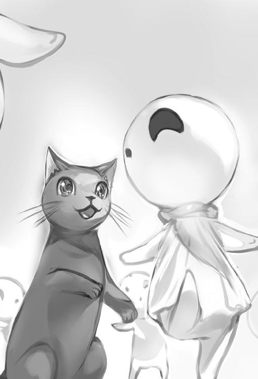
「にゃぁ」
黒猫は僅かに耳を凹ませ振り返り『わかったニャ』と、顔を向けポポブムの後頭部へとぼとぼと戻っていった。俺は、乾燥肉を咀嚼しながら外を確認。
朝日は昇っていないが......雨が小粒になってきた。よかった雨が止みそう。
溝下に雨水が流れ込み底は水溜まりが出来ていたからな。岩の窪みから顔を出し雨が止むのを暫く待っていると......丘の向こうから朝日が登ってくるのが分かる。
丁度良く雨が止み晴れとなった。
「おぉ......」
自然と漏れ出る地声。丘上に虹が発生していた。丘から丘を跨ぐように虹が大きな橋を作っているので思わず渡りたくなる。綺麗な虹だ......少ない子精霊たちも虹の出現を祝うように岩の縁で踊っていた。雨の暗い陰鬱な気分から解放され気分が良くなる。
綺麗な虹を見つめながらの出発だ。丘の起伏はまだまだ大きい。
あの丘の頂上を目指そうか。ポポブムの頭を頂上へ向けて登っていく。
丘の頂上につくと一大パノラマの景色が視界に入る。
起伏豊かな小高い丘が海の波のように続く。朽ちた大きな砦跡も見えた。
広葉樹の森林が続く地平線。風が生き物のように草花を揺らし丘の斜面に漣が立つ。
それが丘から丘へと続く道標にさえ見えた。
空を見上げると、空と雲の間に日光が漏れるように差し込んでいる。
日が差している地面は青草の他に綺麗な花々が彩っていた。
――幻想的だ。行ったことないけどニュージーランドみたい。
素晴らしい風景が広がっている。この風が織り成す自然音。天籟。
自然が作る音も匂いも、その全てが......豊かな地上がここにあると示している。
映像や写真では伝わらないだろうな。身に沁みる景色を堪能。
手綱を引き丘を下りゆっくりと進めながらポポブムの頭の後ろに地図を広げる。
今はエルフの領域であるテラメイ王国の東。ということはこのまま右、東へ行くと......レフテン王国辺りが一番近いってことかな。もうすぐハイム川が見えてくるはず。
地図を見ていると、
「にゃ？」
俺の股間辺りから黒猫が声を出し、モゾモゾと動くと、黒い小顔をにょこりと出して地図を覗き出した。そのまま地図の地名へ右足をそっと伸ばし肉球を押し当てている。今から向かうところを示したのか？ と一瞬思ったが......今度は両前足と後ろ両脚を乗せ出した。黒猫は小さい体ごと地図の上にごろんと寝転がり「にゃん」と小さく鳴く。しまいには、地図の上で丸くなって占領してしまった。
「お～ぃ、ロロさん。地図が見えないぞ？」
尻尾を鞭のように動かしポンッと地図を叩き返事をしている。可愛いがしょうがない。
「地図の紙質、感触がそんなにいいのか？ ま、かまって欲しいんだろうけど。せっかくのいい寝床のようだが、この地図をしまうぞ？」
地図を引っ張ると、黒猫は体をずらして「ン、にゃ」と声を発して起き上がり俺の肩へ飛び乗ってきた。そのまま地図を鞍袋に仕舞う。
肩に戻った黒猫へ微笑んでから、手綱を動かしポポブムの速度をあげた。
なだらかな丘を下っていく。丘は道という道はなくヒースに似た草がメインに茂り木々が疎らに点在しているだけだった。東へ向かう。
ハイム川の支流の一つなのか涓々とした浅い川に辿り着く。その浅瀬を渡ると都市の一部なのか住宅街が見えてきた。そして、雲が晴れ高い塔も視界に入ってくる......凄い高塔だ。太陽の明かりを抑えるように掌を目の上に置き、陽射しを遮りながら高い塔を見上げていく。天まで届きそうな高い塔。ダンジョンの一つなんだろうか？
もしかして宇宙エレベーター？ 地球でも古代にバベルの塔とかあったらしいが。
ひょっとしてマハハイム山脈より高いんじゃ？ その高塔に視線が行くが、ふと、気付く。城壁らしいのが見当たらない。ここからじゃ見えないだけか？
地図にはレフテン王国【王都ファダイク】と記されてるけど。ま、王都の近くだろう。
周りも建物が増え行き交う人々も見て取れた。塔を見上げながらポポブムを進めていくと近くで硬質な金属音が響いてきた。どこかで争い合っている？ 掌握察も反応。しかし、周囲に人らしき魔素は多数あるので判別が難しい。続けて〈分泌吸の匂手〉を行うと......血の臭いで溢れていた。
どうやらこの辺りから治安が悪くなっているようだ。悪漢にしか見えない人族や抜き身の血斧を持った獣人たちが歩いている。獣人は毛むくじゃら。クロスアーマー的な革と鉄で出来た胸鎧を身に着けていた。その体躯の大きさから毛の内部にみっしりとした筋肉がついているのは想像がつく。その姿に有名ＳＦ映画のキャラクターを思い出す。
観察しながら進むと案の定、人の気配のないところで女性の金切り声が響く。
助けるか？ その音がした通りへポポブムを急ぎ向かせる。しかし、被害者はどこかに連れ去られたのか誰も居なかった。もう夕暮れが過ぎて夜なので、深追いはしない。
人通りも極端に少なくなる。宿を見つけたいが......ないな。何処も廃れた民家や空き家ばかりだ。そんな時、街道に地続きで繋がった大きな屋敷跡の廃墟を見つけた。
あそこなら休める場所があるかもしれない。
誰もいないことを確認してから庭へ侵入......敷地の裏庭に雑草やら木々が生えていたので、その木にポポブムを隠し停める。そして、ポポブムに乾燥肉を食べさせてあげてから首元のざらざらした皮膚を撫でてあげた。よし、俺も中で休むかと黒猫を連れ廃墟屋敷の中に入る。やはり廃墟だ。殺風景で泥棒が入られた後のようなところ。
今日はここで一晩過ごすかなと、屋敷の内部、柱の奥にある空間を見つけた。
ここを簡易的な寝床にしよう。柱に寄っ掛かりながら乾燥肉を咀嚼し噛みながら静かに夜を過ごし浅い眠りにつく......と、複数の足音と共に掌握察が魔素の反応を捉えた。
「ロロ、しぃ......」
誰だ？ 静かに唇の上へ指を縦に置き黒猫へ向けてジェスチャーを行う。
スキル〈分泌吸の匂手〉でも確認。
複数の人族たちが近付いてくる。そっと起き上がり陰から様子を窺った。
黒猫は俺の肩へ跳躍。指示通りジッと待機していた。
廃墟の屋敷に入ってきた人物たちを見ていくと......全員がローブを着込み背中に付いた頭巾を頭に被っている連中だった。顔が見えない。
その者たちと一緒に丸い光源が廃墟屋敷内部を照らしていく。あれは魔法の光か？
フードを被った奴等は部屋を確認するように周囲を見ていくが......幸い俺のところには来なかった。見回りを終えた奴等は広間に集結している。
「ここは前に仕事で潰した貴族の家だ。大丈夫だろう」
年季を感じさせる声質で話す男が頭巾を脱ぎ顔を晒す。
顔は中年。白髪が横に生えて目元の彫りが深く頬が痩けた男。
服装は首回りに薄汚れたファーがついた革鎧を着ている。
その場にいた全員が彫り深い男の行動に続き頭巾を脱いでいく。
全員、鉄兜を被った兵士たちだった。その若い兵士が口を開く。
「隊長、あの方々をこちらにお呼びしても宜しいですか？」
「あぁ、そうして貰う......いいか、くれぐれも粗相のないようにな？」
隊長と呼ばれた彫り深い中年男は部下と思われる兵士に対して念を押すように話していた。粗相？ お偉いさんでも来るのか？
「はい」
若い兵士は頷き廃墟屋敷の外の暗闇の中へ消えていく。暫くしてその兵士に誘導される形で人がぞろぞろとこっちに来るのが分かった。皆、さっきと同様に頭にフードを被っているが新しく入ってきた連中はその態度や格好からして、兜を被っている兵士たちとは明らかに違う。命令しているし偉そうな態度だ。命令を受けた兵士たちは廃墟の中からテーブルや椅子を探し広間へ運び机と椅子を設置していく。
机が設置されると、偉そうな連中の一人が頭巾を脱ぎ顔を晒した。
金髪に青の狐目。端整な顔立ちの男。背も高い。確実にイケメンだ。
服装も金が掛かってそうな金糸に縁取られたタブレットを身に付けている。肩からは毛皮のケープを羽織り首元にはネクタイ代わりのような漆黒の黒光りするスカーフが首に巻かれていた。胸元の毛皮ケープにキラリと光る黄金に輝く手型のブローチを付けている。
高そうなアクセサリーだ。その金髪イケメンは、部下たちが用意した丸椅子に座るとテーブルに指を立て、数回机を叩き居丈高の態度を取る。そして、キツイ狐目を浮かべると、さっきの隊長さんを睨み出していた。
「おぃ、ガルダ！ 当初の話と違うぞ？」
狐目の男にガルダと呼び捨てにされた隊長さん。
茶革の鎧を着込む傭兵風の中年隊長さんはガルダという名らしい。
そのガルダは恐縮するように頭を下げていた。
「はい。申し訳ありません。事情がございまして、これは閣下のご命令で王党派が動いたと急遽連絡を受けての行動なのです。閣下からは念には念を入れて、一旦ここで皆様方にご待機をさせていただくように。とご命令を受けています」
それを聞いたイケメンは完全に怒っていた。
「何だと？ そんな事情など知るか！ わざわざ、サーマリアから出張ってきたというのに......晩餐会ではなくこんな廃墟で出迎えとは、わたしはサーマリアにおける侯爵の一人だぞ？ ザムデ宰相は一体何を考えておられるのだ」
あのイケメン、貴族、しかも侯爵なのかよ。確実にお偉いさんだ。道理で連れてる兵士も数が多い。続いてもう一人、派手な格好の人が頭巾を脱いで丸椅子に座る。
ピュアブロンドの長髪が靡く。あの格好からして女か？
「事情は聞いたでしょ？ 貴方も疑り深いわねぇ」
「シャルドネ。君も何か言ってやれ。我々は王党派や機密局などの動きは、もう既に把握済みだというのに......」
「まぁね。それくらいは当たり前。だから、わたくしたちがここに居るのではなくて？ ザムデ宰相も不安でしょうがないのよ。配下がこのような者ですし......」
ザムデ宰相？ シャルドネと呼ばれている女貴族は厳しい視線であてつけがましくガルダをゴミのように見つめる。
「ふっ、確かに、今回はこの使えない奴等も含めての包括的な仕事だからな」
金髪イケメン貴族は頬を歪ませながら話していた。
二人の貴族に責められたガルダは居心地悪そうに顔色を悪くしている。
「ヒュアトス、彼をあまり苛めてはダメよ？ あれでもレフテン王国ザムデ宰相の部下なのですから」
侯爵の名前はヒュアトスというらしい。というか宰相って......。
「そうであったな。ここは確かに違う国、そして、停戦条約が結ばれているとはいえ、我々も本来は敵対国同士の仲」
「そうよ。わたくしたちは違う国同士の仲そして何故か今ここに一緒にいるのだからもう一蓮托生でしょう？」
「シャルドネ、君がそういう台詞を話すとは......」
「あら......意外かしら？ わたくしだってかなりの資金は投入してますのよ？」
そこの貴族会話に中年の隊長ガルダが言葉静かに割って入った。
「申し訳ございません。ヒュアトス様にシャルドネ様。その件でお話が......」
それを聞いて金髪のイケメン侯爵君こと、ヒュアトスはまだ怒りが収まっていないのか狐目で睨みながら口を開く。
「なんだい？」
「はい......閣下は王女ネレイスカリ様に関することで王党派に情報が漏れたのではないか？ と危惧なされているのです」
ガルダは少し緊張しているのか声質が変化していた。
「ザムデ宰相はまだ、そんなことを心配しているのか？ そんな焦らないでも抜かりはないのだがな？ 誘拐といっても関わっている金の経路は全部ダミーで王党派だろうが機密局だろうが絶対にバレないのだから......」
なんだ、なんだ？ 王女？ 誘拐？ 機密局？ 王党派？
聞いちゃいけないワードが沢山でちゃってるよ？
「貴方が囲ってる仮面をつけた集団......人攫い、暗殺、何でも裏稼業をこなす集団でしたわよね？ ネビュロスそれとも【暗部の右手】とかいう名前だったかしら？ さぞ、優秀な人たちなのでしょう」
シャルドネはそう喋るとヒュアトスの背後へ視線を向ける。
彼女はブロンドの髪を少し触る仕草をしながら妖艶な笑みを浮かべていた。
この女の喋りはどことなく鼻につく。しかし、嫌な感じはするが美人だ。ブロンドの綺麗な長髪に陶器のような白い肌。鼻筋も長く通り青い瞳の涼しげな表情はどことなく高級な調度品の美しさを感じさせるほど。着てる服装も拍車をかけている。
コートの隙間から見える黒とピンクの花刺繍が付いたレース付きの襟に胸元が開いているのを隠すように三角形の花が装飾された布胸当てがある。きっと下は宝石であしらった上服でも着てるんだろう。足元はシックな黒長のズボンという格好だったけど。
服装からして『ベルサイユのばら』に出て来そうな感じだ。高飛車女的な印象を受けた。
「そういう。シャルドネ、君の後ろに控えてる者も同じ類いの奴らだろ？」
「あら、そんなことは当たり前じゃない。こんな郊外の廃墟屋敷にわざわざ雑魚な兵士と一緒に来ると思って？」
「それは確かに」
その貴族同士の会話に、また、割り込むようにガルダが口を開く。
「ヒュアトス様。シャルドネ様。もうじきザムデ閣下からご連絡があるかと......明日の晩餐会でお詫びのサプライズを用意するとお話を承っております」
シャルドネと呼ばれた女貴族はそれを聞くと満足そうに笑顔を浮かべていた。
「......当然ですわね。期待しているわよ。でもザムデ宰相も人が悪いわねぇ。貴方の国の姫でしょう？」
姫を誘拐したのか？ こりゃ本格的に退散した方がよさそうだ......。
〈隠身〉を発動させてそっと一歩、二歩と後退した。その瞬間――。
「――何者だ！」
うひゃっ〈隠身〉をしたのに見つかっちゃったよ。
警告の野太い声を発した主、ヒュアトスの背後にある暗闇から、すぅっと現れていた。
格好は白き仮面に黒外套を身に纏っている。
外套を着た白仮面さんはあきらかに殺気を俺へと向けている。
「おいおい部外者がいるのか？ 誰も居ない筈では？」
金髪のヒュアトスは怒り心頭。顔を紅潮させながらガルダを睨みつけていた。
「はい。その筈ですが......本当ですか？」
「そうだ。ゼエフが反応しているという事は間違いないだろう」
「あらま。この会話......という事は、計画が漏れちゃったの？」
ゼエフと呼ばれた白仮面野郎はまだ俺の方へ仮面を向けた状態だ。
「出てこい、そこの隅にいるだろう」
あちゃぁ本当にバレて看破されている。掌握察やフェロモンズタッチに似た気配察知の技をあの白仮面をかぶったゼエフと呼ばれた人物が持っているのか。
いや、最初は気付かなかったから違った特殊感知タイプか。
掌握察による魔素の反応は周りに複数だ。皆で夜食会でも開こうってか？
しかし、冗談めいたこと考えている場合じゃねぇな......人数的に圧倒的不利だ。
逃げる準備はしておかないと。そう考えながら逆に姿を晒した。
急に現れた俺の姿をヒュアトスは切れ長の狐目を見開きながら確認してくる。
「お前はどこの者だ。まさか王党派か？」
と、静かに尋ねてきた。
「えっと、ただの放浪者ですが」
ごまかすつもりはないが、一応。
「いつからそこにいた？」
「最初から」
「ゴミといえど生かしてはおけないわね？ ヒュアトス？」
貴族風の女、シャルドネか。色白で綺麗な顔だが、腹の底から冷嘲が滲み出る程の冷淡な態度を取っていた。今、こいつは俺をゴミと言った。
蔑みの目で俺を見下しながら語っている......気に食わねぇ。
「分かっている。ゼエフ、アポー、ユイ。殺れ」
「はっ」
「分かりました」
「直ちに」
二つの影がその言葉と共に新たにゆらりと出現。ゼエフと同じように黒外套に身を包み白と黒の仮面をそれぞれの顔に装着している。白と黒の仮面を被る新手の二人は足音を立てずにゼエフと呼ばれた同じ白仮面野郎の隣で止まった。合計三人か......更に、隊長ガルダが口笛を吹く。笛の合図と共に兜を被った兵士たちは、抜き身の長剣を胸前に構え持ち貴族たちを守るように壁となった。数人の兵士がじりじりと間合いを詰めるように俺に近付いてくる。魔察眼で確認。顔を出している兜兵士は問題外だ。魔技の気配もなし。
注意を向けるべき相手はあの白黒仮面の三人。全員、魔力が足や手に集中している。
三人は魔技使い。だが、明らかに練度が低い。体内魔力の受け渡しが鈍すぎる。
ん、一人だけ、やけにスムーズなのがいた。正直、戦いたくないから......話してみるか。
「ちょっと待った。勝手に殺れとか俺は無関係だぞ。この後に何が起きようが知ったことではないのだが......」
「君は知る必要がない事を知ってしまったんだよ」
ヒュアトスは冷たい視線を維持してそう話す。俺をチラッと見てから部下のゼエフとアポーと呼ばれた白黒仮面野郎たちへ視線で殺せと合図をしていた。
チッ、しゃーない。衝突やむなしと、黒槍を構えて黒猫へアイコンタクト。黒猫は一瞬の内にむくむくっと体を大きくさせて二人の兵士へ飛び掛かった。それを合図といったように、俺を最初に発見した白仮面のゼエフが仕掛けてきた。ゼエフは足に魔力を溜めた魔闘脚で地面を蹴り前進している――素早い動き。
右手に握られた長剣を突出させている。狙いは俺の胸辺りか？
黒仮面のアポーも続けて走り寄ってきた。同じような剣突技を繰り出してくるようだ。
こっちの黒仮面の狙いは首辺り、俺はゼロコンマ何秒で反応。
黒槍を微かに八の字に動かし――二人の鋭い剣突をそれぞれあらぬ方向へ弾いて往なしたその一瞬の隙を突く。最初に白仮面のゼエフへ黒刃の穂先をプレゼントしてあげた。
ゼエフは一瞬の所作で繰り出した黒槍の突きに反応できず。防御が間に合わない。
白仮面ゼエフの鳩尾を深く穿ち金属の裂ける音が響く。
外套ごと裂けた箇所からは血が噴出していた。
ゼエフは「グォッ」と呻き声を出し苦悶の表情を浮かべて後退。
直ぐにアポーと呼ばれた黒い仮面野郎が仕掛け直してくる。
〝槍は引き際に隙が生まれる〟と師匠の言葉が一瞬頭に過った。
――視界右隅に黒仮面の下に宿る緑の瞳が一瞬ぶれて映る。アポーが両刃の長剣を振り下げて俺の右肩口から胸を削ぐように袈裟斬りをかましてきた。
その剣撃を見切るように動く――爪先半回転。体を左円軸軌道に動かし半歩後退。
そして、肘を上げ腋を僅かに広げながら黒槍の後方部を持ち上げた。
石突を――斜め上へ少し突くように長剣を迎え撃つ。その瞬間、ガンッと短い金属が折れる音が響く。アポーの折れた剣先は貴族たちの目の前に飛び壁となっていた兵士の顔へ突き刺さる。周りから――ひぃ、と微かな悲鳴が生まれた。フッ成功。そう、長剣を折ってやった。これは簡単に見えるが難しい。剣刃の腹を叩くように黒槍の後方部である石突を絶妙のタイミングで剣と衝突させる技だ。アキレス師匠直伝の剣砕き。だが、そんな見世物は序の口。ここからだ。即座に円軸の軌道からの突然の直角、吶喊軌道。
俺は咆哮しながら鋭利な刃物にでも成ったように真っ直ぐ前進した。
アポーは愛剣を折られたことに動揺したのか、俺の速度に付いてこれない。
魔闘脚で魔力を込めた左中段足刀がアポーの鳩尾を捉えた。
蹴りが腹に沈み込み――軋む鈍い音が聞こえる。
「グェッ」
黒仮面アポーは苦悶の声を出し前のめり姿勢で突っ伏した。
今にも倒れそうな黒仮面の着ている外套を手前に引き、背負い投げのように地面へ投げつける。だがそれだけじゃない。投げられたアポーの黒仮面が俺を見つめる中――アポーの頭蓋が地面に当たる直前に黒槍の金属棒を下から掬い上げるように蹴りを出していた。
蹴りによって押し出された黒槍はアポーの顔面にめりめりっと沈み込む。
金属棒は黒仮面ごと頭蓋骨を粉砕。アポーの脳漿を撒き散らした。
差し詰め雷・落とし改と言ったところか。まぁ〈槍組手〉には無象無形の技が豊富にあるけれど、名前はほとんど覚えていないんだよな。師匠との戦いは殆どが実戦だったし。
おっ、ロロの方も雑魚兵士たちの首を噛みきって戦いが終わったようだった。
だが、もう一人......白仮面を着けた奴がいる。
同じように足に魔力が集まっているのが確認できた。
こいつは一番身長が低いがさっきの二人より強そうな雰囲気がある。
小柄の白仮面は仲間が軽くあしらわれたのを見て用心したのか、ゆったりとした所作で特殊な刀系と分かる二本の刀を鞘から引き抜いている。
仮面を隠すように刀の刀身をクロスさせていた。その刀身から白く輝く文字がうっすらと浮かんでいる。あの刀、二本共に魔力が漂い、魔法の加護を窺わせる物だ。
そして、トレンチナイフやスカルクラッシャーのように近接用に拳で攻撃できる物も付いていた。刀身から延びた刃の一部が環状に伸びた柄と繋がっているという特殊な作りだ。俺はその特殊な刀に視線を向けながら黒槍についた血を払うように振り回した後、正眼で構え待つ。その瞬間、白仮面野郎が先に動いてきた。
小柄な体型を生かすように前屈みになりながらの速度をぐんっと上げ、刀を水平に保った横薙ぎを繰り出してくる。俺は急ぎ正眼から黒槍を斜めに構え直し――その斬撃を防ぐ。
特殊な刀剣とタンザの黒槍が衝突した。キィンと甲高い音と同時に刀を弾き返し同時に黒槍の突きを返す。だが、難なく躱される――奴はヘッドスリップをするように僅かに頭を反らし、黒槍を躱していた。そのまま体を前方へと畳みあげ左手を前に伸ばし銀に輝く刀を俺の首へ突き立ててくる――ぬおっと油断ならねぇ、な。
一突き、二突き、突いてくるのを左右へ上半身を揺らすように動かし剣突を避けた。
白仮面は逃さないと言わんばかりに右手に握る刀を水平に保ちながら俺の胴目掛け、また薙ぎってくる――こいつ中々強い。白仮面の連続攻撃に防戦一方となった。避ける。躱す。ずらす。と、剣撃を躱し続ける。ま、わざとなんだけどね。この刀、綺麗だな。アレを使うまでもない。じっくりと観察して刀の間合いを掴むと反撃に出た。
黒槍を刻む秒針のように見立てゆったりと回転。奴が大振り気味になる二太刀目の攻撃を待った。一太刀目、槍では受けずに体を半歩ずらしギリギリで躱す。
白仮面は左斜めからの袈裟斬りの動作を繰り出してくる。
二太刀目の刀を振り落としてきたところをタイミングよく狙った――来た！
黒槍の握り手を柳の枝を握るように意識。柔らかく刀の斬撃を受けて――弾く。
一瞬で金属棒と衝突した魔刀はあらぬ方へと向かう。その隙に右から円を描くように〈魔闘術〉は使わず素の右下段足刀の蹴りを敵の足へ喰らわせる。
「えっ――」
白仮面野郎を転倒させた。
そのままもう一度、地面に転がる奴の腹を軽く蹴り上げ後方へと吹き飛ばす。
これには愉快そうに見ていた貴族たちも一瞬で目を見張る。
ヒュアトスは驚愕の眼差しを向けてきた。
「【暗部の右手】である、ネビュロスの三傑をこうもあっさり――」
「......驚いたわ。わたしの部下に欲しい」
ヒュアトスに続いてシャルドネの女貴族も頬を赤らめながら話して呆けている。
「ヒュアトス様！ シャルドネ様！ ここは退きましょう。わたしが――」
ガルダとかいう彫り深い隊長も、俺とやるのか？
だが、こいつも黒猫に殺られた他の兵士と大差ないと思うが......。
「ガルダ。お前では無理だ」
ヒュアトスはかぶりをふって語る。
自分の部下があっさりやられたのを見て、実力が分かったようだ。
「こっ......この責任は、わたしが！」
「ガルダ、そういう......お前、いや、ザムデ宰相がこれを仕組んだのでは？」
ヒュアトスは詰問的に話をしてガルダを睨む。彼は慌てて、頭を左右に振りヒュアトスを見た。
「違うっ、絶対に違います！ わたしは知りません。本当です。ですがコイツは機密局や王党派側が用意した手練れかも知れません......」
「ガルダ――君は相当な能無しだな。だが、まぁそのおかげで君が敵ではないと判断できるが......」
そこに大剣を背にした白マントを靡かせる白髪老人が現れた。大剣を背中に持つ老人戦士はシャルドネの前で軽く頭を下げるとシャルドネへ近付いていく。
「お嬢、いえ、閣下......」
老人はシャルドネに耳打ちして小声で会話をしている。
「そう。うん。サメ。わかったわ。一時退きましょう......ヒュアトス。何か語っているところで残念だけど、このお話はまた今度ということに......それではね。キーキ、サメ。帰るわよ」
そこにシャルドネを守るように獣人女がさっと現れ、白髪の老兵士の隣に並んで、片膝を地面につける。
「はっ」「畏まりました」
獣人と白髪の老兵士はシャルドネに頭を下げて返事をしていた。
「シャルドネ！」
ヒュアトスは不愉快そうな顔を浮かべて約束を破るのか！ と、言わんばかりに叫ぶ。細い瞳に言うに言われぬ憤怒の色が現れていた。
他にも強そうな部下がいたのかよ。でも彼女らは逃げるようだ。
「あんたらも安心したらいい。別に口外するつもりはない。ここには俺は居なかった。という事で一つよろしく」
俺はにこっと笑い、あけすけにくだけた口調で語る。
「ロロ行くぞ。では、さいならぁ」
頭を下げて一揖する。
「なっ、お前！」
ヒュアトスとガルダは傍観を潔しとせず、俺を睨んできた。
しかし、そんな事は知らない。三十六計逃げるに如かず。
魔脚で黒猫のもとへ素早く近寄り、子猫姿の黒猫を脇に抱え込みながら跳躍するように走り抜けてポポブムを留めて置いた場所へ向かった。
あんな連中と関わりたくねぇ。急ぎポポブムに跨ったその足でポポブムの腹を軽く叩いて出発した。裏庭から街道を突き抜けるように走らせていく。
来た道を戻りハイム川の浅瀬を渡る。
レフテン王国のファダイク近郊から少しでも離れようと暗闇の中を駆けていった。
幾つかの小村を通り過ぎた頃。
朝日が上がり周りが明るくなってきたところでポポブムの歩を緩める。
そういやさっきの戦いで初めて無意識に人を殺ってしまったな。
しかし何も感じない。ん？ 背後に魔素の反応だ。馬の音も聞こえる。
――追手かよ。後ろを振り返るとやはり白い仮面を被った奴だった。
あいつ懲りずに追いかけてきたらしい。感傷に浸ってる暇もなしか。しつこい。
今後の為にあの追手に対して俺がどういう存在か解らせてやるか。
右手に黒槍を携えてポポブムからさっと、跳躍――地面に降り立つと槍をぐるりと回して正眼に構える。追っ手をここで待つ。
「ロロ、少し見てて」
「にゃ」
黒猫は『わかったニャ』風に鳴くと、ポポブムの後頭部で後ろ両足を揃えて成り行きを見守る姿勢となった。つぶらな紅い瞳で見つめてくる黒猫へ軽く頷いてから追っ手に対して視線を移す。
白い仮面を被った追手は両手に刀を持った状態で馬に乗りながら立ち上がっていた。
立って何するんだ――跳躍か。白仮面は速度を出している馬上から身を捻りながら飛び上がる。身体が駒のように回転していた。左右の両手に持った刀が回転運動により威力が増しているのか刃がぶれて見えている。思わず十点満点とその身体の軌道から言いたくなるが、迫る斬撃を受け流す動作を取った。主を失った馬は俺の横を駆け抜けていく。
黒槍を斜めに持ち上げ回転刃を受け止めた。刀と槍が衝突し、キィンッとした耳障りな音が何回も響く中、黒槍を上から横へ回し下へと動かして円を描くように扱い、次々と振るわれてくる回転刃を受け流して弾いていった。白仮面は、回転斬撃が防がれた着地の後も、たいした隙を見せず。返す刀で、一太刀、二太刀、と連続で振り抜いてきた。俺はその斬撃を受けずに、刃の軌道を見ながら後退。避けていく。この間も思ったけど――こりゃ相当鍛えられてる。魔闘術と見られる魔力操作の強化もスムーズだ。それに、この魔力を放出させている分厚い刀刃も特殊な武器で金属なんだろう。しかし、ここまでだ。
斬撃を屈んで避けた際、足に魔力を溜めた魔闘脚を行い地面を蹴るように後退した。
近接の間合いを外して距離を取ってから......もう一度、白仮面野郎を見つめる。
仮面の穴から僅かに覗かせる瞳。俺はニヤッと微笑を作った瞬間――攻勢に出た。頭、首、胸、太腿、膝、の急所へ的確に、迅速に、穂先と石突を撃ち分けて攻撃していく。
数十秒、高速で黒槍を上下左右へ変幻自在に振るい続けた。白仮面は小さい体格を生かすように屈んで避け、回転して避け、両手に持つ魔刀で、俺の払いから速突きを弾いて躱しているが、五分程で次第に避けられなくなり、「くっ」「はっ」と息を乱す音が耳に届くようになっていた。肩で息を始めている。
無酸素運動はキツイよな？ 俺の高速戦闘な槍武術に付いてこれていない。
リズムが目に見えてハッキリと悪くなった。そして明らかな隙を産み出す。
その僅かな淀みを見逃す訳もなく――狙いは右腕。左右へ打ち分けていた連続突きの途中、わざとフェイクを織り混ぜた攻撃へ移行。左足爪先を軸に、身体を駒のように半歩左回転させながら黒槍を弓がしなるように振るい上げる。
突然に軌道を変化させた石突部位の一撃を相手の上腕へ喰らわせた。
白仮面の腕は内側へ折れ曲がり鈍い音を響かせる。
「ッイ」
白仮面は痛そうに声を漏らし握っていた刀を落とす。
だが、白仮面はそんな怪我など気にしないのか強引に前進してきた。
俺との距離を詰めながら無事な左手に握られた刀を斜め上段から振り下ろしてくる。
しかし脆すぎる斬撃だ。黒槍を斜めに構えて、右上の攻撃線の位置から振られてくる刀撃を受け流し刀の勢いを黒槍の金属棒で吸収させながら刃が黒槍の金属の表面を削るように銀斑の火花を散らし滑り落ちていく。その時、わざと相手に近寄り鍔迫り合いの形へ誘導した。白仮面野郎の視線とかち合う。仮面の目元にある穴から敵の瞳を見た。
綺麗な瞳――その一瞬の刹那の間に、白仮面の重心が俺側へ傾いているのを感じた。
体重の乗った刀の攻撃は滑るベクトルには抗えず――白仮面の体重は俺の方へ傾く。
その傾きを加速誘導させるように白仮面の体を掴みながら俺はくるりと身体を半回転させて白仮面の背後を取った。続けて、白仮面の左手を肘から強引に掴みあげて、黒槍を使った変形・腕絡みを行う。これも〈槍組手〉の技で変化系の一つ。
刀を持つ左手を強引に捻りあげ肩の関節を外してやった。
「いっ、がぁきゃぁっ」
んお？ 女!? 白仮面は黄色い悲鳴をあげる。
白仮面は左手で握っていた最後の刀を落とし、刀は地面に突き刺さった。
しかし、女声？ 確認のため後ろから手を回し黒外套の中へ手を入れる。
胸の上部をまさぐるように、あれ直だ。
もみもみと......ふむ。これは確実におっぱいだお。柔らかいし、お椀型おっぱいだ。
おっぱい研究会顧問としておっぱいの形を瞬時に把握する術は身に付けてある。
「あっ、離せ......何をするのだ」
白仮面の女は胸を羽交い締めにされながらも、甘い吐息を出して抵抗していた。
久々の女を感じ取る。股間がモッコリ。モッコスなチョモランマ状態へ発展。
この女の顔が気になる、すぐに行動を起こした。
仮面の紐をほどき外し襤褸な黒外套も脱がして取る。
羽交い締めを解いて体を離してあげた。そして、女の顔を拝見。
おぉぉ、驚いた。飛びっきりの美人じゃねぇか。女の美人暗殺者とはニキータかよ。
外套の下に着ていたのは鎖帷子系の黒装束。しかも、下丈のワンピースのような作りだ。
太股が露になり白桃色の柔らかそうな肌に黒い脛当てもなんか戦国時代のくの一を連想させる。それでいて現代的な女性の雰囲気を持つ短いおかっぱ系の黒髪で黒瞳ときたもんだ。
ニキータよりあずみか？ 小顔で綺麗な女だ。もしや同郷？
「......女か」
彼女は骨折してる手を使い震えながら脱臼している肩を押さえ込む。
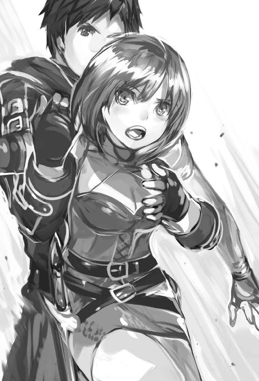
俺を睨む双眸にハッキリと、侮蔑の色があり睨んでいた。時折、落とした刀へと視線を向けている。刀を拾い攻撃？ 分かりやすい。また俺を睨んでくるし。
「お前、名前は？」
「......」
黙ったままか。確か、侯爵のヒュアトスに名前をユイとか......。
そう呼ばれていたのを覚えている。
「お前、ユイとか呼ばれていたよな」
「なっ」
おっ、この反応。やはりユイが名前か。指摘されたからか、彼女が放つ殺気のオーラが増したように感じた。剣呑な雰囲気を放出させて俺を睨んでいる。
「......ユイでいいんだ？」
「なっ、なぜ、わたしを離した？ それになぜ殺さない」
まぁ名前なんかより、そっちのが気になるよな。
「離したのは聞きたいことがあったのと......お前が女だったからかな？ 可愛い声が聞こえたので、その白仮面の下が見たくなった。そして、その顔が美人だったのは驚いたよ」
美人という言葉に、ユイの黒い瞳が揺れる。
「えっ、な......」
「それに胸も堪能しちゃったしなぁ。体つきも良いし」
「わ、わたしを辱める気かっ、ぐっあぁ！」
ユイが叫ぶと自ら関節を無理に嵌め込み、その左手で刀を拾い距離をとる。
痛いだろうに無理しているな。骨折しているだろう手を使い無理に左肩を嵌め込むとは......というか、あの状態で動かせるとか、相当な痛みに対する訓練をしてきたのか？
まぁそんな事より正論をぶつけよう。
「......おぃおぃ、勝手にそっちが襲ってきた上に、自らの意思で追いかけてきたのはお前だろう？ それに負けたら何をされるのも覚悟の上だろうに」
「うるさい！」
この反応からすると負ける気はさらさらなかったのだろう。
「右手の骨も折れて痛いだろうに、左手もだらんと垂れているしそんな状態で、俺を殺すつもりか？」
「うるさい、黙れっ戯れ言をっ」
ユイは脱臼していた左手を使い無理に刀を振り上げてくる。刀の軌道もゆるゆるな上に小刻みに震えているので当たる訳がない。僅かに身体をずらしゆるゆる軌道の刀を避けてからユイの左手を掴み肘を捻りながらユイの後ろへ回転。また羽交い締めを繰り返す。
ユイは折角拾った魔刀を地面に落としている。
「痛い、痛いっ、離せ！」
「嫌だね」
笑みを浮かべながら彼女のうなじへ顔を寄せて、その細い首筋を舐めるように鼻腔を広げて匂いを嗅いでやった。くぅぅたまらない。女の汗の良い匂いだ。
彼女の身長は百六十センチあるかないかぐらい。また胸をまさぐって、おっぱいを堪能。
綺麗な太股へと指を伸ばし撫でていく。
「お前、良い女だな～、良い匂いもする」
ユイの身体がぶるっと震えるのが分かった。〈分泌吸の匂手〉を発動すると、彼女の汗の匂いから僅かに恐怖心が伝わってくる。
「この、わたしを嬲るのかっ、変態！」
「それがどうした。さっきも言ったが、お前さ、こういう仕事してる奴が捕まった場合とか、その末路ぐらい考えた事あるだろう？ しかも、お前は女だ」
「......ふんっ、さっさとわたしを犯して殺せば良いだろう？」
「――馬鹿野郎っ」
思わずそう叱ってしまう。叱ると同時にユイの細く引き締まった筋肉質な体を離し地面へ突き飛ばす。股間高くして話す台詞じゃないし説教キャラでもないのだが......。
「くっ......」
彼女は俺を睨んでいるがもう戦闘意欲は失われているようだった。
そのユイの瞳が灰色や銀白色へ変わっていたが無視して話を続ける。
「聞くが、俺を追うように命じたのは、あの場にいた貴族たちかな？」
ユイは答えない。暗殺者だからな。言う訳ないか。それよりも......。
「......突然だが、少し変わった質問がある。君、ユイが名前なんだよな。その、いきなりで何だが、日本という言葉を聞いた事はあるか？」
「ニホン？ なんだ数字か？」
おっ、きりりっとした上目遣い。けどこの反応だと、やっぱり転生者とか同郷の出身ではないな......たまたま、黒髪で黒瞳なだけか。
「いや、国の名前だ」
「そんな国、聞いたこともないっ......それより早く、わたしを殺せ......」
ユイはそんな言葉を泣くように吐き、表情に翳りを見せる。
「そっか。でも......ユイの命は奪う気にはなれないや。甘いと思うけど、どうもね」
可愛い子だし、なにより久々に人の女のリアルおっぱいを味わわせてくれた女だ。
俺のおっぱい革命運動家としての血が騒いだのは事実。もっと丹念に調べたいと思わせてくれた相手だ。とてもじゃないが命を奪う気にはなれない。
じろじろとユイの顔を観察して考えていると、彼女は紅い小さい唇を震わせる。
「......情けなぞ、意味がないぞ」
「だが、命あっての物種だろう？」
俺の言葉を聞いたユイはショックを受けたのか、長い睫毛と黒い瞳を揺らす。動揺しているのが丸分かりだ。だが、それがいい、幼げな印象もあるけど、すっげぇ美人だ。
「......いいのか？ このまま解放したら......いずれ、わたしはお前を殺すぞ」
はは、殺すぞ、か。どんとこいや。彼女は命令されているんだろう。
「......あぁ、いいよ。このまま逃げるしユイは俺を殺したいんだろう？ 傷を治したらいつでも殺しに来たらいい。あっできれば、その仮面は被らずに綺麗なその顔を見せて襲ってきて欲しいなァ」
彼女は心底呆れたようにフザケタ事を話した俺を見つめている。
目を大きくし豆鉄砲でも食った鳩のように口をぽかーん、と開けていた。
そんな顔を浮かべているユイを尻目にポポブムへ乗り込む。
「あっ、待てっ」
「じゃ」
と、彼女へ笑顔を向け軽く腕を振りながらポポブムの腹を叩きその場から離れていった。暫く進んだところで嘆息をつく。もう追ってくる気配がないので、一安心。
美女だったのでいいけど。でもあんなとこで会合とかすんなよなぁ、姫を誘拐とか、危ないキーワードが出ていたが......ま、俺には関係なし。
火中の栗をわざわざ拾いには行かない。後は野となれ山となれってんだ。
俺には冒険者に成って、自由にまったりと世界を見て回り、お宝をゲットしては美女とイチャラブしたいって大前提があるんだ。しかし、目の前で誘拐の現場に居合わせたら助けに入っていただろうな。姫なんだからきっと美人だろうし。だが、聞いた話だけで飛び付くのもな。手の届く範囲なら全力で助けに入り、敵がいたならば根絶やしにするのが、俺のジャスティス。（今、考えた）やっぱ綺麗な美人女性にはちやほやされたい。
それに生きてりゃ目的なんてコロコロ変わるかも知れない。
黒猫との約束もあるし。
そんな不純で欲望まみれの思考を重ねながらポポブムを走らせていった。
さて、ここどこだろう......ポポブムを無我夢中で走らせたからな。
辺りを確認。そのまま遠方に視線を巡らせる。
――ん？ おぉ、標高高そうな山だ。かなり遠くに一際高い山脈が見える。
マハハイム山脈とは位置が逆だから、あれが南のバルドーク山か。
その手前にはハイム川も見えた。広大な川とエベレストを感じさせる標高が高そうな山を見て確認していけば大体の自分の位置は予想できる。
春の季節の涼しい風を満喫しながら焼かれた廃墟といった戦争の痕が色濃く残る小さい街や村々を通り西や南へとポポブムを進めていく。途中、禿げた親父のキャラバンに会い、南は危険だぞ。と注意されるが構わず南へ向かっていた。
遭遇したモンスターは緑の皮膚を持つ怪物。俺が地下で遭遇した奴らだ。
ファンタジー世界の定番モンスターのゴブリンに似ていた。だけど、遠くからそのモンスターを見かける程度だった。空に巨大クラゲが浮いてるのを見かけたぐらいで地上のモンスターは少ないようだ。空に浮かぶ巨大クラゲの姿に突っ込みたくなるが、なんというか不可思議な物を実際に見ると......簡単に受け入れちゃうんだよね。
しかしモンスターの代わりといっちゃなんだが......この辺りは盗賊が多く治安が悪い。まぁ、しょうがないのかもな。宿場街には冒険者ギルドがない。あるのは襤褸民家、汚い酒場、小さい金物屋、質屋と安宿があるぐらいで纏まった金は稼げそうもない。
アキレス師匠から貰った金貨を崩そうにも、換金できそうな店もなかった。そもそもこの辺りの街や村では金貨の話ができる雰囲気ではない。
村の表通りでは喧嘩や窃盗が日常茶飯事だ。
少し路地裏にいくと争っている場面にもよく遭遇した。大人だけでなく子供の死体を見つけた時は......動揺したもんだ。なんせ人の死体、しかも殺された死体が放置されているのは初めて見たからだ。その死体について周辺の人に尋ね聞いても全くの知らんぷりだし。
「あんたは男爵の役人かい？」
「ふーん」
「あぁ、死んでたね」
「......しらねぇよおめぇはなんなんだ？」
とかだからな......風が吹けば桶屋が儲かるというが、棺桶を作る商会もここじゃ儲からないだろう。成仏しそうもないが片手で祈っといた。
厳しいね、この世は......エルフの国から出た辺りとは雲泥の差だ。
だからこの辺り限定の話なんだろうけど――なぁ？
珍しくポポブムから降りて近くを歩いていた黒猫へ頭を向けると、「にゃ？」と、黒猫は軽く鳴いてからポポブムの頭の後ろへ戻ってきた。
そんな治安の悪い街道では商売人たちは商魂逞しく冒険者を伴って集団で通り抜けていくのが当たり前の光景だった。俺みたいな一人と一匹での旅人は珍しいようだ。
だけども、そんな旅人にも例外なく盗賊たちは襲い掛かってくる。掛かる火の粉を払うように盗賊共を倒し気絶させて放置して逃走を繰り返した。他の商隊と護衛の冒険者たちは襲い掛かってくる盗賊たちから身を守るためにわざわざ夜間にひっそりと進むことが多い。しかし、盗賊たちにとってそんなことは関係ないようで街道の昼だろうが夜だろうが、標的を見つけると跳梁跋扈を繰り返しの略奪のやり放題だった。
それは凄惨を極めるやり方。盗賊団は襲った商人や老馭者だけでなく、女、子供、それらを守る冒険者たちを見逃さずに必ず殺していた......酷い。
男爵領と聞いたが、主無き地としか思えん。
冒険者より盗賊のが強いとはどういうことだよ。
曇り空と重なり陰鬱な気分でポポブムを進めて街道から続く小高い丘に辿りついた時、更に呆れる凄惨な光景が視界に入ってくる。
丘上にあった大木の枝に何体も首吊り死体がぶら下がっていた。唖然とする。
こないだ町中でみた子供の死体はほんの序の口に過ぎなかったんだと、改めてこの残酷な世界を認識した。わざわざこんな高い枝に吊るすなんて......。
百舌鳥の早贄じゃあるまいし、みせしめのつもりなんだろうか。
むかついたので、その匪賊たちを捕まえ懲らしめ尋問を繰り返した。
匪賊の集団名は【ドルデビ団】のバルトの一味だそうで、裏には【王都ファダイク】で有名な大手の闇ギルド【ノクターの誓い】が居るとか言われたが、分からないので無視。
そのまま街道を進み自然豊かな山林を進んでいると、いつの間にか街道から逸れてしまったようで霧が濃くなり森が繁った岩場がある場所に来てしまっていた。
寂れたところだ。不気味な兆しなのか朽ちた岩場に止まっていた鴉たちが鳴き声をあげて一斉に飛び去っていく。何かが起きる前触れか？
ここは小さい山なのかな？ 霧で見にくいが谷があるところまで進んでしまったらしい。こう霧が濃いとな......ん？ あ、もしかして、ここが魔霧のなんたらという場所か？
そんな疑問を抱いていると背後に魔素の反応を確認――ポポブムを急ぎ走らせる。
さっきまでいた場所に刀が空を斬っていた。刀の持ち手は女の手。おぉ、あの時の女だ。仮面を被っていない。まぁ、何にせよ......俺を襲ってきた美人な殺し屋、ユイだ。
ユイは刀を両手に持った状態。返り血を浴びたのか、血の汚れがあちこちに付いている。
何かと戦ったのか？ 左肩の黒外套部位が破れ、血が滲んでるのが見えた。目は虚ろで表情は翳りを見せている。
「よう。ひさしぶり。仮面は外しているな。だが、綺麗な顔が汚れているぞ？ 怪我も負っているようだし、疲れているんじゃ？」
「......」
「また、黙りか？」
久し振りに現れたユイ。だが、俺の問いに答えようとはせず無表情の沈黙。
冷たい眼差しを向けてくる。すると、突然にユイの瞳が変化を始めていた。
黒曜石のような瞳が灰色から銀白色に、また黒色へ戻り変化。
瞳の色が揺らめく光芒の瞳となる。瞳の中に銀白色の小さい点が無数に現れては消えていく。空から雪が舞散るようで美しく幻想的な瞳。
やがて雪が一面に真っ白になったような白眼になった。銀を帯びた不思議な双眸。
それは冷徹な殺し屋が宿すには勿体無い、美しい瞳だった。魅了される。
「にゃぁ」
黒猫も不思議そうに顔を傾げて、その瞳を見て鳴いていた。しかし、彼女はそんな猫声にも反応せず......瞳の色が変わっているが、この間のような鋭い殺気はない。
「どうした？ そんな俺の顔を見て――っと」
ユイの刀を防ぎ――金属音が響く。いきなりの飛び斬りかよ。
黒槍を横へ薙ぎ払い、防いだ刀を振り払う。この辺りは霧が濃い状態だけど、ユイに構っていられないのでポポブムの腹を蹴り霧の先に進めて逃げることにした――しかし崖上の行き止まり。しょうがなくポポブムから降りた。危ないな。こんな霧じゃ崖が目の前にあるとは気付かないぞ。止まっていると、ユイが背後から追いかけてくる気配を感じ取る。
「ロロ、ユイがまた来るから、このまま見てて」
黒猫に告げてから背後から迫るユイを待ち構える。そこに、ゆらぁっと幽鬼のようなユイが現れた。表情はどこか辛そうだ。瞳の色は黒色に戻っていた。
「ユイ、顔色が悪いな？ 大丈夫か」
「わたしの心配をしてる場合か？」
「はは、それもそうだな」
ユイは笑う俺を見ても変わらず両手に持つ刀を振り上げてくる。
こないだ折った腕の怪我はもう治っているようだ。その二刀の斬撃を防ぐため、躱すことだけに集中。一刀、二刀目の袈裟斬りを避けると、ユイは刀を振るのを止める。
腰を沈め横回転しながら素早く納刀し、腰に差していたもう片方の刀を居合い技を行うように抜刀してきた。素早い抜刀二刀の斬撃へ移行か。だが、その刀条を読み、躱す。
「なっなぜ、反撃しないっ」
だってなぁ――目の前をユイが扱う刀の刃が通り過ぎていく。
この二本の剣筋を見て――返す刀と左右の刀がクロスするような斬撃だ。
俺自身の剣の参考にしたいってのもある――またも右上攻撃線から首を斬るような白刃が向かってくる。その刃の軌道を読み特殊な刀剣を拝見した。
鮮やかな太刀さばき――ところが、急に鋭くなった――刀がぶれる？
ユイの刀である二本の刀身が白く輝き分身したように動く。
突きの特殊スキルと思われる連続技を繰り出してきた。
はえぇぇ――クッ、耳がっ、イテェッ、頬や腕に切り傷を負う。耳朶が斬られ頬に血筋の糸を引くが、すぐに傷は再生されていった。鋭いがギリで躱しきれる――。
「――何故なのっ」
ユイは涙目になりながら訴えかけてきた。
「いやまぁ、ズバリ言うとだな――お前のことを気に入ったってのがある」
「くっ、なっ、なんなんだっおまえは！」
「もう、そんなに振り回すなよ」
俺の言葉に動揺したのかユイの鋭かった刀突は消えて刀の鋒が震えていた。
刀突からの横払いへ移行しているが、完全な大振りだ。刀を振り回し続けているが、その時、足元の土が唐突に崩れてしまう。
「あっ――」
ユイの片足が土を捉えずに空を踏む。体勢を一気に崩しそのまま崖下へ転落――。
くそっ、俺は咄嗟に魔闘術を発動させ強化した身体を動かす。ユイを助けにその崖下へ勢い良く飛び込んでいた。ユイは足を岩場にぶつけ、小柄な身体が一回転。血が舞っている。
「ユイッ――」
手を伸ばし逆さまになったユイの手を掴めた。彼女の手首を強く掴み、空中で錐揉み回転しながらユイの体を抱え込むように抱き締める。そこに崖岩が迫った。ユイの体を衝突させないように、俺は背中を岩場に向け衝撃に備えた。背中から激しく岩に衝突っ。
「うがっ」
痛すぎる、背中の起立筋に衝撃が走り息が詰まる。空中に放りだされ、また岩場にぶつかり回転しながら転がり落ちていく。何回か岩に衝突してから地面に到達。
その間もユイの手首と体は離さなかった。しかし、完全には守れず、彼女は意識を失いぐったりとしている。俺も痛い場所があるが、それよりユイが心配だ。
敵で殺し屋だが気に入った女。出来るだけの行動はする。
「おい！」
声を掛けながらユイの体を抱えあげ平らな地面に寝かせる。
黒外套を着ている体を見ていった。頬に傷があり左肩は外套が破れて中に着ている黒装束な鎖帷子も裂けていた。その左肩に大きな獣の爪痕のような痕がある。
まだ血が滲むように出ていた。脇腹には鎖帷子を突き抜けた尖った岩が刺さっている。
腹の傷もヤバイが問題は下半身の方だろう。両足があらぬ方向へ曲がっている酷い怪我だ。
片方の足は骨が飛び出しているし重傷だな。俺が抱いて守っていた頭部は大丈夫なようだ。何かないか？ と、腰袋確認。腰袋の中はぐちゃぐちゃだった。
師匠から貰っていた回復ポーションの瓶も割れている。クソッ、ん、おぉ、瓶の底に少しだけ液体が残ってるじゃないか。これを飲ませれば......しかしユイは意識がない。
口に耳を当て呼吸を確認した。やばいな。息が感じられない。口に含ませても、ちゃんと飲み込まないかもしれない。顔にかけるだけでも効果はあると思うが......専門的な事は皆無。とりあえずこのポーションは傷が酷い箇所へ直接かけることにするか。
脇腹に刺さった岩を抜き取り、血が溢れる。そこに少ないポーションをかけていくと傷は塞がり血色がよくなったかに見えたが、傷が少し開いてしまっていた。
縫合をすれば良いんだろうけど何もない。しょうがない。
皮布で傷を塞ぐように巻いてから人工呼吸を行うか。
ユイの後頭部を持ち気道を確保。だけど、胸部打撲が酷かったら状態を悪化させてしまう？ 腹に傷もあるので躊躇。破れた鎖帷子を持ち上げ胸部を確認。
内出血もなく損傷は見られないので、ええい、やってしまえと。小さい唇を奪い、空気を送り込む。やはり怪我が怖いので優しく赤ちゃんをなでるように指で何回も胸を押す程度に留める範囲で繰り返し行った。その直後――、
「ぶほっごっほ、ごほっ、はぁはぁ」
おぉぉ、ユイは息を吹き返した。良かった。助かった。学生の時に救急隊員の指導を受けといてよかった。うろ覚えだったけど......とにかく息を吹き返した。
単にポーションが効いただけ？ かもだけど。
「......こっ、ここは、とうさん？ なっ......お前は」
「あぁ、俺だ」
「う、......」
ユイはもう睨んではいなかったが、俺に気付くとまた気を失ってしまった。
「おい！」
ユイの唇に耳を当て呼吸を確認。ちゃんと息はしていた。おでこを触ると異常に熱い。
腹の傷と肩の切り傷のせいか？ それとも風邪か。そういや顔色悪かったな。
医者に見せるにしてもこの谷底じゃ霧が濃いし......この辺の詳しい地理なんてわかる訳もない。この世界じゃ医者というより回復魔法を使える魔法使いやヒールポーション持ちの人を探すべきだろうけど。師匠が持ってたポーションは腹を治したので最後。何かないかと辺りを見渡す。おっ、ガレ場でキラリと光るのを発見。
あれはユイの武器である特殊刀剣だ。刀身がキラリと白く光っている。
悪魔のような意匠が施された白鞘に黒鞘もユイの足元に落ちていたので刀身を鞘に収めて、その刀を二つ回収してあげた。その時、丁度良い木枝を数本見つける。
これ使えそうだ。木枝を削りユイの折れた足を揃えて枝をまっすぐ添えて固定。
腰に巻いてある皮紐で足を縛ってあげた。とりあえずポポブムを口笛で呼ぶ。
ユイの体を抱えて口笛を吹きながら歩いていった。暫くして、
「プボップボッ」
鼻息が聞こえてくる。ポポブムが崖上からぐるっと回り込んできたらしい。
しかし、ユイの身体、軽いなぁ。こんな体で俺を追ってきたのか。
「にゃにゃ！」
黒猫の声だ。
俺が近くまで戻ると、黒猫が心配したように叫んでいた。
「ロロ、俺は大丈夫だけど、この子が重傷だ。ポポブムに乗せるぞ」
「にゃ～」
優しくユイを扱いポポブムの上に乗せて鞍背にある荷物袋を確認していく。
毛布に水筒や師匠がくれた小さい陶器製の瓶でもある魔力回復ポーションしかない。こっちの袋は食材と塩に香辛料の匂いがする。この袋は衣服だけだ。
回復ポーションは腰袋に入れていたのでない。
こっちにも取っておけばよかった......参ったな。ユイのおでこを触ると熱いまま。
黒猫は看護するようにペロペロとユイの頬を舐めている。
とりあえず師匠から貰った魔力回復ポーションを飲ませてみるか......少しは回復するかもだし。ぐったりした状態の彼女へ口移しで少しずつ飲ませた。
何にもエロいことはしてないんだからねっと、黒猫へアピールするが紅い瞳は俺を責めるようにジッと見据えている。そんなおどける仕草を見せながらユイをポポブムの鞍上に乗せた状態で霧の中をゆっくりと進んでいった。
それにしてもこの辺り霧が濃すぎるだろう......迷子だ。あてもなく霧の森を彷徨うが、モンスターの気配をそこらじゅうに感じる。掌握察やフェロモンズタッチでモンスターらしき魔素や匂いを避けながら霧の中を進んだ。辺りは暗く夕方になってきていた。
やばいな。そう都合よく宿屋なんてない。相変わらず掌握察に魔素の反応はあちこちにある。本当に何なんだこの森。モンスターが一杯だ。
その時ゴオォォォッと、獣か何かの叫ぶ声が轟く。
もう、避けていくのは無理か。重傷のユイが居るから戦いたくなかったのだが......その時、打ち捨てられた小さい石作りの礼拝堂を発見。中には小さい女神像があった。
女神の首は削られ腕もない不気味な女神像。
この名もない女神にユイの無事でも祈っておく。ユイの怪我が治りますように、南無。
仏教スタイルで祈る。そこであるスキルを思い出す。
最終的にユイがヤバくなったのなら俺の〈眷族の宗主〉を使えばいいんじゃね？
血を飲ませて〈従者〉にしてしまえばユイは助かる。いや、だめだだめだ。
いくら可愛い女だからといって無理矢理は駄目だ。やるとしたら意思を確認するべきだ。
〈従者〉化は止めとく。そんな不埒なことを考えてると、掌握察に反応があった。
魔素は人間サイズ。フェロモンズタッチでも匂いを嗅ぎとった。
反応したのはモンスターではない――男の匂いだ。すると、反応を示した礼拝堂の横、森の茂みから霧のうす膜を剥がすように人の男が現れた。
魔法使いのような黒い頭巾付きローブを着ている。
「ん？ ここで......何を？」
ローブを着ている男は俺を一目見て、驚いたように声質を変化させながら聞いてきた。
見た目怪しいがとりあえず人だ。ラッキー。
「おぉぉ、すいません。連れ、ユイを見てくれないですか。できたら回復魔法かポーションを飲ませてあげてください。崖から落ちて腹に怪我を負い足も折れています。熱もあるみたいです」
俺の助けて下さいアピールを聞いた男は頭巾をあげてポポブムの上にぐったりと横たわっているユイの姿を確認している。ユイの様子を見ている男は、スキンヘッドに近い髪形で禿げていた。その禿げた額には赤と白が混ざった不思議なマークが浮き出ている。額のは何だろう？ 魔法が関係あるとは判断できるが......その額から魔力が放出されていた。目は細く中年から初老、豊麗線が目立つ。耳には黄色いピアスを装着している。
「確かに、腹に穴が腕にも傷に、足が折れて......熱がありますな。良いでしょう。わたしの家は近くにあるので案内します」
額のマークは皮膚から盛り上がっている。
「......おお、ありがとう」
額のマークに驚いていたが表情は崩さずに素直に礼を述べた。
「にゃにゃぁ」
「ん？」
「あっ、飼ってる黒猫です」
「そうですか。では、行きましょう」
ローブを着た男は黒猫には気を止めず、そのまま霧の中を歩き出す。
案内してくれるようだ。丘の上、坂から進むらしい。坂の手前に青白い電灯のような青い光りを灯す小さな石塔が存在していた。これ魔法か？ 魔素の反応がある。
小さい石塔の頭部に丸い石が嵌まりそれが青白く光って反応していた。じろじろと電灯擬きを見つめていると家を案内している男は坂上からこっちを見て、「さぁ、急いで......」と、そう急かされた。急いで坂を上り案内してくれる男についていく。その坂上には立派な漆喰の家があった。小屋が連結し改築されている。
「こんなとこに家が......」
「小さい家ですけどね。今、納屋倉庫にある寝台の上の荷物をどけますから、そこに恋人さんを運んでください」
ローブを着た男がそう言って小屋に入ろうとした。
「ただいま。シータ。今戻ったよ」
その声に反応した女性が、小屋の入り口から現れて出迎えていた。
「にゃ？」
黒猫は首を傾げて、その女性の顔を見つめる。
シータと呼ばれた女性は艶がある黒髪。その髪の耳横には綺麗な紫の花が飾られていた。綺麗だけど随分と顔が白いな――何だ？ 魔察眼で、その女性を見ると明らかに胸の内部辺りに濃厚な魔素の塊があった。こんなの見たことない。フェロモンズタッチで確認しても女の匂いがしない。血の匂いがない。オカシイ。血脈を感じない？ どういう訳だ？
この女性、人族じゃない？ だとしたら驚愕だな。気を付けないと......。
ここはポーカーフェイスを貫く。自然と顔に驚きの表情がでちゃうとこだった。
でも珍しいので......ついつい色白な女性を食いいるように見つめる。
「妻です。無愛想で、すいませんね。シータ。奥に行って回復薬の瓶を持ってきなさい」
妻!? まじか。内心驚きまくっていた。必死に感情を抑え表情を意識した。
端から俺を見たら眉が不自然にぴくぴくっと動いて見えただろう。
旦那の指示を聞いた色白の人妻は黙って頷く。シータと呼ばれた女は瞬きもせずに小屋の奥へと向かった。旦那はそれを見届けてから納屋倉庫に入り、寝台の上から荷物を退かしてくれていた。俺は、疑問に思いながらもポポブムのところに戻りユイの体を慎重に下ろし抱えて、その家の納屋倉庫へ運んでいく。
「ここに寝かせてあげてください。わたしは薬を持ってきますね」
旦那の言葉に頷き、寝台の上へユイを寝かせた。薬を持ってきてくれるらしい。
旦那さんに礼を言っておこう。
「旦那さん。ありがとう」
「いえいえ、気にせずに」
スキンヘッドの旦那さんはぎこちない笑顔を浮かべると離れていった。
その間に納屋の中を見渡す。農具は少しだけで明らかに魔法関係に使う道具ばかり。薬草や使い捨ての薬瓶に、光が失せた魔法陣......そもそも何故、納屋に寝台があるんだ？
と疑問に思っていると旦那さんが薬瓶を手に持ち戻ってきた。
「このポーション飲ませますね」
何種類かの陶器の瓶を開けて直接ユイの腹と足へかけている。
次に唇に当て薬を飲ませていた。その薬をあげている旦那さんの後ろ姿、汚い黒いローブの背中に、天秤と杖と腕のマークが描かれてあった。マークは何かの組織印か？
その旦那は振り返り、神妙な面持ちで口を開く。
「もう大丈夫でしょう。起きたら傷が回復している筈です。腹の傷は塞がりましたが、骨が、骨が折れてから時間が経っていますので、回復は少し遅れると思いますよ」
それでも良かった。助かるんだから。
「そうですか。ありがとう」
ひとまず安心。しかし、旦那は、訝しむような視線を向けてくる。
「旅人さんは何故ここに？ ここは、人が立ち寄ることの無い場所。霧が発生する【魔霧の渦森】と呼ばれた危険地帯です」
魔霧か。そこに居た俺たちの存在は怪しいよな。だが、さっきの能面な奥さんといい、あんたも十分怪しい。と、素直に聞けないので、適当にストーリーを作ってみる。
「えぇ、魔霧とは聞いて知っていたのですが、なにせ、俺とユイは遠くからの旅の途中でして土地勘がないのです。気付いたら濃い霧の中でした。ユイは馬から降りて慎重に歩いていたのですが急に足元が崩れてしまって......荷物と共に崖下に転落してしまったんです。急ぎ助けて、この霧の中を移動していたところに、丁度良く、貴方が現れた......と」
急場をしのぐにしては適当すぎるが。旦那は俺の理由を聞いて黙って頷く。旦那の表情は依然として厳しく双眸に魔力を宿している。魔察眼だ。
俺やユイの魔力操作からその実力を魔察眼で測っているのだろう。観察を終えた旦那さんは表情を崩すように口角を上げ不気味な笑顔を作ってから、
「......そうですか。それは難儀なことで。ここには恋人さんが回復なさるまで居てもらって結構ですよ」
不気味な表情だけど納得してくれたのか親切な言葉だ。
「おお、ありがたい」
「いえいえ、心配せずにあなたもこの寝台を使って休んでくださいな。ここは普段倉庫で散らかってますが、ご勘弁ください」
隣にある寝台は汚れていたが使えそうではある。
「いえいえ、十分です。正直、寝台はありがたい。お言葉に甘えさせて貰います」
「では、夕食時には小屋からお呼びします」
「はい。ありがとうございます」
旦那は慇懃な態度だ。その旦那が、隣の小屋へ向かい消えてから、俺もユイの隣にある寝台で横になった。黒猫も一緒に丸くなって寝始めている。
ユイは薬が効いているらしく気持ち良さそうに寝ていた。可愛い寝顔を見つめながら俺も浅い眠りに入っていく――数時間後、ユイが目を覚ました。
「ん......ここは、あ、おまえは！」
「目覚めたか」
起きたばかりのユイへ顔を近付ける。
「こっ、こっち来るなっ、近寄るなっ、いっ痛っ、なぜお前がここに......」
眉間に皺を作り痛そうな顔だ。痛いのに無理をするからだ。そんな彼女の唇へ向けて人差し指を、縦に添え置く――シッと黙れと意味を込めて。ユイはその指を見て俺の顔を睨むが構わず話を続ける。
「いいから、黙って俺の話を聞けっ、その足、無理に動かそうとすると痛むだろ？」
ユイは頷く。
「今、この状況を説明してやる。まず、その足の怪我だが、お前が崖から落ちたせいだ。他にも腹に岩が刺さり熱もあった、だから、今の今まで気を失っていたんだよ」
そこで、指をユイの唇から離すと、
「わたしは――」
「――ちなみに、俺が、崖上から飛び込んでお前を助けたんだからな？ 所謂、命の恩人って奴だ」
強引に恩の押し売りのように話してやった。
「みたいだな。だが、礼は言わない」
ユイはプイッと顔を逸らして答えている。嫌がっても助けてやるさ。気に入ったからな。
「礼など求めちゃいないさ」
「......どういう事だ？」
彼女の表情はあまり変わらず訝しむ表情だ。
「お前のことが気に入ったってだけだよ。今は安静にすることだな」
ユイは俺の言葉を聞くと、僅かに眉を寄せ表情が曇る。それを見てから話を続けた。
「だから、ここの主人と一緒におまえの怪我が治るまで介抱してやる」
俺の言葉を聞いた彼女は口の端を上げて笑みを浮かべる。
「お前は馬鹿なのか？」
「あぁ、馬鹿だよ。その馬鹿に助けられたお前が何故ここにいるのか？ と、疑問があると思うから、まだ話の続きをしておくぞ」
「聞こう」
「まずは、この場所についてだが......ここはまだ霧の濃い森の中だったりする。しかし、安心して良い。ここは不思議とモンスターがいない。小高い坂上にある小屋とだけ分かる状態だ」
彼女は倉庫のような小屋を見回していく。気にせず話を続けた。
「......それで、お前が気を失っている間、俺はずっと濃霧が激しい森の中を彷徨っていたんだ。そこでたまたま運良くここで暮らす人に出会い、ここに案内され世話になったという訳だ」
「なるほど......」
「因みに、その世話になったこの家の主人にはお前と俺は〝恋人〟って設定で話を通してあるから、そこんとこよろしく」
「なっなんだとっ......」
多少は動揺したようだ。まぁ、そうだよな。ここで念を押すように話す。
「助けて貰っておいて、わたし殺し屋なんです。なんてことを言えるのか？」
「くっ、それはそうだが......」
「わかったかな？」
多少強引だが、睨みを利かせて話してみた。
「......わたしはそれで構わない」
睨みが効いたのか分からないがユイは納得したようだ。
そこに丁度良く、ローブを着た家の主人である旦那さんが歩いてきた。
「恋人さんが気が付いたようで」
「あぁ、そうなんだ！」
元気良く声を出しユイを抱きしめてやった。彼女も俺の頬に頭を寄せてくる。頬が、まだらに紅く染まっているのは偶然だろうか？ ちゃんと、演技はしているようだな。
「ははっ、よかったよかった。恋人さん、お元気になられたようで、食事ができましたので、まだ動けないでしょうから、食事を持ってきて差し上げます」
「あっ、俺が運びますから大丈夫ですよ」
「そうですか？ ではお願いします」
主人の旦那は軽く頭を下げてから、隣の小屋へ戻っていった。
「それじゃ食事を持ってくる」
彼女は喋らず俯いていた。素っ気ない態度だけど飯なら食うだろ。
と、隣の小屋へ食事を取りに向かう。黒猫も俺の後ろから付いてきた。
居間では能面の奥さんが、背中に定規でも入ってるかのように真っすぐ姿勢正しく立ちながら木製台座の縁を両手に持ち待機していた。その台座の上には木の器と木のスプーンが置かれ器の中には白いスープ系の料理が入っている。湯気と共に美味しそうな匂いが漂ってきた。食欲をそそる良い匂い。だが料理よりもこの奥さんだ。
紫の花が似合う美人さんであり、血の匂いがない奥さん。
禿げた旦那の額マークも気になるが......女の方の方が不自然すぎる。
この女の不自然な態度に知らん振りをしている旦那もおかしい。
そんな能面な奥さんは食事台を俺の胸に押し付けると下がっていった。
台を黙って受け取ったがその固い行動にますます気になってしまう。
黒猫も両前足を揃えた姿勢でジッと動かず不思議そうに紅い目を徐々に細め出して、後ろ姿の奥さんの行動を追っている。
猫なりにあの奥さんから何かを感じ取っているかのようだ。
確かに怪しいが、今はこの食事をユイに食べさせてあげるかなと、ユイが待つ納屋倉庫へ食事を持っていく。彼女は少し動けるようで、食事を持っているのが分かると、微笑んでくれた。可愛い。そのまま食事を寝台の上に置く。
「......すまない。だが、明日か明後日までだぞ。時間が経てば......この足は治るだろう」
そんなに早く回復するものなのか。ポーション効果とは本当に凄い。
「......あぁ、分かってるさ。それより、ユイ食べさせてあげようか？」
「いい、肩の傷は大丈夫。腕はもう使える」
「そっか、そんじゃ俺は向こう行って食ってくるよ。少しこの辺りの地理についても聞きたいし」
隣の小屋に向かうと、旦那さんと能面な奥さんが囲炉裏の側にある藁の座布団に座り木の器を片手に食事を取っていた。黒猫も台所辺りを散策していたが、食事の匂いに釣られたようで鼻をくんくんと動かし囲炉裏の側へ歩いてくる。
「旅の方。ささ、そこの席に座って些細な物ですが食べてくださいな。それと、その猫にも用意しましたので。どうぞ」
食事の内容はユイに持っていったのと同じ料理。囲炉裏の中心にある大きな鉄鍋の中は芋のような根野菜が沢山ありグツグツと煮えている。こってりと煮えているので美味そうだ。旦那さんの言葉に甘えて、空いてる丸型の藁座布団の上に尻をつけて座った。
「では、ありがたく戴きます。ロロ、お前も食うか？」
「ンンンッン」
食いたいようで変な喉声で返事をしてから俺の膝上に乗ってきた。
「シータ、よそって差し上げろ」
旦那さんが奥さんに命令。奥さんは命令に従い無表情でスムーズに木の器へ芋汁をよそっていた。そして木のスプーンが埋もれる程にシチューがたっぷりと盛られた木の器を囲炉裏越しに渡される。
「どうも」
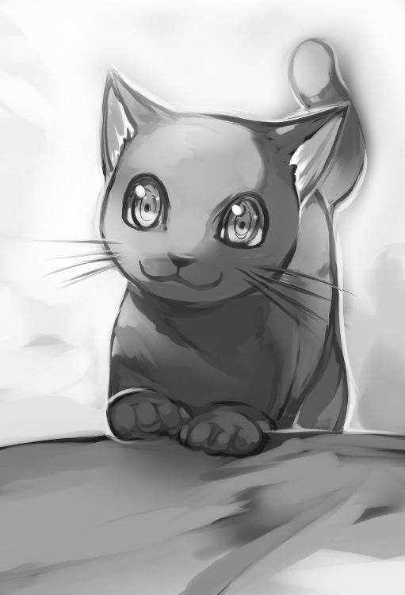
なんか変な緊張感が漂うが、俺は構わず、スプーンで柔らかい芋を上から潰していく。
その潰し柔らかくした芋を口へ運んで食べた。ホクホク。視線が気になるけど、この芋汁、美味しいじゃん、と、舌鼓を打ちながら、とろみがある芋と白い葉っぱを胃の中へ運んだ。黒猫も熱い汁なのに舌を上手く使いながら食べている。
猫なのに猫舌じゃないようだ。
俺たちの食べ具合を見ていた禿げた旦那さんが白い歯を見せるように口を動かす。
「旅人さん、食事は大丈夫そうですね。それとシータが無愛想で、すいません」
「いえいえ、綺麗な方ですね」
シータと呼ばれた奥さん、そこで初めて表情を動かした。
ぎこちなくニコッと笑っている。その何とも言えない顔の美しさと外面の艶に全身からゾクッと鳥肌が立つような感覚を得た。
耳元にある紫花の髪飾り姿が、あまりにも人間的じゃないからだ。
そう、まるで人形のような......。
「旅の方、この魔霧に迷い込む前、どちらへと向かう予定だったのですか？」
「......ヘカトレイルですよ」
「それでしたら、ここから南西ですね。霧で分かり難いですが、西にいけば街道へ出られる筈ですよ」
「そうですか。それは良かった」
気軽に返事をしていると、旦那さんがシータさんに目配せした。すると、シータさんはすぅっと立ち上がり黙った状態で部屋の奥、台所の先にある別の部屋へ行ってしまう。
「おや、シータはもう満腹のようです。では、わたしも腹を満たしたので奥へ戻りますね。残りの芋鍋、ご自由に食べてください」
「はい。ありがたく戴きます」
奥へ向かう旦那さんの後ろ姿を見ながら適当に芋を食べ続けた。
この葉っぱ、白いけど大丈夫なのかなぁ。微妙に舌がピリッとするけど。
まぁ、久々のちゃんとした飯だし食っとくか。がっつくように鍋に残った物を食べていく。さて、ユイの様子でも見に行くか。腹を満たした俺は黒猫を肩に乗せて倉庫部屋へ戻る。ユイも食べ終わって休んでいるところだった。
「......食べたようだな。元気になって良かった」
ずいぶんと元気そうに見える。良かった良かった。
「......お前といるとわたしは......」
苦笑しながら口を開く。
「気にすんなよ。今のお前は俺の恋人だ。それより、食事が終わったのなら、その台を持っていくよ」
「あ、ありがと」
黒猫は俺の肩から離れユイが心配なのか寝ている傍に寄り添う。
小さい顔をユイの手へ向けて指や手甲を舐めていた。そういやユイから礼を言われたな、やっと素直になったようだ......さて、可愛いお礼顔も見れたことだし片付けるか。
食器を乗せた台を持ち隣の小屋の台所へと持っていく。台所には大きい調理台の上にまな板、粉袋、油瓶、野菜、芋などが入った空き樽が積まれるように置いてある。横下に水瓶、土窯が土台のように設置され、重そうな鉄釜も置かれてあった。近くの壁には数種類のフライパンが立てかけてある。大きい水瓶と桶のところに食器を置けばいいのかな......と、食器を置く場所に迷っているそぶりを見せながら奥の部屋の様子を探って耳をそばだてると、本当に声が漏れてきた。
「マスター、魔力残存量が三十％を切りました。活動限界ギリギリです」
「わかった。今、補給してやろう」
間が空き......。
「......どうだ？」
「魔力残存量四十％回復完了......魔力残存量......五十五％回復完了」
「くっ、ここまでだ。わたしの魔力では、これが限界だな......」
「マスター、すいません」
なんか、魔術を行使しているようだけど。
「なあに、魔力回復ポーションを飲んでおくから平気だ。だが、わたしもまだまだ未熟だ。魔導人形の魔導技術に似た技術とはいえ、自我を促す精神を〝吸霊の蠱祖〟と同調させるのにこんなに苦労するとは」
「いいえ、マスターは天才です。わたしを作り、あのサビードさえ手玉に取っています」
「魔族程度に後れはとらんよ。氏族から追放されたとはいえ、わたしは魔印の持ち主。ギュスターブ家の長男だ。我が家に代々伝わるスキルの継承者でもある。秘術系スキル魔細工腕を持つ者は少ない」
「はい。マスターのスキルは他の追随を許しません」
「そうだな。一族でも妹ぐらいだろう。魔導人形を作るのに必要な魔鉱鋳造のスキルを持つ者なら多数存在するだろうけどな」
「マスターのご家族ですか？ 会ったことがありません」
「あぁ、昔のことだ。今はお前が居れば何もいらない」
「はい。マスター。嬉しいです」
イチャイチャしているようだ。でも、魔族と繋がりだと？
「しかし、わたしが魔導人形を作る専門家であったならば、もっとお前に応用が出来たかもしれん......」
「ですが、ウォーガノフなど所詮は鉄屑。わたしと違い主人が常に側に居なければなりませんし、与えられた事しかできません」
「それはそうだが、シータの強度面や魔素転換率がな。古竜の鱗にベルバキュのコアとキメラの油にラガゼイルの粉末があれば......」
「はい。確かに、それらがあれば、八十五％出力が上昇します」
「まぁ、それらの品を集めるのは時間が掛かる。今はすぐに手に入る予定の二つの〝魂〟で我慢しよう。あれを組み込めばシータの魔素許容量は格段に跳ね上がる。楽しみだ」
「魂の贄である、あの青年は、わたしをずっと見ていましたね」
「そうだな。あの視線は許せん。だが、シータは美人だからなぁ。若い男ならば仕方があるまいて」
何だと......。
「はい」
「だが、その青年と若い娘は大事な贄であり、お前の〝吸霊の蠱祖〟に力を与えてくれる者たちでもある。あの二つの魂を安全にここへと移行させるには健全体のままである必要がある。なので麻痺させるのが一番だ。今頃は......薬が効いて倒れているだろう」
「はい。マスター」
うはっ、吸霊の蠱祖？ 体の麻痺？ またまた危険なワードが......。
今度は魔術師かよヤバイ。俺たちは鴨がネギを背負って来る状態か？
どうりでこんな辺鄙なとこに家があった訳だ。早く退散しよう。
あ、ユイが......急いで隣の納屋へ向かう。
「どうしたの？ そんな顔して」
「しまった。食事はもう食っちゃったよな、あの男が、ここの家主が危険な魔術師だったらしい。魂とか贄とか俺たちに薬を盛って殺そうと話していたんだ。急いで逃げるぞ、動けるか？」
「なっ、では......あっ、腕が痺れて......」
もう痺れ始めたか。
「ロロ、念の為、外へ出ていつでも戦えるように準備しておけ」
「にゃっ」
黒猫は短く返事をすると、勢いよく外に飛び出していく。
「ぐっ、す、すまない。痺れが......」
もっと用心すべきだった。
「もう、薬が効いてきたか」
「......お前は、平気なの？ わたしは口は動く......でも、腕も震えて足にも力が入らない。感覚はあるのにおかしい......これは特殊な痺れ薬か......」
「俺は平気だ。食事を運んだばっかりに......済まん」
「今さらしょうがない」
「分かった。とりあえずここを出よう。運ぶぞ」
ユイを抱きかかえた。
「きゃっ」
「今は恋人だろ？ 助けてやる。気にするな」
ユイは黙ったまま頷いてる。
「おや......何処へ行かれるのですか？」
げっ、もうバレた。誤魔化す。
「あっ、ちょっと、ユイと夜空を見に風に当たりたいなぁ～、なんて......」
「見え透いた嘘を、このまま帰す訳には行かないのだよ。シータ。出口を塞げ」
「はい。マスター」
やはり来たか。シータが倉庫部屋の出口を塞ぐように立ちはだかる。
「ロロッ」
俺の合図の声を聞いた黒猫が、両前足を上げて、シータへ飛び掛かった。
「――なっ、なんだとッ」
後ろでスキンヘッドのおっさんが叫んでるが、今は無視。
その隙にユイを抱えて、外へ飛び出す。ポポブムが居る場所まで走った。
ポポブムの鞍へ多少乱暴にユイを乗せてやる。
「このまま先に走れっ」
と、叫びポポブムの尻を叩こうとしたとき、
「待って」
ユイが呼び止めてくる。彼女は俺が心配？ だが、急がないと。
「大丈夫。俺を信じろ。お前を死なせはしない。森の中も心配だが、まずはあの夫婦だ。このポポブムなら速度が出るし逃げられる。あの夫婦を殺ったら、すぐに呼び戻すから」
「待て、絶対に死ぬな。わたしがお前を殺すのだから――」
そのユイの話を途中で無視する形で、ポポブムの尻を叩く。
彼女を鞍上に乗せた状態のポポブムは法螺貝声を響かせながら、闇の中へ消えていく。
遠くにはいかないだろう......後で、呼べば戻ってくる筈。
さて、俺は戻りますか。ロロが戦っているだろう小屋へ足を向けた。
短い坂を駆け上がり小屋前に戻ると、黒猫とシータが激しい戦いを繰り広げている最中だった。シータの上着は破れ肩口が露になり右肩に切り傷を負い、黒血を流している。しかし、そんな怪我など微塵も感じさせない素早い動きを見せていた。
その応対している姿を見て、一瞬釘付けとなる。シータの腕先が変形して剣のように成っていた。両腕の先端にある剣腕と黒猫の触手剣が激しく衝突。
硬質の音を立て衝突、弾き、また衝突。お互いに牽制しシータの黒髪に飾られている紫の花が舞うように揺れていた。そこで黒猫は神獣の片鱗を見せる。
力強い四肢の躍動を見せた四本の足爪が地面を掻き土煙をあげながら前進。
強烈な爪薙ぎがシータの足を削り膝上が大きく切り裂かれていた。
だが、切り裂かれたシータは痛みを感じないらしく、悲鳴も上げずに自らの剣腕を横から薙ぎ払うように素早く反撃していた。黒猫はその薙ぎ払いを器用に屈むように避けてから、逃げるように走り出す。シータは逃げる黒猫を追い掛ける。
小屋から僅かに漏れ出る明かりでそれらの戦いが見えていたが、小屋出口側付近から広い庭の暗い場所へ戦いが移行すると、黒猫とシータの姿は見えなくなり、剣と骨剣がぶつかる硬質音だけが聞こえてくるようになった。
急ぎ〈夜目〉を発動、視界を確保する。
黒猫とシータの戦いは互角のようだ。そこに、
「......お前はいったい、何なのだ？」
禿男は喋りながら手に松明を持って近寄ってくる。
「いや、何なのだと、言われてもな......」
「お前は、特殊薬が大量に入った食事を飲み食った筈だ。それが全く効かずに動けている......お前は人族ではないのか？」
「さぁな？」
まぁ、そうなんだけど。
「それに何だっ、あの黒き獣はっ、シータを、我が妻を傷つけやがって」
何だ？ あのローブの禿男......表情がだんだんと変わっていく。
頭に血潮が昇り過ぎた？ 更に怒らせてみるか。
「シータとはあの人形のことか？ それを妻とか......」
ローブを着た禿男は俺の挑発めいた言葉を聞くと、ぷちっと頭の血管が切れたように歪な表情へ変質させる。額のマークだけが変わらず目立っているが、僅かに頭を斜に傾けニカッと歯列をむき出し白みを帯びた狂気の顔となった。
「はぁ？ 何を言っているんだ!? シータは、妻は、けっして、人形などではない！」
唾を飛ばすように口調は荒い。
「そうかよ。どうみても、シータってのは、人族ではないな」
「ふざけおって――」
ローブを着た禿男は怒りを込めた口調で呟くと、手に握る松明を近くの庭へ投げ込み、暗闇の庭に僅かな光源を作り出した。
下から光源が禿男の顎下を不気味に照らす最中、彼は右手を胸前に翳す。
翳した手の指には、髑髏指輪が嵌められていた。その髑髏指輪へ左手の指が触れる。
その瞬間――髑髏の眼窩から黒と赤の火が灯り点滅を始めた。
点滅した眼窩から同じ色の糸のような魔力線が宙へ飛び出すと、魔力線が宙に弧を描いて地面の上に着地。糸と繋がった地面から煮立った沸騰音と共に黒と赤の煙がもくもくと立ち昇る。その煙の中からぬっと姿を現したのは、赤骨と黒骨のスケルトンだった。
骨騎士を召喚!? スケルトンの構造は厚太い骨が連なり形成されているので、戦士や騎士のような姿にも見える。その証拠に、両手に黒光りする長剣と方盾を持っていた。
その二体の骨騎士は別個に意識があるのか、召喚した禿男を守るように骨を軋ませながら足並みを揃えて動く。俺は魔察眼で禿げた男を観察。彼の指輪から伸びている魔力の線がその骨騎士たちと繋がっているのを確認した。その髑髏指輪以外にも他の指に魔力を宿した指輪を嵌めているので、注意が必要かもしれない。
俺が観察を続けていると、骨騎士の背後から威勢の良い声が響く。
「......骨騎士たちよ、わたしを守るのだっ、そして、隙を見て攻撃しろ！ 魂は得られないかもしれないが構わない！」
瞋恚の火に心焦がしたように禿男は威勢の良い調子で指示を出すと、ローブをはためかせながら骨騎士の前に出た。
手を俺へ向けて指を翳している。ん、また手に魔力を集めている？
獣を形どった指輪の口から、突然、火球が生まれでた。
――急かよ。急いで横へ転がり飛来してきた火球を避ける。火球は俺がいた土の地面に直撃、爆ぜた。暗闇が一気に明るくなる。その瞬間――今度は違う指輪から魔力の刃？ が飛んできた。急ぎその魔力刃へ向けて黒槍を上から叩きつける。飛んできた魔力の刃は黒槍の衝撃に負けて空中で分断――風刃は左右に散った。左右の地面からは剣で切った跡が残り砂埃が舞う。イエスッ。魔力の刃をたたっ斬ってやった。
「なんだと!? その素早い身のこなしにこの闇夜で、風刃を見えるように斬るとは......お前、やはり只者ではないな。ギルドの差し金か？」
風刃なのか。夜でも昼でも魔察眼だと光って見えるからな。それにギルドとは何だ？
「......いや、ただの旅人だが」
心に浮かんだ疑問とは別に、普通に答えていた。
「ふん、まぁいい――」
また火球かよ。そうして、飛んでくる火球や風刃を避け続ける。こうも連続で魔法を撃たれると隙がない。キリがないぞ。と風の刃を叩き落としてからワザと動きを止めた。
こうなったら〈脳脊魔速〉を使うか？ 俺が動きを止めるのを見た禿男は好機とみたのか、口角を上げニヤッと嗤い、違う指輪を翳す。その刹那ピカッと眩しい雷光と共に心臓が凍りつくような激しい痛覚が全身を駆け抜けていた。肉の焼ける音と匂いが耳と鼻を刺激し煙も立ち込める。傷痕が黒条になって腹や胸へ延びていた。熱いしイテェェッ。
野郎、今度は稲妻か。速すぎるだろ。あの指輪群、全部魔法の指輪らしい。
詠唱なしは便利すぎだ。まさか自分の肉が焼ける匂いを嗅ぐとは......ぷすぷすと音を立て、革服の一部が燃えかすとなり黒く変色した上半身の一部が露になる。
けど、そんな見た目とは違い一瞬で火傷のような症状は回復していた。
師匠から貰った黒虎革のジャケットだけ無傷。
「やった、やった、やった。真っ黒だ」
ローブを着た禿男は左右の足を交互にあげて踊るように喜んでいる。
全体的に白みを帯びた顔の唇が異常に赤くなり口角も引き上がっていた。
まるで、禿のマッド・ピエロだな。だが、そんな顔も今の内だ。前傾姿勢で、突貫した――俺の迅速なる行動にローブ男は表情を崩し、
「ひぃぃ」
怯える声ごと、構わず一撃で仕留めてやる。そう意気込み黒槍を前方へ突出させたが――金属音が響く。黒骨騎士が操る方盾に防がれていた。
その様子を見て、禿男はまさにピエロのごとく表情を変えた。
「――おぉ、よくやったっ、骨騎士！」
と、不気味に笑みを浮かべながら唾を飛ばし掌を返す態度を取る。
異常な高テンションの男に、俺も笑みを浮かべ返す。中々の反応速度だと――脳裏に褒め言葉を浮かべながら、次の行動へ移っていた。最初に〈導想魔手〉を発動。
歪な魔力の手で拳を作り赤骨騎士を直接殴りつける。
赤骨騎士は突然の打撃により盾を構えることが出来ずに後退。
同時に左手から〈鎖〉を発動――最初に見事な反応速度で、俺の突槍を防いだ黒骨騎士へ細いワイヤーのような〈鎖〉を向かわせた。
弾丸を超える速度で、黒骨騎士の顎骨を捉え穿ち、顎骨の一部を粉砕。そのまま生きた大蛇がとぐろを巻くように〈鎖〉の軌道を上方へ変化させて、黒骨騎士の頭を貫き頭蓋から、下方へ〈鎖〉を操作し、首へ向かわせ、背骨から次々と骨を破壊していく。
一方で、〈導想魔手〉の透明な魔力巨拳の一撃を喰らった赤骨騎士は、胸板に巨大な拳痕を見せながら片膝を地面に突けてダウンしている。
拳痕が刻まれた赤骨騎士は力なく立ち上がり、盾を構えながら近寄ってきた。
そんな赤骨騎士へククリ剣を差し向ける。魔力の拳で直接殴る方が強いと思いながらも〈導想魔手〉に握らせたククリ剣による乱雑な剣の攻撃を赤骨騎士の頭上から浴びせ続けた。赤骨騎士は盾を上部に構え防戦一方だ。その防御一辺倒になった瞬間を見逃さない。
空いた下半身へ黒槍の〈刺突〉を撃ち放った。最初に太い足骨を螺旋の黒刃が突き抜け、足を破壊。次に股骨を破壊し、腰骨から胸骨へ順繰りに黒槍の穂先で破壊していく。
赤骨騎士は穿孔を浴びて一気に瓦解。膝が抜けるように崩れた。更に、黒骨騎士を破壊した鎖を赤骨騎士の背後へ回し、赤骨の後頭部を突き抜けるように鎖を操作。
ククリ剣も合わさり、槍、鎖、三種同時攻撃で赤骨騎士の骨々を一つ一つ潰すように連撃を繰り出した。骨標本を数人がかりで潰し壊したように赤骨騎士はバラバラに砕け散る。
禿男は僅か数秒の間に骨騎士たちが粉砕されたのを見て、予想外だったらしく怯えた声よりも、唖然とした表情を浮かべて歯が震えていた。あの顔を、ぶちかます！
そう決意しながら禿男へ向けて走った。左肩を前に突き出し、黒槍を握る右腕の脇を閉めてショルダータックルをするような構えからの、突貫。
「ひぃぁ」
ローブを着た禿男は言葉にならない悲鳴をあげながらも指輪を翳し、反撃の火球を飛ばしてきた。動揺しながらも反撃とは、やはり優れた魔術師の反応だろう。
俺は素直に尊敬しながら、その向かってくる火球へ肩から突入するかのように前進し、火球のど真ん中へ向けて黒槍を突き出す〈刺突〉を放つ――火球を真芯から破壊するように吹き飛ばした。
ローブを着た禿男からは火球の中から突然、俺の左肩と黒槍が現れたように見えたかもしれない――そんなことを考えながらこれで、止めだ！ と、もう一度、強く地を踏み込み、禿男の胸へ向けて〈刺突〉を放つ。その瞬間、「――マスターッ」と、横から飛び出してきたシータが禿男を庇った。ぐにゅりと肉が裂ける音が響き、彼女の背中ごと、禿男の胸を貫いていく。二人は串刺しとなり糸の切れた人形のように倒れた。
「っ、マス、タ、ゾル......」
「ぐぇ、し、しっ、シータなのか......ぐふぉ」
ゾルは喋ろうとしているが口から溢れる血で口が塞がれる。
「......そうよ。ゾル。あ、あなた......もういいのよ」
その時、シータの耳上に飾られていた紫の花が地に落ちた。
「これ、スミレの花ね？」
「グェッ、そ、そうだ。紫の花。え、も、もしや、シータ、記憶が？」
血を吐き捨てたゾルは目を見開き妻であるシータの顔を見る。
「そうね......ふふ、ベイカラ神の気紛れかしら？」
「君だ。君なんだな......シータ。紫の花のように色褪せない美しさだ......」
「ゾルはいつもそう言って、スミレの花をくれたわね......」
まじか？ 回り込んでシータの顔を見る。すると、本当に人形顔だったシータの顔が、美しい人族女性の顔へ変貌していた......おぉ、吃驚だ。シータは胸が黒槍に貫かれた状態なのに一切の苦しみの表情を見せずに笑みを浮かべ仰向けになっている夫のゾルへ慈愛の目を向けていた。彼女の胸からは黒血が止め処なく溢れる。その血が貫いている槍を伝いゾルの赤く染まっているローブを黒色へ濁らせた。
ついには慈愛の目からも黒い血が流れ落ちる。
シータの黒涙とゾルの涙が頬で交ざり合い濃厚な黒涙となってから頬から地へ染み渡り、傍に落ちていたスミレの紫花をも黒く染め上げてしまった。
「......シータ。会いたかった......ぐ」
ゾルの口から、また血が溢れる。
「ゾルッ」
シータはゾルの言葉に瞳を揺らす。自らの体を夫へ近付けようと槍が刺さった胸をずにゅりと音を出しながら、更に押し出し、互いの血を重ねるように抱き締めていた。
ゾルはシータに抱き締められ、憑き物が落ちたように狂気の表情を穏やかなものへ変化させていく。ゾルの顔が正気に？ 苦しい顔には変わらないが、精悍な男の顔に......。
「ゾル。ハイム川の川沿いを散歩したのは覚えている？」
「あぁ......良く覚えているとも」
「ふふ、私もよ......最期に会えてよかった」
シータは力なくガクッと首を落とし目を瞑る。ゾルは口から血を吐き、瞬きを繰り返しながら、徐々に優しい表情を取り戻していた。そして、温和な顔で、改めて俺に対して視線を送ってくる。彼は、俺がトドメを刺さず見守っていたことを察したらしい。
「シータ――旅の方......あり......が」
お礼の言葉を綴り......途中で瞳孔が開いたまま息を引き取っていた......。
黒猫も、彼の気持ちが分かるのか、不思議そうに紅い眼を向けていた。そして、とぼとぼと寂しさを感じさせる歩きで、俺の脛足に頬髭を擦りつけてくる。あっ、ユイ。足元でじゃれる黒猫を放置してユイと離れた場所へ戻った。口笛を吹いてポポブムを探す。何回も口笛を吹いたところで、法螺貝の音が響く。ブボブボッと鼻息を荒くしながらポポブムが戻ってきてくれた。
「ユイ！ 大丈夫か？」
「......大丈夫。体は痺れて動かないけど......貴方は大丈夫だったのよね」
「ん？ 俺のことを心配している？」
「馬鹿......なわけないでしょうっ、わたしが貴方を殺すのよ？」
ま～た、そんなこと言っているし。お仕置きだべぇっと、お尻もみもみの刑に処する。
「きゃぅ、へっ、へんたい！」
「ははは、そんなこと話していると、お嫁にいけない体にしちゃうぞ」
彼女は顔を真っ赤にしていた。
「ユイ、体を抱えるぞ――」
「あっん。ばかっ」
戦闘後の特異な高ぶり現象なのかユイのお尻をもみもみと繰り返して揉んでしまった。
気を取り直して彼女のご機嫌を伺う。
「そういや、ユイの大事な刀。ここに置きっぱなしだった。治った時のために大事にしないとな」
「うん......」
「そんじゃ、体を休めておけ、庭に転がっている死体を片付ける」
「わかった」
俺はユイから離れ庭へ向かい、夫婦の死体から金目の物とゾルの指に嵌めていた指輪群を全て抜き取った。その中に水属性の物は一個もないが、闇属性と思われる髑髏の指輪はあった。骨騎士、骨戦士を召喚していた指輪だ。この指輪は今度試そう。
そうして、地面に穴を掘りゾルとシータの簡易な墓を作ってあげた。
墓標に他の指輪を置いて黒血に染まった紫の花を手向けにする。
俺を殺そうとした相手だが最後の二人の様子を見て少し心に響いたからだ。
膝を折り、日本式に拝んでおく......。
ユイはゾルとシータの話を聞くと少し涙を浮かべていた。
殺し屋の癖に夫婦の愛の絆に心を打たれたらしい。やはりまだ女の子なんだと認識。
そんな可愛らしい一面を見せたユイはゾルの不可思議な麻痺薬のせいで身体が動かない。最初に彼女を救ったように気に入った女なので助けるとして......何か薬がないかとゾルの家を調べていく。奥の部屋はゾルとシータの実験室のような場所だった。
瓶、液体、実験道具、本棚、見たことのない魔法炉、出術台、机、疑似科学の道具類が沢山並ぶ部屋。ユイ用のポーションを幾つか回収。調べていると、本棚から古びた魔法書物を見つけた。机の上には手記もある。机の下には小さい宝箱も発見。中身は金貨。
その全てを袋ごと回収した。魔力を感じた書物と手記らしき物は後々調べるかな。と、部屋から出てポポブムの鞍袋へ直接仕舞った。
次の日の朝。上半身裸になり黒槍やククリ剣を手に持ち表の庭へ移動。
そこで軽い体操から槍武術訓練を一通り行い最後に黒槍を地面に叩きつけるような強撃で訓練を終了させる。ポポブムにも朝食をあげ、ユイが寝る倉庫部屋へ戻ると、彼女は無理に体を動かそうと上半身を震わせながら必死な顔を浮かべていた。
「ユイ、少しは動かせるようになったのか？」
彼女は、俺の言葉を聞いて一瞬、嬉しそうな顔を浮かべる。
「......あっ！ あぁ、少しだけな。だが、この通り......」
「流石に一日だけじゃ、そこまでの回復は期待できないか」
そう喋りながら、持っていた黒槍を壁に立て掛ける。
さて、風呂に入るかなと部屋にある桶を探しにいく。
「お前......裸？」
「あぁ、訓練したからな、おっ、あったあった......」
大きい桶は隅に立て掛けてあった。それを寝台横の床へ運ぶ。
「ん、何だ？」
「風呂だよ。風呂。汗掻いたしな」
軽く説明しながら、生活魔法の水で桶を掃除していく。
「風呂か......」
風呂が珍しい訳じゃないだろうにと、桶の掃除を終えてから、お湯を桶に溜めて荷を置いてから革ズボンを脱ぐ。真っ裸になった。そのまま足からお湯へ浸かっていく。
「ふぅ......」
――気持ち良い。顔を湯水で洗い頭からざぶんっと湯をかける。ユイへ背中を見せながら荷物からギュザ草を出す。ゴルディーバでも使っていた草の石鹸だ。最初に顔から泡立て指で口も洗い手を使い体の隅々まで洗っていく。黒猫がパシャパシャと水面を叩き遊んでいた。その黒猫の首根っこを掴み持ち上げながら胴体の毛並みを伸ばすように洗う。黒猫は嬉しそうに鳴くと、洗われているのが分かっているようで大人しくなる。目を瞑り黙って俺に洗われている姿は可愛い。
綺麗綺麗にしてあげてから最後に「完了」と、いうと、黒猫はお湯の中へ飛び込み、元気よく、脚を使い、じゃぶじゃぶと猫掻き泳ぎを披露してくれた。
「それは石鹸か」
「違うが似たようなもんだな。汚れを落としてくれるぞ――」
俺は彼女に喋りかけながら、桶から外に出て、裸の状態でユイへ近付いていく。
「ん、なぜ、裸で近付いてくる」
「そりゃ、ユイも風呂に入るからだ」
「えっ」
顔をユイへ向け鼻孔を動かし匂いを嗅ぐ。
「少し臭いぞ？ ずっと汚れ落としてないだろ」
「うっ、そうだが、いやよ」
「問答無用」
「ヒッ、イ、イヤアァァァ――」
ユイは絶叫した。無理矢理彼女の上着を脱がせていく。
鎖帷子系の黒装束を脱がしてスッポンポンにしてやった。
「ヘッヘンタイ」
「うっさい。否定はしないが、さっ持ち上げるぞ」
彼女の軽い身体を持ち上げお姫様抱っこを行う。そのまま桶へ運び湯へ入れてあげた。
「身体が温かいのは分かるか？ 麻痺に効くかも知れないぞ」
「イツカ、コロス......」
「まぁまぁ、いいから体を洗うぞ」
桶の縁に革布を置いてユイの頭を固定。安定させる。そのままギュザ草を使い、ユイの体を全部を洗ってあげた。ふぅ......若干、興奮しちまった。股間がモッコス状態。
「おぃ、その一物、怪物はなんだッ」
「ん、こりゃ、男の大事な象徴だが？」
ハッキリと股間を凝視しているユイ。
「わたしを襲うのか」
「いやいや、それはない。嫌がる女を無理には抱かないよ。安心しろ」
「お前、興奮しているじゃないか......」
「こりゃ、生理現象という男の絶対正義という奴だ。ユイが綺麗だからしょうがない。おっぱいを揉んでいれば自然とそうなると神の摂理により決まっている」
「キッ、綺麗だと......それで襲わないというのか？」
彼女は俺の言葉に驚いたようだ。間をあけて俺を睨む。
「何だ？ 襲ってほしいのか？」
「断じて違うっ、というか顔を近付けるなぁぁぁ」
「うっさいなぁ、大丈夫だって。どっちにしろ動けないだろう？」
「何だとぉ、お前は一体何なのだ！」
「何だと言われてもな、あっ、そういや、名前教えてなかったな。名前は、シュウヤ・カガリ。お前の将来の夫であり恋人の名前だ」
「ふざけるなっ、何が夫で、恋人だっ、このっ、変態勃起野郎！」
あ～ぁ、おこだ。完全に怒っちゃったよ。ま、当然だろうけど。だけど、俺がここに居なきゃお前は死んでるぜ......とは言わなかった。嫌いなら嫌いになればいい。この女が気に入った。動けるぐらいまでは助けてあげよう。
「......あはは、ちげぇねぇ。俺は変態だ」
そう笑いながらユイを抱え持ち、「ばか、やめろ。変態」と口煩い中、革布で体を拭いてやり、俺が持っていた代えの革服を着せてあげてから、寝台へ優しく寝かせてあげた。そこでやっと、ユイは大人しくなったようで俺を睨むと、可愛くそっぽを向く。
そんなこんなで数週間後、彼女は身体を動かせるぐらいに回復。
動けない身体の時も毎日ちゃんとお風呂に入れてあげたので顔色も良く、肌に艶があり元気で笑顔も可愛い。今も庭でバーベキューで焼いた肉を美味しそうに食べている。
暫し小さい口へ肉が運ばれていく様子を眺めていた。さやさや吹く風に揺れる前髪から綺麗な黒瞳を見ていると、自然に彼女は笑顔を返してくれる。
毎日親身に世話をしていたからかユイも気が緩んだようで、最初の反抗的な態度から一転していた。そして、殺し屋とターゲットの関係を互いに忘れるように、彼女のお父さんが病気で苦しんでいることや彼女の双眸に宿る〈ベイカラの瞳〉または〈ベイカラの目〉と呼ばれるエクストラスキルについて教えて貰う。
俺は師匠との修行の思い出を彼女に話をして仲良くなっていた。
ま、それだけじゃなくユイの体のために風呂以外でも、色々とおっぱい研究会＆委員会の百五十八手の技を使い揉み揉みを頑張ったからな。
そんなユイとの会話も楽しくなってきたけど彼女が完治すれば恋人ごっこの生活は終わり敵対関係に戻る。しかし、正直、好みの女なんだよなぁ。
だが......離れたくないけど離れないとな。俺にはやることがある。
確かゾルは西へ向かえば都市に出られるとか話をしていた。
明日出発するとして、一度ユイと話すか――ん？ 魔素の反応だ。
霧が広がる頭上から魔素の気配が漂ってきた。視界が悪いので判別できないが来たっ。
霧を突き抜けて地に降り立ったのは背中に骨翼を生やした人型の生物。
ボサボサな薄い黄色い髪に青白い肌を持ち異常に黒瞳の色彩が大きく、口の両端には吸血牙が見えている。両手は人間のような手だが、甲の部分の骨が突出して尖り武器の形状と化していた。しかし、そんな両手よりも鎧皮膚に目がいく。奇抜なデザインで両肩から線状に骨筒らしきモノが細い身体に密着するように伸びて腰と背中を包んでいる骨鎧。
背中から飛び出ている細かな骨が翼を形成し無数の骨棘が集まった刃にも見える。
下半身である二つの脚はガチョウのように鳥脚で細い。
その見るからに人間ではない不気味な者が、綿棒のような小さい唇を動かしていく。
「......おや、あの魔術師ではないな」
独特、ガラガラの声質だ。
「あぁ、お前は何だ？」
俺が質問するとユイは両手に刀を握り両目を変化させる。
ベイカラの瞳である死神の瞳を発動させていた。近くに居た黒猫もいつでも飛び掛かれる死角へ移動している。ユイと黒猫の行動を把握しながら黒槍を握り自然体の態度を取った。いつでも戦いへ移行できる体勢だ。
「その女も容姿が違うな？ ゾル・ギュスターブはどうしたのだ？」
黒目鳥は俺の質問に答える気がないらしい、が、
「それよりも質問に答えろ。お前は誰だっ？」
そう強く尋ねながらこの黒目鳥の男を探ろうと、魔察眼や掌握察を何回も細かく発動。
黒目鳥は誤魔化すように、
「さぁな――」
と、語った瞬間、両手を腰部位の骨剣の柄に当てる。
そのまま素早く骨剣を抜いて斬り掛かってきた。そこに、ユイが即座に飛び出して黒目鳥と応戦――横合いから回し斬るように自ら横回転を行い、その回転力を魔刀に乗せて放つ技を繰り出していた。ユイの魔刀と黒目鳥の骨剣が衝突。キィンと金属の不協和音を鳴り響かせながら、反対の手に持った剣同士の刃をまたも衝突させていた。
互いの二剣を扱う技術は高い。
返す骨剣と返す魔刀が二人の眼前でクロスするように再度、激しくぶつかり合う。
またもや硬質音を響かせた。ユイは制動も無く連続して右手、左手の一太刀、二太刀、と魔刀を振るうが黒目鳥も左右の腕に握った二本の骨剣でユイの刀撃を正確に防ぐ。
骨剣と魔刀が噛み合い弾く硬質な音がリズム良く二回聞こえると、キリがないと納得したのか、互いに距離を取り間合いを保った。
「人族の女にしてはやるじゃねぇか。だが――」
その言葉終わりに黒目鳥は、ユイの油断を誘うように骨剣の構えを解く。と同時に背中に生えている骨型の翼を空へ飛び立つように左右へ広げる。
その骨翼により風を利用したのか一気に速度を上げてユイへと向かう黒目鳥。
ユイの頸を薙ぐように骨剣が横から振るわれた。彼女はその高速で迫る骨剣刃を、なんとか左右の手に握る魔刀で弾いているが、完全に後手に回ってしまう。黒目鳥は好機と捉えたのか、背中の広がった骨翼を扇子が畳まれるような機動で先が尖る槍型の骨尾へ変形させた。その骨尾を下から弧を描くようにユイの足へ伸ばし、ユイの足甲を貫く。
「痛ッ――」
突き刺さった足防具は割れ、綺麗な白桃色の素足を晒し、刺さった部位から血が溢れ出す。ユイは地面に縫われて固定され完全に隙だらけだ。黒目鳥はそんな動けない隙だらけの彼女を見て、嗤い、細い手に握られた骨剣で動けないユイを突き刺そうと、
「これで、とど――」
――させるかよッ！ 俺は魔闘脚で地面を蹴り前方へ駆ける。素早く黒目鳥へ間合いを詰めると、横合いから黒槍の連撃を黒目長の脇腹へ撃ち放つ。腸を抉り取ってやった。
黒目鳥は衝撃で横へ吹っ飛びよろけながら「グァッ」と、くぐもった言葉を発し細い脚で地面を捉えて何とか踏ん張る。そこに黒猫の首元から伸びている触手が黒目鳥の細い鳥足を貫いていた。よくやった。と考えながら、黒猫の触手から飛び出ている象牙色の骨剣攻撃を確認。そのまま、
「好きな女に手を出したことを後悔するがいい」
と、臭い台詞を吐くと同時に左手首の鎖の因子マークから〈鎖〉を黒目鳥の脳天へ向けて射出。続けて〈脳脊魔速〉も発動させる。
身体速度が加速する――だが、時間がスローモーションに掛かったように遅く感じた。
張り詰めたワイヤーの如く一直線に伸びた〈鎖〉の先端が、よろめく黒目鳥の脳天に着弾する前に、切り札の加速効果により黒目鳥との間合いを詰めていた俺は、至近距離から左足で地面を踏み込み、体幹を支える腰を捻り黒槍を握る右手も捻り突き出す〈刺突〉を黒目鳥の胴体にぶち込んでいた――銀を帯びた黒刃が胴体を抉り取ると共に、〈鎖〉が黒目鳥の頭を貫くが、爆発的加速中の〈脳脊魔速〉が切れるまで何回も、何回も黒槍を持つ右腕その物がドリル、パイルバンカーを超えて稲妻にでもなったごとく黒槍の〈刺突〉を連続で黒目鳥の形が無くなるまで撃ち放っていく。黒目鳥の胸骨鎧は無限雷撃を感じさせる黒槍撃により粉砕。残骸の骨粉末の塵が宙に舞う。最後に黒槍を持つ右手を手元に戻し、両手持ちへ移行しながら強風を孕む勢いで周りに漂う骨塵を黒槍で払い退けた。
そして、ユイの方へ振り返る。
「――ユイ、大丈夫か？」
彼女は怪我した足よりも今の出来事に唖然としていたようだ。
小さい唇を広げて可愛らしい豆鉄砲顔をまた披露していた。
「ユイ？」
「あっ、あぁ、うん。大丈夫。それより助けてくれて、ありがと。また命を救われちゃったわね......きゃっ、痛い」
「ロロッ」
「あ、大丈夫だから。ふふ、ありがとね。ロロちゃん」
黒猫は小さい悲鳴をあげる彼女の足の傷を舐めていた。
ロロは心配していたらしい。というか、血を舐めているし......ユイは優しい表情を浮かべて血を舐めている黒猫の頭を、なでなでと労っている。
「ロロ、血を舐めるのはだめだ。むしろ俺が......」
ヴァンパイア系の性で、舐めたいとは言わず――自重した。
「え？」
ユイから、変な目で見られたが、急ぎ誤魔化す。
「いや、そうだ、薬。ポーション取ってくる」
「あ、うん」
取ってきたポーションを彼女の足傷へ振りかける。傷はすぐに塞がるが、一応、ポーションを彼女へ手渡す。ユイは飲んでいた。
「大丈夫そうだな。ポーションが沢山あるから良かったよ」
「でも、さっきのあの魔族......ここの家主だった魔術師と面識がある感じだった」
ユイは骨の残骸となっている黒目鳥の死骸らしきモノを魔族と呼んでいた。
その死骸を調べるが......何もなし。
「......死人に口なしだが荷物がない。骨剣があるだけだ」
「また違うのが襲ってこなければいいんだけど......」
「確かにその可能性はある。ここから、早々に退いた方がいいかもな」
「そうね......うん」
さっき言いかけたことを聞くか......。
「さっきの刀を扱う動き鋭かったな？ 体の方はもう、すっかり回復したんだろ？」
「えぇ、治ったわ......」
ユイは急に表情を強張らせていく。
「そうか......良かったような、良くないような気がするが......」
「なにが言いたいの？」
「お前が回復したのなら、明日の朝にでも俺はここを出ようかと」
「なっ......待ってよ、わたしとシュウヤは敵対関係に戻るの？」
「ユイ次第だ」
ユイは少し間をあけ、睫毛を震わせるように瞳を揺らし怒った表情を浮かべる。
「......わたしはシュウヤを殺さなければ、ならないのよっ、でも、殺したくないの！ それなのに、ずるい、ずるい、ずるい！」
彼女は珍しく口調を荒らげて、普段見せない年頃の女のような反応を示した。
はは、必死だけど可愛い顔だ......なら、誘ってみるか。
「......なぁ、それなら黒猫と一緒に旅をしないか？」
「......」
ユイは沈黙してしまった。もう少し粘るか。
「俺は黒猫の為に、ある秘宝を探しているんだ。その旅にユイ。お前が隣に居たらどんなに楽しいか......どうだ？ 一緒に来ないか？」
ユイは泣くような顔を浮かべて視線を逸らす。横顔だが涙が一粒、頬を伝うのが見えた。
あぁ、泣かしちゃった。
「......行きたい。でも、ごめんなさい。無理なの......組織が許さない。それにフローグマン家を守らないといけない。病に伏せっている父さんの為にも」
組織にフローグマンの家名を守るためか、父さんも心配なんだろうな。
仕方がない。ごめんなさいだもんな......残念だが、フラれちゃった。
告白して振られる思い出は数度あるが、どこの世界でも味わいたくないもんだ。
「......無理にとは、言わないよ」
多少強がって言っているが、俺、顔に出てるな。
「......シュウヤ」
ユイはそこで突然、着ている黒装束を脱いでいく。
「なっ......」
彼女は決意を固めるように装束を全て脱ぎ捨てていた。
「変に思わないで聞いてね......離れ離れになる前に、礼がしたいの。シュウヤに想い人が居るのは......知っている。けど、それでもいいから......わたしを抱いてほしい」
ユイは拳をかためながら話すが、その声は風に漂う小鳥の毛のように柔らかい。
だけど、俺に想い人？ 何を勘違いしているのか分からないが、俺にそんな女性は居ない。それより......ユイの裸体だ。いつみても綺麗。自然とその体を見つめてしまう。
首筋の肌は汗のせいか白く輝き、艶やかな鎖骨がくっきりと浮かぶ。
ほどよい大きさの双丘は有名な写真家も唸るほどの壮麗さだろう。
秘密の花園も細かく整えられた毛が実にユイらしい。筋肉質に細く締まった括れから続く白桃の太腿から伸びている細足は悩ましくスラリとして美しかった。
「......ユイ、綺麗だ。だが、俺には想い人なんていないよ？」
「え、でも、そのネックレス......」
「あぁ、これか。ずっと前に拾った奴だ......勘違いしたのか？ ――ほらっ」
可愛すぎたユイを引っ張り抱き締めてやる。柔らかい女の温もりを感じて、
「綺麗で、可愛い奴だ」
と、心から自然に溢れた言葉を口から漏らしていた。
俺も男だ。据え膳食わぬは男の恥。頂きモッコス。
直ぐに裸になりユイの括れた腰へ手を回す。もう一度強く抱き締めてあげた。
ユイは俺の胸に顔を埋めていたが顔を見上げ一瞬、目を潤ませて愁いを見せてから健気にその瞳を瞑っている。そのままユイの唇を奪った。
「ん、今日だけ、わたしは恋人......」
彼女の涙が頬にこぼれ落ち、俺の頬に当たる。
「あぁ......」
コケティッシュなユイの姿が目に焼き付く。互いに体を寄せ合い視線を通わせる。
小さい唇を貪り尽くし腕を絡めて欲望に身を任せたまま体を求め合った。
互いの心が融け合うように何時間も愛し愛される。黒猫が呆れるほど......か、どうかは分からないが、情事は夜を通りこし朝方まで続く。
朝起きると、情事を重ねた寝台の上には破瓜の血が残っていた。
彼女はまだ寝ている。昨日はあれだけやっちゃったからな。あっちの方のスタミナも無尽蔵だったとは......ユイのしどけない寝姿。艶々な肌を眺め綺麗な寝顔を確認する。女の残り香が感じられ抱いていた感触が甦る......。
ユイ、元気でな？ と、声をかけようとするが途中でやめた。俺自身、決心が揺らぎそうだったからだ。感情を抑えて羽根ペンでメッセージを羊皮紙に書く。
紙は書斎にあった日記帳を破ってきたものだ。書き終えてから師匠から貰った古代金貨五枚、ゾルが持っていた金の全部を、書いた手紙の側に置いておく。そして、後ろ髪を引かれそうな思いを、断ち切り......速やかに装備を整えてから小屋を出た。
彼女と生きる人生もあるかもしれないが、俺はやることがある。
黒猫との約束を守らなきゃいけない。
俺にとってこの世界に来てからの最初の約束だ。絶対にやり遂げてみせる。
その思いを胸に、ポポブムが休む場所へ移動。すると、ポポブムの鞍上に乗っていた約束を守る相手の黒猫が鞍袋を叩いていた。
「ンン、にゃっ、にゃ、にゃぁ～」。
膨れている袋の先端から飛び出している紙片が気になるのか？ 黒猫にとっては、いい遊び道具だけど、あのままじゃ猫爪でボロボロになっちまう。
「ロロ、それで遊んじゃダメだぞ」
これはゾルの手記と魔法書だ。さっきまで忘れていたから、丁度よかった。
「にゃ？ にゃ」
黒猫は『分かったニャ』と鳴いたか分からないが、じゃれるのを止めてトコトコと、鞍上からポポブムの後頭部へ歩いていった。
さぁて、旅をしながら、手に入れた手記と古い魔法書を読み、この髑髏の指輪も試さないとな――と、腕を上げて天に指輪を翳した瞬間。空を覆っていた霧が一瞬だけ左右に分かれて太陽の一条の陽射しが、翳した髑髏指輪に当たる。反射光を生み出した。
反射光は俺の左胸とゾルの墓を照らす。これは光の神様による旅の門出祝いかな？
これからも宜しくお願いします。
と、仏教スタイルで手を合わせて神様へお祈りをした。
その際に、胸元の隙間から光がチラつく。太陽光ではない。
鎖十字のマークが一瞬光った？ 更に、そのゾルの墓に居た二つの陽炎のような天道虫が、宙空を漂い螺旋しながら昇っていくのが一瞬......見えた気がした。
ま、旅へ向けての幸運の兆しと受け取ろう。
魔霧の森はまだまだ続くと思うが、城塞都市ヘカトレイルとやらへ向かおうか。
「ポポブム、進むぞ、ロロも準備はいいな？」
「プボプボッ」
「にゃぁ～」
黒猫の可愛い声を耳に感じながら坂を下っていく。
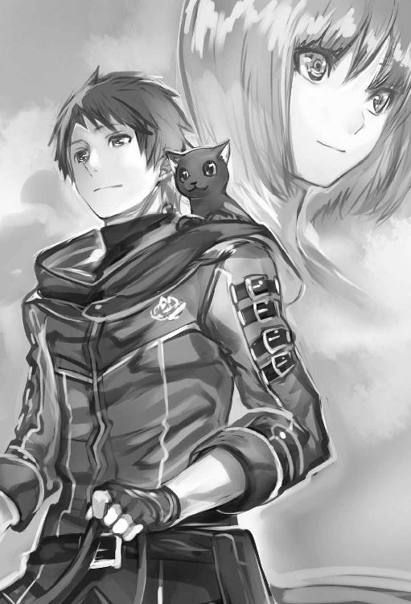
書籍版からの読者様、初めまして。健康です。
Ｗｅｂ版を読んで頂いている読者様、お世話になっております。
この「あとがきを書く作業」は、人生で初めてなので緊張しています。
それではまず、わたしの処女作でもある『槍使いと、黒猫。』を書き始めた経緯を少しお話したいと思います。一番最初の強い動機は、「小説家になろう」様にて、沢山の面白い作品を読み、読者として楽しませて頂いたのが切っ掛けです。わたしも『何か、面白いものを書いてみたい』と。
わたしは元々、動物のほかに映画、海外ドラマ、ゲーム、アニメ、歴史、漫画、小説、スポーツ全般が好きだったので、それらの素養を生かして、個人的に楽しめる奇想天外な異世界ファンタジーを生み出せないかと考えたのが出発点でした。そこから、楽しく、面白く、熱狂的であり、わくわく心躍る気持ちを『槍使いと、黒猫。』に乗せて、ずっと一人でこの作品を、長らく書き続けていきました。
しかし、当初はあくまで習作という気持ちであり、どこにも公開する予定はありませんでした。ただそれとは別に、そんな風に小説を書いているうちに、創作ってこんなにも楽しいことなのか、と感じるようになりまして。いわば、見る・読む側だけではなく「作る側の面白さ」に気付くことができたのです。
次第に書くことが新しい趣味となり、夢中になって書いているうちに、文章量も溜まっていきました。そして、ある切っ掛けが重なったことで、いっそネットに公開してみようと思い立ち、この『槍使いと、黒猫。』を「カクヨム」様と「小説家になろう」様にアップしたというのが、簡単な経緯です。
次は、この書籍版の話をしたいと思います。
この『槍猫』の１巻は、全体的にＷｅｂ版を圧縮した形で構成されていますが、どのエピソードを入れるか削るか、最初はズバッと素早く決めました。しかし、後々思い直し、いろんな部分を追加したり、台詞を削ったりさまざまに工夫しました。ここについては、編集者様の意見が有難かったです。担当様、感謝してます。
作者として気に入っている点は、最初の修行シーンと師匠との対決です。
実は当初、修行シーンは削る予定もあったのですが、大好きな映画『少林寺』とゲーム『ウィッチャー』のことが頭をよぎり、やはり残した方がいいかなと思い直しまして、結局、今回のように、要素として残す形になりました。いかがだったでしょうか？
本音を言えば、もっと事細かく色々な修行シーンを描写したい気持ちもあったのですが、それだけで１巻が終わってしまう、というのはちょっとまずいだろう、と。
とはいえ、最初のシュウヤが地下世界を放浪するパートには、はぐれドワーフのロアとのくだりも入ってますし、ロロディーヌとの出会いから、地上に出てゴルディーバ族と交流してレファと遊ぶところ、ゴルディーバの里およびラグレンとの別れのシーンなども入れられて、満足しています。
加筆したポイントですが、やはり一番最後の締めくくりの部分でしょうか。
少しですが、Ｗｅｂ版にはない部分が加わっております。Ｗｅｂ版からのファンの方にも、新鮮に感じて頂けるようでしたら、嬉しく思います。
続きまして、わたしの趣味の一つであり、創作活動に多大な影響を与えてくれた、偉大なる「大好きな映画たち」を、列記する形でご紹介させていただければと。（興味ない方は、どうもすみません......さらりと読み飛ばして頂ければ幸いです）。
まずは『夢』（「世界の黒澤」、黒澤明監督作品です）、続いて『ニュー・シネマ・パラダイス』、『海の上のピアニスト』（音楽が最高です）、『ショーシャンクの空に』（何回も見てます）、『ネバーエンディング・ストーリー』、『もののけ姫』、『風の谷のナウシカ』、『天空の城ラピュタ』、『パルプ・フィクション』、『ユージュアル・サスペクツ』、『レザボア・ドッグス』、『フィールド・オブ・ドリームス』、『インタビュー・ウィズ・ヴァンパイア』、『フォレスト・ガンプ／一期一会』、『ダンス・ウィズ・ウルブズ』、『グッド・ウィル・ハンティング／旅立ち』、『それでも夜は明ける』、『レインマン』、『グリーンマイル』、『レオン』（ジャン・レノ渋い）、『ニキータ』、『太陽の帝国』、『ミリオンダラー・ベイビー』、『レナードの朝』、『スター・ウォーズ』シリーズ、『マディソン郡の橋』、『ワンス・アポン・ア・タイム・イン・チャイナ』、『マスター・オブ・リアル・カンフー大地無限』（リー・リンチェイ、今はジェット・リーですが、最高のアクション俳優だと個人的に思っています）、『シザーハンズ』、『Ａ．Ｉ．』、『男たちの挽歌』、『ゴッド・ギャンブラー』、『ゴッドファーザー』、『コマンドー』（「連れを起こさないでくれ、死ぬほど疲れてる」、名言ですね）、『未知との遭遇』、『アダムス・ファミリー』、『ランボー』、『ＬＯＯＰＥＲ／ルーパー』、『フィフス・エレメント』、『コクーン』、『１２モンキーズ』、『マトリックス』、『オール・ユー・ニード・イズ・キル』、『アバウト・タイム～愛おしい時間について～』『バタフライ・エフェクト』、『バック・トゥ・ザ・フューチャー』、『グレムリン』、『ターミネーター』シリーズ、『タイムマシン』（２００２年の映画です）、『その男、凶暴につき』、『少林寺』、『少林寺三十六房』、『スターシップ・トゥルーパーズ』、『トゥルーマン・ショー』、『スターゲイト』（ＴＶシリーズも含める）、『スター・トレック』（ＴＶシリーズも含める）、『２００１年宇宙の旅』、『ベン・ハー』、『十戒』、『呪怨』、『サトラレ』、『敦煌』、『復活』、『バットマン』シリーズ、『スーパーマン』シリーズ、『アイアンマン』シリーズ、『アベンジャーズ』『サバイバル・オブ・ザ・デッド』、......いい加減にせいよ、と怒られそうですが、まだまだ多数あります。
このように、わたしはジャンルに隔たりなく感動ものからホラー作品まで色々な作品を見ます。好き嫌いはないですね。これからも多数の作品、海外ドラマ、アニメを含めて見続けていくでしょう。ちなみに最新の映画なら、ある方に連れて行って頂いたアニメ映画『この世界の片隅に』も、面白かったです。主人公のすずちゃん、お義姉さん、皆いいキャラしてます。
......と、長々と個人的に大好きな映画のタイトルを挙げてきましたが、『槍猫』世界が気に入って頂けたら、そのついでにでも、その血肉となったこれらの傑作に、少しでも興味を持って頂けたら幸いです（興味ない方は本当に申し訳ないです）。
それでは、『槍使いと、黒猫。』の話に戻ります。
本作について、毎日の更新を続ける度に、沢山の読者様からブックマーク、感想、評価を頂きました。こうした皆様の一人一人の応援が、ホビージャパン様の目に留まり、書籍化の運びとなりました。読者様の熱いご支援こそが、この作品を書籍化にまで押し上げて頂いた、最大のお力添えであったと感じております。本当にいくら感謝してもしきれず、ありがたい気持ちでいっぱいです。そして、担当様、各関係者様にも......わたしが不慣れなことで、ご迷惑をお掛けしてしまった部分もあるかと思います。この場を借りて深くお礼を申し上げます。
また、素晴らしいシュウヤと黒猫ロロの絵を描いてくださった市丸きすけ様にも、感謝を。どうもありがとうございました。
最後に、この『槍使いと、黒猫。』をネットにアップすることになった、とある切っ掛けについても、やはり書いておこうかと。
「黒猫」という言葉が題に入っているとおり、それは、わたしの愛猫の事がきっかけです。二十数年一緒に暮らしてきた、大切な相棒でした。
しかし長年連れ添った愛猫は、数年前、天国に......あの虹の橋を、渡って行ってしまいました。ですので、わたしはいつも、作中で自由奔放に活躍するロロに、ロロディーヌに、その在りし日の姿を重ねて、楽しい思い出やいろんな想いを精一杯込めて、日々この物語を綴っています。
そう、今も、きっと、あの虹の橋の上で笑ってくれている筈です。
『書籍化！ よくやったニャァ』と......会いたいよ。
２０１７年１月 健康
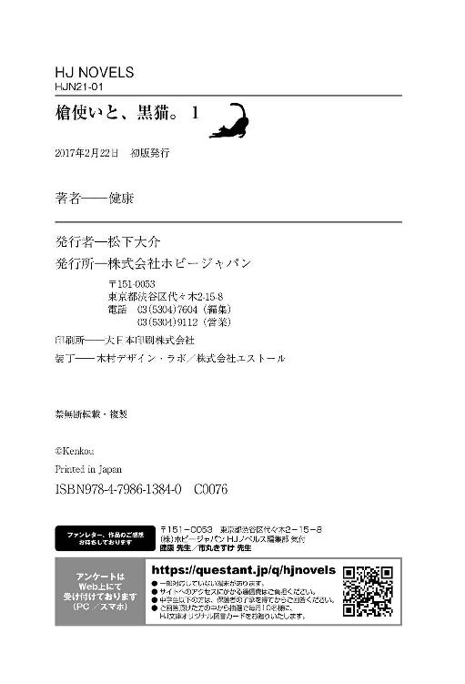